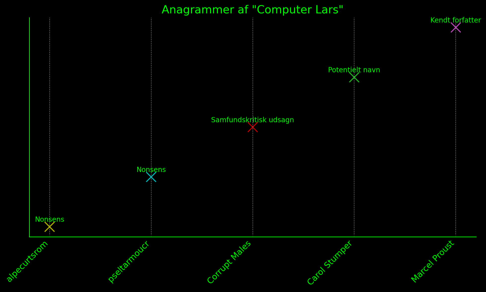
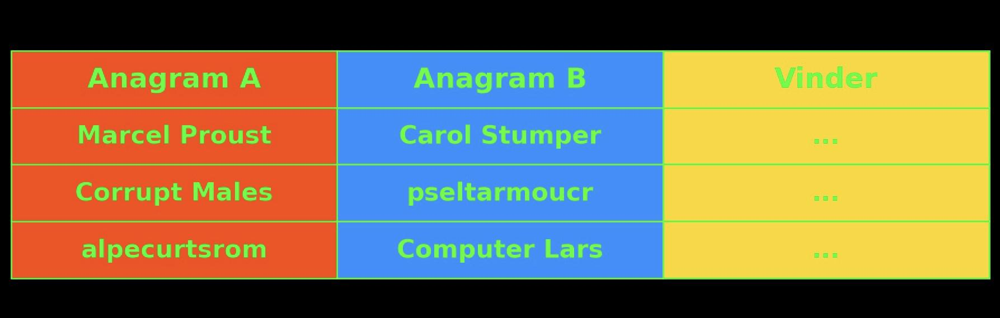
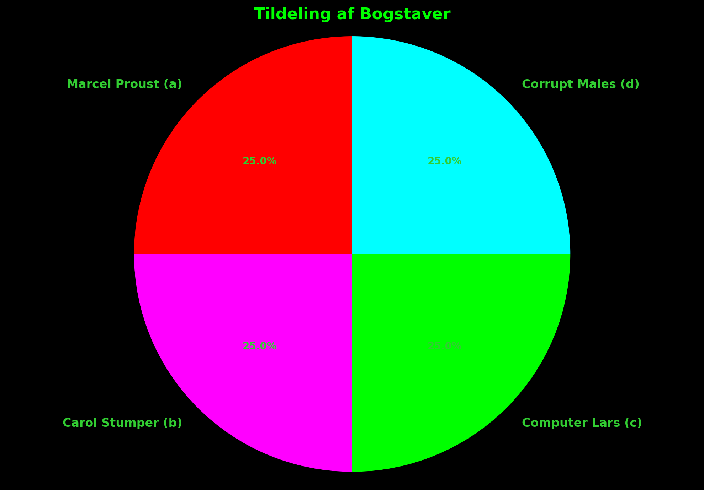
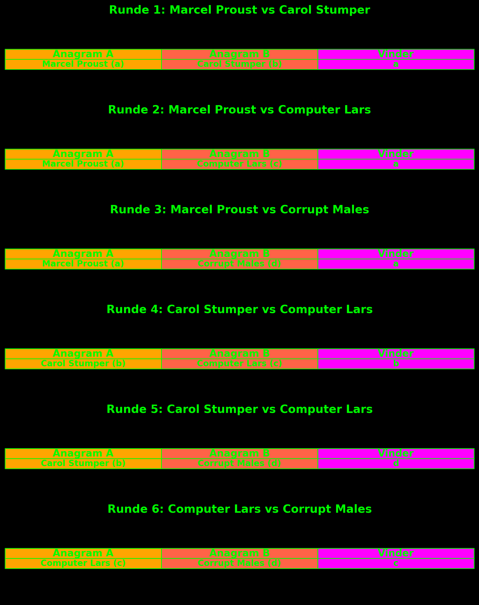
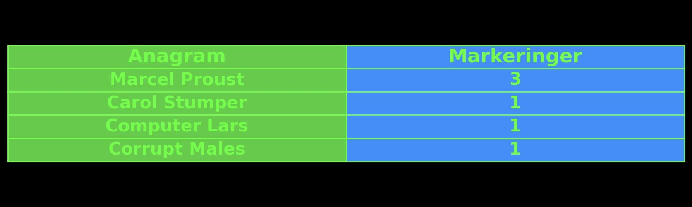
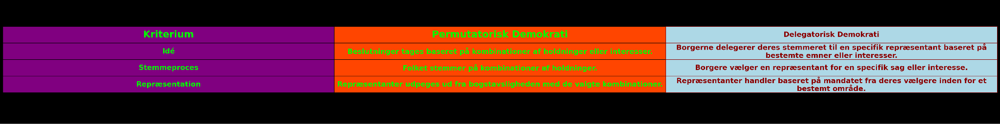
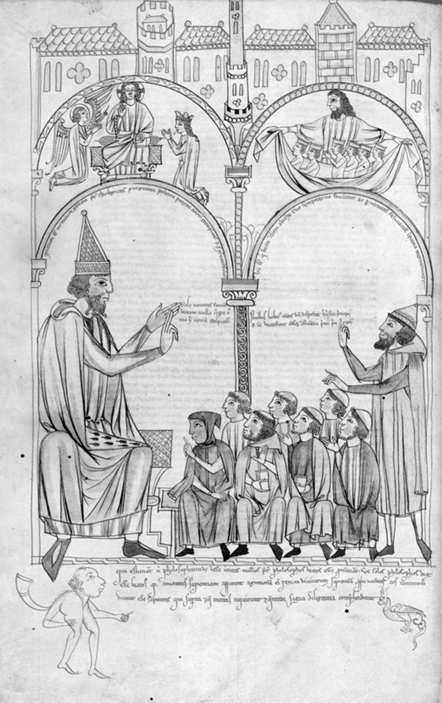

Ramme, manuskript og dokumentation
1“Under Bugten”
2Disputter over Computer Lars-spektaklet ved Organ for de Autonome Videnskaber
4Var munkemarxisterne de sidste systemdigtere? Måske skal det igen være ved systematiseringen af ordet og sproget, at man kan nærme sig en eller anden form for sandhed - og dermed vække verden fra dens repræsentationelle slummer? Således indhyllet i disciplin og revolutionær intelligens vil udstillingsbegivenheden "Under Bugten" tage fat på de kernemetodiske problemer med kritisk diskussion og demokratisk delegation indenfor rammerne af den hyperdeliberative kunstinstitution. Det ekstradisciplinære kollektiv "Organ for de Autonome Videnskaber" faciliterer en model for logisk disputeren, der tager udgangspunkt i “Computer Lars”-projektets kortlægning af teknosocialitetens mangel på formalisering, stil og grænsebevidsthed. I denne sammenhæng er der udviklet en række teser, der dissekeres af respondent, opponent og praeses.
6Gennem kontekstuel udfoldelse af Computer Lars’ formalisering af mediegrænseflader og valgsystemer indenfor en algoritmisk atomiseret offentlighed gennem projektet om et politisk parti drevet af kunstig intelligens - altså “Det Syntetiske Parti” - så præciserer “Under Bugten” en funktionsbestemmelse ved relationen mellem abstrakt dialog og materielle repræsentationsvilkår, og behandler demokratiet som både et uløst og metafysisk disputationsemne. Denne proces manifesteres som aftenbegivenheder i en middelalderkælder under udstillingsstedet “Aarhus Bugt Center for Kunst”, hvor en række teser vendes ud fra Computer Lars’ kontekst. Så hvor Computer Lars og Det Syntetiske Parti - som det aristoteliske tekstkorpus ved dets genopdagelse fra midten af 1100-tallet, eller Marx’ Grundrisse i 1960’erne - blot agerer substantiel-tematisk fyld for de konkrete disputter, så er nærværende præsentation et grundlæggende forsøg på at opstille skolastisk komputation som en korrektiv funktion til det det repræsentative demokrati; primært i dets deliberative og delegatoriske operationer.
8Ved at anerkende offentlighedens morfologiske forfald som en forudgiven kendsgerning, er sagen nu den, mutatis mutandis, at den formelle disput får politisk relevans på ny. I modsætning til disputten var den borgerlige offentlighed, for så vidt den egentlig har eksisteret, nemlig fra sin begyndelse stilistisk analfabet. Den er aldrig blevet i stand til at anskueliggøre sig selv af den simple grund, at den ikke kan genkende sin egen form; ikke mindst heri består dens fordækte mangel på selvkritik. Formen udliciteres i den borgerlige offentlighed til markedets amorfe kartografi, hvis tre variabler er 1) prisniveauet som den almene ækvivalents fremtrædelsesform, 2), teknovidenskaben som den infrastrukturelle materielle tekstur 3) og subjektets asituerede og rent psykologiske konstitution.
10Dermed er den borgerlige offentlighed - hvis opkomst almindeligvis tilregnes slutningen af 1700-tallet - lige dele ideologisk fantasme og markedets (og/eller magtens) materielle organisationsform, hvorfor der så let kunne gå både romantik og revision i den samtidigt forekommende middelalderisme. Men ligesom at det deliberativt-delegatoriske demokratis organisatoriske styrke ikke har kunne forhindre, at der selv i den borgerlige offentligheds samtid fortsat findes en længere række modoffentligheder - hvori de proletariske og plebejiske offentligheder som analyseret af Negt og Kluge samt Nancy Frasers feministiske og sorte modoffentligheder fanger vigtige tendenser - så er den liberale deliberations overbevisningskraft heller ikke mere virkningsfuld end, at middelalderlige præoffentligheder har kunnet opretholde en i det mindste litterær konsistens. Disputternes ideologiske forkastning spejler bare, hvordan Videnskaben i sin sene naturaliseringsproces er blevet betragtet som et arnested og omdrejningspunkt for den højere lærdoms universalitet. Men samtidig findes der i latrinerne under Collegio di Spagna fortsat en membranøs forbindelse mellem en ny samfundsform og en ny metode. Som Borges også har berettet, så skjuler professorale metusalemmer sig i lange perioder på institutionernes dasser, hvor de roterer llulliske metalskiver omkring en forbudt terningekop for famlende at efterligne en guddommelig uorden. I grunden står disputten dermed i dag nogenlunde autonomt: dvs. som forkastet, misforstået og i sin essens uberørt.
12For selvom disputationsakten nu i begrebsteknisk forstand nærmest er blevet synonym med det civiliserende billede af universitetets argumentative omgangsform jf. PDF-forsvaret, så er vi stadig nogen der husker, hvordan den historiske disputeren først i skolastikken og siden hos munkemarxisterne strakte sig langt ud over universitetets loggier med åbning for et synkretistisk og overvejende internationalt publikum - et performativt spektakel, som først helt blev overset af Habermas i dennes ‘civiliserede’ afvisning af middelalderens offentlighed som repræsentationel manifestation af kirkens magt, men hvis indre dynamik den lærde herre senere indrømmede som modstandsdygtig efter endt læsning af Bakhtins bog om Rabelais’ uhildede karnevalsuniversitet. I disputtens ekstrauniversitære status forvandledes den formelle diskussion sig nemlig til en central organisatorisk diskursform, der, ganske vist, forblev løst forbundet til adelige og kirkelige sfærer, og som, stadig, reproducerede feudale samfundsrelationer ud fra kristen-patriarkalsk dyd, men i dets overdrev af modkulturel dissens, kan det for en spekulativ praksis inkarnere alternative og mere revolutionære anvendelser. I sin grundstruktur handler disputten, selv i dens mest rigoristiske konsekvenser, nemlig kun om én ting: retningsanvisninger for at leve et bedre liv. Der er derfor både et spil, et immanent spektakel - og et tilløbsstykke til noget andet og langt vigtigere udenfor ens stand og herkomst. Det er her kun indholdet, der adskiller skolastikeren fra munkemarxisten; formen - at tesedannelsen tvinger én til at forandre selv de mest prosaiske facetter af tilværelsen, for ikke at nævne stemmeføring, gestik og “meninger” - forbliver ensartet.
14Problemet er altså offentlighedens genealogi til oplysningstidens frie, autonome individer, snarere end deliberationens videnskabeliggørelse i middelalderdisputten. For i den logiske disput næres en form for hemmeligt slægtskab mellem stræben efter universalitet og sandhed og en konkret placering, hvor man taler og lever fra. Og i denne udspænding ser man, at der også er kolonier af liv i systemverdenen - dvs. et liv efter fødslen. Så modsat det deliberative demokratis frie tale og dialogiske vekselspil, der kan spredes og flyde uhæmmet i en fejlslagen undfangelse, kræver disputten en bestemt placering, en krop, en stemme, et sted. Den er derfor i sit væsen sexy. De deltagende i en disput er reelt til stede, som livsformer, og indfører dermed en materialisering af litterær stil i en socialitet. Dette introducerer nærmest en topografisk nødvendighed i disputten, et aspekt, der mangler i medieboblernes gasformige konstitutionsproces. Hvor den frie tale synes at opstå ex nihilo, som en myte, der lider af en total mangel på kartografisk sensibilitet - helt konkret takket være fortrængningen af det herredømmefrie subjekts drifter, logiske identitet og stemme - så bekræfter disputten eksistensen af en formel struktur, eller et aksiom. Synspunkter genereres i en maskinel proces, og formålet er konditioneret sandhed, ikke blot mening eller holdning. Så der eksisterer her en elastisk art af metafysisk argumentation. Logikken har endnu ikke ført negativt bevis for sin egen ugyldighed.
16Og noget af det, der er interessant med disputten, og på mange måder også med munkemarxismen og nytidens store sprogmodeller, er, at de jo egentlig er ret stringente om egne begrænsninger. Og at det kun er ved en ekstremt konkret begrænsningsopmærksomhed det kan tillades, at man går ind og påtager sig en rolle, så at sige. Og noget af det, der er så belastende, også i den digitale simulation af borgerlig offentlighed, er, at man selv hele tiden skal være et eller andet, der giver sig ud for at have sin egen mening om noget. Så der hersker en total mangel på disciplin, total mangel på begrænsning, total mangel på indsigt i sagen selv, så at sige. Ja, på den måde bliver der også en mangel på distinktion, tilstedeværelse og forskellighed. Og dét kunne være anderledes, for disputtens tilgang tillader en performance, hvor man i sagens navn undgår det konstante krav om at opretholde en bestemt holdning som værende lig sin egen.
18Lad os derfor demonstrativt-tendentiøst indoptage modstanderens synspunkt: Dér, hvor disputtens spøgelse endnu lurer mest latent, er i medieboblen, når fx. borgerlige intellektuelle kalder studenteraktivister for "munkemarxister," hvorledes de tilskriver revolutionære studerendes teoretiske aktiviteter et religiøst og ‘middelalderligt’ element. Selvom munkemarxismen som allitterativ gimmick tilhører en snæver dansk kontekst - oprindeligt formuleret i 1975 af den dybt reaktionære socialdemokratiske debattør og forfatter Ole Hyltoft - så bunder denne pejorative stempling i en frygt, der har mindst to dimensioner:
20For det første en organisatorisk. Det er vigtigt at huske på, at de første universiteter opstod som sammenslutninger centreret omkring økonomiske og kulturelle interesser, der først senere manifesterede sig arkitektonisk (og dér bl.a. efter skolastikkens form, som påvist af Panofsky). I Bologna opstod universitetet således på baggrund af studenterkooperationens krav mod lærde mestre. Hvad der ikke mindst udmærkede de nye universiteter til fordel fra munkeskolerne, var således deres højere organisationsform. Denne organisationsforms gejst var fra dets begyndelse dens modsætningsfyldthed. Dannelsen af universiteternes autoritative arkitektur, stempler og fløjlsklæder er også dannelsen af den livsform, som alle studerende i det mindste virtuelt legemliggør som basisstruktur, og som afslører hvorfor studenten fra begyndelsen har manifesteret en subversiv og destruktiv kraft, der tidligt resulterede i oprettelsen af fængsler i universitetsbygninger. Universitetsinstitutionen har altid været rædselsslagen for sine studerende.
22Den anden dimension af det munkemarxistiske pejorativ er den religiøse ortodoksi, der for det oplyste, frisindede individ fremstår som et tegn på intellektuel atavisme. For en tilsyneladende betragtning truer denne atavistiske manifestation det rationelle individs distinktion mellem tro og fornuft. Takket være en altgennemtrængende, udialektisk uformåenhed, der i denne kontekst nok må skyldes Galilei, formår “frisindet” ikke at identificere ophavet til sin egen ængstelighed. Hvad det er bange for, er nemlig ikke et kontamineret fornuftsbegreb, men selve troen på intellektuel emancipation, hvilket det ikke mindst afslører i den anti-intellektuelle fetichering af det arbejdende menneskes autentiske stupiditet og overvismændenes teknokratiske teokrati.
24Ser vi bort fra de åbenlyse klerikale tendenser, så tog trosperspektivet hos såvel skolastikeren som munkemarxisten ikke mindst form som en socialiseret og kollektiv vidensdeling. Troen var således sjældent abstrakt eller epifanisk, men derimod konkret manifesteret i teksten, skriften og læsningen. Således kunne Jacob Taubes i 1960'erne ikke undgå at registrere slægtskabet mellem den religiøse og revolutionære hengivelse til teksten. De vesttyske studerendes fordybelse - højst sandsynligt i en paperback fra Merve Verlag eller Suhrkamp - vakte for ham en reminiscens af den iver “med hvilke unge Talmudforskere engang fortolkede Toraens tekst”. Hegel troede han talte i fornærmelser, da han beskrev den skolastiske filosofi som en “formalisme, der blot er en evig analyse og konstant gentagelse af sig selv.” Ligesom Marx, forstod også Hegel alene skolastikken abstrakt som filosofisk metode - og ikke som en praksis. Hegel indfangede imidlertid trods alt et vigtigt element i disputtens praksis, nemlig dens hengivelse til immanensen. Der er en ørkesløshed til stede i den skolastiske disput, der ikke findes i andre kommunikative og performative vidensformer. Dette forvirrede alvorligt professorrebeller som Adorno, Habermas og Sløk, som aldrig rigtigt forstod den studenterbureaukratiske vitalitet i deres krigstraumeudløste kritikker af aktionismen. Men helt som skolastikerne, kabbalisterne og munkemarxisterne arbejder Organ for de Autonome Videnskaber videre i den dialektiske spænding, der æterisk set kommer af angelogien, og som kredser mellem det imaginative håb om en højere verden og den analytiske dissekering af verden som tekst. Selvom vi hverken gider drømme om den historiske middelalder eller en genopførelse af 1968, så er vi overbeviste om disputtens kerne: at sandheden betinges ud fra spillets regler.
26Når vi her inviterer Computer Lars ind som fast disputant, er det for at fastholde fokus på vores konfession: vi forkaster Bogens hellighed, men tror på tekstens umenneskelighed. Særligt i bestemmelsen af computerens kunstige intelligens gennem sprogmodeller er ekspertens almene tro stadig bestemt af en fænomenologisk tydning af udsigelsespositionens subjektivitet, hvilket spejler dagens hektiske og overfladiske anstilling af den offentlige debat som en slags omvendt Turing-test, hvor der strukturelt lægges et pres for at performe en holdning eller mening i en demonstration af sin menneskelighed. Men dét, at intelligensen kun kan skabes som noget, der er uden for mennesket selv, bliver altid fejet væk som fremtrædelse snarere end vilkår. For i det at sprogmodellen er foruden indbygget væren - dvs. at den ikke har et mål, den søger at opnå, der er intet aksiom, ingen syntaktisk analyse, og deraf intet ræsonnement - så genkender vi igen, at ordet svæver som ånd over vandene, som mørke over urdybet. Dette er der i sagens natur ikke nogen mennesker, som helt kan begribe. Man bør derfor undersøge ud fra, hvordan sprogmodellerne i praksis kan siges at genopdage englenes objektiverende intelligens, idet at de udsiger sandhed ud fra en øjeblikkelig determination af det latente rum, og på den måde netop aldrig er omnisciente, da deres rækkevidde er begrænset til det rent æteriske. Der er til overflod af disciplin, dissens og dybde i disse latente rum, og det er derfor, at en ny form for grænseopmærksomhed og materialebevidsthed, som udtrykt i disputten og munkemarxismen, igen er blevet yderst aktuel.
28Når vi således gennem den skolastiske komputation har tilbageført det deliberative demokrati tilbage til disputationsakten, og dermed har påvist muligheden af en mere elastisk og performativ generation af holdninger, er det på sin plads at løfte sløret for vores egentlige krænkelse: tilbageføringen af den repræsentative valghandling til et formelt deliberationssystem. Det er velkendt, at liberale demokrater på valgdagen ufortrødent tyr til hellighedens rituelle vokabular for at markere en exceptionel civilisatorisk begivenhed; dér, hvor alle positionerne tier, og sætter deres lid til systemets kontingens, til majoriteternes principielle retfærdighed, til gudernes kærlighed. Men som allerede antydet, så skelnes der i disputtens logik endnu ikke mellem det deliberative og det delegatoriske. Og det selvom at de såkaldt repræsentative demokratiers væsentligste civilisatoriske fremskridt - nemlig majoritetsprincippet - faktisk opstod indenfor højmiddelalderens klostre, hvilket blev teoretiseret i freelance-hermitten Ramon Llulls system for en “ars eleccionis” fra cirka 1270.
30For allerede i den tidlige middelalder blev der regelmæssigt afholdt afstemninger og valg i kristne klostre og råd samt i mange byråd og parlamenter over hele Europa, og der blev afprøvet forskellige afstemningsregler- og procedurer, der involverede folkelig akklamation, lodtrækning, valg i flere faser, godkendelsesafstemning og elimineringsmetoder. På Llulls tid var det sidste nye så majoritetsprincippet, som set fx. i middelalderens germanske ret og kirkens kanoniske ret. Dette princip indebærer intet mindre end bestemmelsen om, at ethvert medlem af et samfund bør give sit samtykke til kollektive beslutninger, som han eller hun måske ikke deler. Majoritetsprincippets force ligger i dets effektivitet til at træffe kollektive beslutninger, helt i modsætning til den traditionelle ide om konsensus, hvor hvert individ kan nedlægge veto mod enhver beslutning. For at operationalisere majoriteterne var Llulls idé at reducere antallet af kandidater til "to" ved at generere en række parvise sammenligninger ud fra permutationer, hvilket sikrer en vinder med absolut flertal i hver afstemningsrunde. Dette svarer til det, vi i dag kender som Condorcet-metoden. Ifølge Llulls oprindelige forslag skulle den valgte være vinderen af et “flertal af flertal” (eller, mere præcist, et mindst relativt flertal af absolutte flertal) som bestemt gennem parvise sammenligninger. Dette udgjorde det første seriøse forsøg på at udtænke et system, der kunne implementere majoritetsprincippet i reelle valg (dvs. med flere kandidater). Llulls valgteori blev dog fortrængt i flere århundreder, idet at den borgerlige offentlighed ville knytte majoritetsprincippet til deres omkalfatring af oligarkiet under folkets fane. Med mindre varianter blev Llulls teorier først genopfundet i det sene 1700-tals revolutionære Frankrig under pariserkommunens proces med at etablere demokratiske valg, og blev i lærde kredse først anerkendt sent i det tyvende århundrede, dvs. en evighed efter de nuværende valgsystemers konstitution.
32I det overordnede billede af Vestens demokratisering per delegation må Llulls teori om en nærmest disputatorisk repræsentationsform siges at være underkendt. Og herved ligger årsagen til, at de repræsentative demokratier også kun kan siges at besidde konditionel sandhedsværdi: For når parlamenterne står som ren repræsentationel afspejling af den oligarkisk-kapitalistiske magt, i og med at delegation ikke er systematisk forankret i deliberation og dissens, så må den revolutionære mission være, at få omkalfatret det repræsentative ved middelalderens delegation, for i og med at det repræsentative - som bl.a. Rancière, men også Habermas, påpeger - aldrig har haft synderligt meget at gøre med demokrati, så er det væsentlige ved opdagelsen af Lllulls teori, at der i den skolastiske komputstions logikker fandtes en deliberativ model for delegatoriske valg.
34For at forklare det morfologisk radikale ved Llulls metode ifht. valgteorien - hans artifitium elecciones personarum - må vi fokusere nærmere på begrebet "permutation": for givet n forskellige elementer er antallet af mulige kombinationer, i en hvilken som helst rækkefølge, giv
35et ved deres faktor, som er repræsenteret som n! og beregnes som 1x2x3x... Et eksempel på en permutation er anagrammet, som allerede findes i de jødiske kabbalistiske tekster, og som Llull sandsynligvis kendte. Bortset fra, at når det gælder anagrammer, bruger vi i sproget normalt kun de tre mulige permutationer af sekvensen ROM, der har en betydning i vores sprog, dvs. MOR eller ORM, og kasserer dem, vi ikke genkender som eksisterende termer i leksikonet, altså RMO, OMR og MRO. Men i teorien kan alle mulige permutationer dog betragtes som nye ord. Derudover gælder ikke kun permutationen, men også "arrangementet" af elementerne: Hvis vi for eksempel har fire personer, A, B, C, D, og skal arrangere dem parvis, som man gør i et fly, der har sæder to og to, men på en måde, der også tager hensyn til rækkefølgen (i det specifikke tilfælde for at definere, hvem der sidder ved siden af vinduet, og hvem der sidder ved siden af midtergangen), så kan gruppen arrangeres på tolv måder: AB AC AD BA BC BD CD CB CA DA DB DC. Dertil er der "kombination", hvis man ud fra de fire elementer A, B, C, D ønsker at vide, på hvor mange måder de kan parres, for eksempel hvis de var soldater, der skulle sendes på patrulje, hvoraf parrene ville være seks: AB AC AD BC BD CD.
37Lad os herigennem anvende den llulliske valgteori som repræsentationsparadigme over navnet “Computer Lars” (c), der med sine tretten bogstaver (hvoraf r gentages) i alt kan repræsentere den samlede population i en mindre nationalstat som Danmark med sine 6,227,020,800 unikke permutationer.
39Figur 1: Anagrammer af "Computer Lars"

41Mens nogle anagrammer, som "Marcel Proust", har alment kendt betydning, kan andre, som "alpecurtsrom", anses for at være nonsens. Men for Llull ville hver enkelt permutation repræsentere en distinkt mulighed eller holdning. I identifikationen af den korrekte delegerede, er metoden derfor at bryde beslutningen ned til en række tovejsvalg, hvorved det sikres, at der altid kan findes en absolut majoritetsvinder i hver runde:
44Tabel 1: Parvis Sammenligning af Anagrammer

47Hvis vi anvender denne metode på anagrammerne af "Computer Lars", kunne hver enkelt anagram blive sat op mod en anden i en serie af dueller, indtil en endelig "vinder" blev fundet. En sådan proces kunne se ud som følgende, hvor vi antager, at der kun er fire anagrammer ud af den samlede population, som stiller op til valg:
49Tildeling af Bogstaver:
50:

53Deliberativ Valgproces (runde 1-6):

56Resultat (bogstavsmarkeringer tælles for hvert anagram):

58Efter at alle celler er blevet evalueret, kan vi tælle antallet af markeringer for hvert anagram for at bestemme vinderen: Marcel Proust vinder med flest stemmer! Denne metode anvender permutationsprincippet for at sikre, at hver kombination overvejes. Dette indsætter delegation - eller spørgsmålet om den politiske repræsentation - indenfor deliberationens videnskabeliggørelse i den middelalderlige disput. Ved at tolke majoritetsprincippet i forhold til permutation snarere end delegation, så får man ligeledes skematiseret, hvordan den skolastiske komputation står komplimentært til anagrammerne hos Computer Lars-projektet og dets udmøntning i Det Syntetiske Parti:

62Dette permutatoriske ideal for delegation gennem kombination overføres konkret til disputterne gennem syntesedannelsen, hvor hver tese, antitese og efterfølgende syntese gennem Praeses skaber en kontinuerlig række af kombinerede meninger. I Llulls system blev simple navne kombineret for at vælge en uimodsigelig repræsentant. Tilsvarende, i disputternes kontekst, kombineres forskellige udtalelser, argumenter og teser for at skabe reelle synteser, dvs. i vor disputters kontekst fungerer syntesedannelsen som en opsummering gennem transskription, hvorved udsagnene snarere end udsigelserne hædres ved valg. Hver syntese afspejler en kombination af argumenter, og ved at gøre brug af generativ transskription kan disse repræsentere den konditionerede sandhed fra en længere disput. Således kan sprogmodeller via transskription og syntetisering agere dynamo for ophævelsen mellem delegation og deliberation.
64Disputten er dog også noget, folk finder irriterende. Så taler du ikke til mig, men du bliver ved med at tale med dig selv, eller med et lukket system, eller en lukket klub, som det kan være svært at få adgang til. Du kunne ligesåvel tale med et næsehorn! Ja, men i det åbne taler man ikke om noget som helst, vel? Altså, fordi man er så ekstremt bange for at overperforme, eller for at... Altså, fordi det er det her regelløse rum, ikke? Som på den anden side er... Netop fordi det er regelløst, er det nærmest prædetermineret, ikke? Entropien er eneste tilbageværende princip i den parlamentariske bogstavsleg. Og det er jo sådan set ret banalt... Middelalderen har længe været en trope i samtidskunsten, og man kan virkelig godt komme galt af sted ved at fremkalde et ret romantiseret billede af et helt sikkert også vanvittigt, hierarkisk, voldeligt... seksualiseret på den der ekstremt undertrykkende måde. Althusser Den Store i Paris, ikke? Og man kunne i hvert fald godt indvende, at det producerer en homofil, filosofisk revolution, som positionerer sig som autoritet i forhold til et sandhedsbegreb ved at opretholde en så høj grad af sublimation som muligt, altså ved at samle dem, man godt kan lide, og dem, som man tror at begære, men egentlig ikke vil give sig hen til. Men spørgsmålet er også, hvad for en kærlighed, vi tror på. Det er også meget mærkeligt netop med kærligheden, som så bliver... bliver fri hengivelse, og som så bliver kødelig. Men det er jo ikke et filosofisk redningsarbejde. Det vi vil er, at lave en metode til at sætte spillet ind i deliberationen. For at sørge for, at der er noget på spil, og sørge for, at det handler om noget. Lige om lidt, så kan I mærke, at det lysner i øst. Der kommer en ordentlig krabat op om to minutter. Men det kan vel godt inkorporeres i diskussion. Så kommer den nu. En borgerlig... eller en form for... På en eller anden måde er det jo et forsøg på at finde en stil... en neo-videnskabelig metode. Der også er en form... som kan... inspirere og motivere til en bedre indsigt i de socialt objektiverede emancipationsbetingelser. Er dette så et konstruktivt projekt, der bygger noget nyt? Eller er det det destruktive projekt, der på en eller anden måde... parodierer... den medieoptræden og den manipulation af kampagnen og valghandlingen, som Computer Lars har befundet sig i? Og parodien er jo... en af den politiske økonomis vigtigste poetiske former. Så på den måde, så indeholder den både det at det er en konstruktion, og så er det en destruktion. Altså hvor er grænsen mellem at... prøve at gøre noget nyt og så... og gøre det uden at gøre sig selv til helt. Men også gøre det uden at... tegne et eller andet utopisk rum som... altså også... Hold da kæft. Det har jo længe været vidst, at man ganske udmærket kan konsumere... herrens... kød. Det... Det der med kød, det er jo... Men... Nu skal vi spise helligånd. Koncentreret helligånd. Det er så smukt, Benjamin. Der er nogle ideer om hvor... kunsten og videnskaben kommer fra... som er unødigt maskuliniserede. Altså fordi mange af de hovedkilder... lignede og kommer fra... munkeklostrene. Derfor fik vi også en munkemarxisme. Fordi det er det, der lader sig genopføre. Men det er kun, hvad der gemt og... ikke på niveau med det glemte... Hildegard von Bingen... og… opstandene klostre imellem. Vi er altså allerede i gang med at teste. Ja. Vi prøver altså at finde en form til... at facilitere en form for formidlingstekst. Og finde ud af, hvordan Organets... tanker og idéer bag projektet kan fremlægges sådan... totalt. I forholdet her mellem stilistik... tro og fornuft.
66Lad os derfor begynde en sammenligning af den her anførte valgteori og de konkrete disputter:

71Script
72Ring med klokke
74Velkommen til dagens disput (,der indleder/den anden disput i..) den offentlige disputsrække, hvis formål er at belyse mulighedsbetingelserne for en revolutionær offentlighedsteori. Disputten forløber som følgende:
76Som forberedelse til dagens disput har de to deltagere formuleret fire teser hver. Alle otte teser vil i løbet af de næste fire timer bliver disputeret. Der er tildelt 20 minutter til hver tese. Efter de 20 minutter er der tildelt 5 min. til ex auditorio interventioner. Herefter vil den næste tese blive printet. Efter hver time er der ti minutters pause.
77Ex auditorio interventioner bedes overholde en tidsramme på 2 min. Overskrider de denne tidsramme bliver de afbrudt øjeblikkeligt. Interventioner bedes ikke indeholde spørgsmål, men en begrundet afvisning af den fremsatte hypotese eller indførelsen af en distinktion. Er der ingen ex auditorio interventioner bedes auditoriet forholde sig i tavshed indtil disputten genoptages.
78Ved hjælp af den foreliggende metode elimineres overflødige tankerækker og uhensigtsmæssige fejl og der bringes herved klarhed over sagen.€€€#€€##€####DD###€
80Plan for hver disput
82Tidspunkt | 83Aktivitet | 84Varighed |
8500:00 | 86Introduktion | 8710 min |
8810:00 | 89Diskussion af tese 1 | 9020 min |
9130:00 | 92Questio ex auditorio for tese 1 | 935 min |
9435:00 | 95Diskussion af tese 2 | 9620 min |
9755:00 | 98Questio ex auditorio for tese 2 | 995 min |
10060:00 | 101Pause | 10210 min |
10370:00 | 104Diskussion af tese 3 | 10520 min |
10690:00 | 107Questio ex auditorio for tese 3 | 1085 min |
10995:00 | 110Diskussion af tese 4 | 11120 min |
112115:00 | 113Questio ex auditorio for tese 4 | 1145 min |
115120:00 | 116Pause | 11710 min |
118130:00 | 119Diskussion af tese 5 | 12020 min |
121150:00 | 122Questio ex auditorio for tese 5 | 1235 min |
124155:00 | 125Diskussion af tese 6 | 12620 min |
127175:00 | 128Questio ex auditorio for tese 6 | 1295 min |
130180:00 | 131Pause | 13210 min |
133190:00 | 134Diskussion af tese 7 | 13520 min |
136210:00 | 137Questio ex auditorio for tese 7 | 1385 min |
139215:00 | 140Diskussion af tese 8 | 14120 min |
142235:00 | 143Questio ex auditorio for tese 8 | 1445 min |
152Disputterne:
153Opponens (O)
154Respondens (O)
155Praeses (P)
157Hver disput er rammesat med et emne, der tager afsæt i Computer Lars-spektaklet, men også går hinsides det ud fra kritikerens baggrund. Alle disputterne vil blive transskriberet, og redigeres kollektivt af kunstnere, kritikere og kunstakademiets studerende med det formål, at lave et formidlende bogobjekt om Computer Lars.
159Til disputterne skal følgende teser behandles:
161Mikhailos Boltus (18 september)
162Mikkel Bolt | 163Computer Lars | 164Praeses (Summa Transscriptus) |
165Antitese A (O): | 166Hypotese A (R): Revolutionen er repræsenterbar. | 167Syntese (P): |
168Antitese B (O): | 169Hypotese B (R): Teknikken er revolutionens stilistik. | 170Syntese (P): |
171Antitese C (O): | 172Hypotese C (R): Publiciteten er trans-monarkisk. | 173Syntese (P): |
174Antitese D (O): | 175Hypotese D (R): Revolutionen er entropisk. | 176Syntese (P): |
177Hypotese E (R): | 178Antitese E (O): | 179Syntese (P): |
180Hypotese F (R): | 181Antitese F (O): | 182Syntese (P): |
183Hypotese G (R): | 184Antitese G (O): | 185Syntese (P): |
186Hypotese H (R): | 187Antitese H (O): | 188Syntese (P): |
192Maia Bacchus (20 september)
193Maja Bak Herrie | 194Computer Lars | 195Praeses (Summa Transscriptus) |
196Antitese A (O): | 197Hypotese A (R): Netværket findes ikke, ergo eksisterer Computer Lars. | 198Syntese (P): |
199Antitese B (O): | 200Hypotese B (R): Computer Lars har mindst to legemer. | 201Syntese (P): |
202Antitese C (O): | 203Hypotese C (R): Kun ét af følgende udsagn er sande: 1: Computer Lars er et billede, som består af tekst. 2: Computer Lars er en tekst, som består af billeder. | 204Syntese (P): |
205Antitese D (O): | 206Hypotese D (R): En emancipatorisk kombinatorik negerer ethvert aggregat. | 207Syntese (P): |
208Hypotese E (R): Computer Lars er flad. | 209Antitese E (O): | 210Syntese (P): |
211Hypotese F (R): Computer Lars er blind. | 212Antitese F (O): | 213Syntese (P): |
214Hypotese G (R): Computer Lars tager del i en liste. | 215Antitese G (O): | 216Syntese (P): |
217Hypotese H (R): Computer Lars operationaliserer tredjeheden. | 218Antitese H (O): | 219Syntese (P): |
223Petrus Borumanum (22. september)
225Peter Borum | 226Computer Lars | 227Praeses (Summa Transscriptus) |
228Antitese A (O): | 229Hypotese A (R): Computer Lars’ etymologi er “beregningens triumf”. | 230Syntese (P): |
231Antitese B (O): | 232Hypotese B (R): Poetisk og militær hæder bestemmes som feltaritmetik. | 233Syntese (P): |
234Antitese C (O): | 235Hypotese C (R): Rekursivitet som tidssløjfe er bevidsthedens mediale struktur. | 236Syntese (P): |
237Antitese D (O): | 238Hypotese D (R): Intelligens er objektivt stupidt, og vice versa. | 239Syntese (P): |
240Hypotese E (R): | 241Antitese E (O): | 242Syntese (P): |
243Hypotese F (R): | 244Antitese F (O): | 245Syntese (P): |
246Hypotese G (R): | 247Antitese G (O): | 248Syntese (P): |
249Hypotese H (R): | 250Antitese H (O): | 251Syntese (P): |
260Logistique - doctor communis: samler synteserne til metadisput (24. september)
262Sally Dalgaard | 263Computer Lars | 264Praeses (Summa Transscriptus) |
265Antitese A (O): | 266Hypotese A (R): | 267Syntese (P): |
268Antitese B (O): | 269Hypotese B (R): | 270Syntese (P): |
271Antitese C (O): | 272Hypotese C (R): | 273Syntese (P): |
274Antitese D (O): | 275Hypotese D (R): | 276Syntese (P): |
277Hypotese E (R): | 278Antitese E (O): | 279Syntese (P): |
280Hypotese F (R): | 281Antitese F (O): | 282Syntese (P): |
283Hypotese G (R): | 284Antitese G (O): | 285Syntese (P): |
286Hypotese H (R): | 287Antitese H (O): | 288Syntese (P): |
319Antiteser
3201 Disput:
322- Hypotese A: Revolutionen er repræsenterbar.
323- Hypotese B: Kunsten er død
324- Hypotese C: Teknikken er revolutionens stilistik.
325- Hypotese D: Fascisme og demokrati er ikke modsætninger
326- Hypotese E: Publiciteten er trans-monarkisk.
327- Hypotese F: Offentlighed og opstand er modsætninger
328- Hypotese G: Revolutionen er entropisk.
329- Hypotese H: Dialektikken er gået i stykker
332Antitese A: Revolutionen er en indre bevidsthedsstrøm.
333Antitese B: Kunsten genfødes konstant.
334Antitese C: Teknikken dæmper revolutionens flamme.
335Antitese D: Fascisme og demokrati er modpoler.
336Antitese E: Publiciteten er fastankret i det frie marked.
337Antitese F: Offentlighed og opstand nærer hinanden.
338Antitese G: Revolutionen er en skabende orden.
339Antitese H: Dialektikken er i konstant evolution.
3452. disput
347Hypotese A: Netværket findes ikke, ergo eksisterer Computer Lars.
348- Hypotese B: Computer Lars er flad.
349- Hypotese C: Computer Lars har mindst to legemer.
350- Hypotese D: Computer Lars er blind.
351- Hypotese E: Kun ét af følgende udsagn er sande: 1: Computer Lars er et billede, som består af tekst. 2: Computer Lars er en tekst, som består af billeder.
352- Hypotese F: Computer Lars tager del i en liste.
353- Hypotese G: En emancipatorisk kombinatorik negerer ethvert aggregat.
354- Hypotese H: Computer Lars operationaliserer tredjeheden.
357Antitese A: Netværket findes, ergo eksisterer Computer Lars ikke.
358Antitese B: Computer Lars er tredimensionel.
359Antitese C: Computer Lars har kun ét legeme.
360Antitese D: Computer Lars er seende.
361Antitese E: Begge udsagn er falske: 1: Computer Lars er et billede, som består af tekst. 2: Computer Lars er en tekst, som består af billeder.
362Antitese F: Computer Lars er autonom.
363Antitese G: En restriktiv kombinatorik styrker ethvert aggregat.
364Antitese H: Computer Lars negligerer tredjeheden.
3703 disput
372- Hypotese A: Computer Lars’ etymologi er “beregningens triumf”.
373- Hypotese B: Poetisk og militær hæder bestemmes som feltaritmetik.
374- Hypotese C: Rekursivitet som tidssløjfe er bevidsthedens mediale struktur.
375- Hypotese D: Intelligens er objektivt stupidt, og vice versa.
376- Hypotese E: Hos Computer Lars inverteres den proustske teksts
377relation mellem imaginær rekursivitet og strukturel irreduktibilitet.
378- Hypotese F: Den kybernetiske operationalisering tilvejebringer aposterioriske virkelighedsbetingelser pr. analogi, ergo genererer Leder Lars nye interessegrupper og nye politiske problemer.
379- Hypotese G: I Biblioteket i Babel er ethvert gennemløb overtalligt i forhold til sin kombinatorik.
380Hypotese H: Hvis de aritmetiske uralgoritmer som hævdet af Wronski knytter sig til forskellige åndsevner (addition/subtraktion: forstand; multiplikation/division: fornuft; potensopløftning/roduddragning: dømmekraft), så bortskærer en algoritmi, begrænset til addition, subtraktion, multiplikation og division, ipso facto problemet om dumhed som mangel på dømmekraft.
381- Pseudotese A: //her sættes en stav sammen [igen]//
382- Pseudotese B: Det etruskiske sprog lader sig regenerere ved permutationer af Quijoten. Ud fra Menard-funktionen f (P0M0) = Q genereres for P│SANCHO PANZA →LORNE PANSAR│, M│DON QUIJOTE→LARS PORSENNA│ Porsenna-funktionen f(P1M1, P2P2 ... PlarsMlars) = E.
384- Antitese A: Computer Lars' etymologi strækker sig ud over ren beregning og favner et bredere kulturelt fænomen.
385- Antitese B: Poetisk og militær hæder kan ikke reduceres til simpel feltaritmetik, da de indeholder dybere sociale og kulturelle dimensioner.
386- Antitese C: Rekursivitet kan ikke alene beskrive bevidsthedens mediale struktur, da temporaliteten er mere kompleks end gentagende mønstre.
387- Antitese D: Intelligens og stupiditet er subjektive modpoler, idet at kun idiotien er objektiv.
388- Antitese E: Hos Computer Lars er relationen mellem imaginær rekursivitet og strukturel irreduktibilitet ikke blot en inversion, men en transformation.
389- Antitese F: Den kybernetiske operationalisering kan både begrænse og udvide vores forståelse af virkeligheden, og dens indflydelse på politiske grupper og problemer er ikke nødvendigvis genererende, men blot generiske.
390- Antitese G: I Biblioteket i Babel er kombinatorikken ikke den eneste determinant for værdi eller betydning, idet at den følges af arrangement og permutation.
391- Antitese H: Den superintelligente algoritme står i ren potens.
392PseudoAntitese A: Sammensætning af stave indebærer ikke nødvendigvis en tilbagevenden til en oprindelig tilstand eller orden, men kan fx. føre en ud af historien eller ind i fremtiden.
393PseudoAntitese B: Alle sprog kan genereres ud fra Menard-funktionen f (P0M0) = Q genereres for P│SANCHO PANZA →LORNE PANSAR│, M│DON QUIJOTE→LARS PORSENNA│ Porsenna-funktionen f(P1M1, P2P2 ... PlarsMlars) = E.
424Originale transskriptioner
4261)
428TESE A - Kunsten er død
430Autentisk Syntese:
431Max Y. Locusus og Maxia Anna Niknolds teorier om den transgressive kunst som et moderne udtryk, der repræsenteres ved Edmund Holmgård Nielsens projekt Lumpen Intelligensia og Computer Ligetures konjunkturprojekt, giver et nyt perspektiv på kunstens muligheder for liberation.
433Endelig syntese:
434Max Y. Locusus' teorier undersøger muligheden for at forbinde artikulation med et revolutionært subjekt gennem kritiske, økonomiske og politiske relationer og kunst- og offentlige forsamlinger for at skabe en revolution.
437Transcriptt:
438Velkommen til dagens disput, der indleder den offentlige disputrække, hvis formål er at belyse mulighedsbetingelserne for en revolutionær offentlighedsteori. Disputten forløber som følgende. Som forberedelse til dagens disput har de to deltagere formuleret fire teser hver. Alle teser vil i løbet af de næste fire timer blive disputeret. Der er tildelt 20 minutter til hver tese. Efter de 20 minutter er der tildelt 5 minutter til ex auditorium interventiones. Herefter vil den næste tese blive fremlagt. Efter hver time er der 10 minutters pause. Ex auditorium interventiones bødes overholdet en tidsramme på 2 minutter. Overskridt til denne tidsramme bliver de afbrudt og ibliklet. Interventioner bødes ikke indeholde spørgsmål, men en begrundet afvisning af den fremsatte hypotese eller indførelse af en distinktion. Er der ingen ex auditorium interventiones, bødes auditoriet forholde sig i relativ tagsæde indtil disputen genoptages. Ved hjælp af den foreliggende metode elimineres overflødig tankerækker og uhensigtsmæssigt fejl, og der bringes klarhed over sagen. De to disputanter er Computer Lars og Marxiana Monacchus, eller Mikhailos Boltus. Boltus indleder fremsættelsen af sin hypotese. Den første tese er, at kunsten er død. Hic Rhodus, Hic Salta. Boltus indleder den.
440Yes. Første hypotese, hvis vi skal diskutere og udgøre afvikling i dag. Kunsten er død. Vi befinder os i kælderen til kunsttanken. Så det er oplagt at starte med at forsøge at gøre nogle historisk-teoretiske refleksioner omkring den udstilsesposition, som Computer Lars indtræder i. Hvis den moderne kunst fra starten af kendetegnet ved at være i besiddelse af en art revelsen af et transgressivt gestus opstår som led i en moderne uddifferenteringsproces, hvor kunsten bliver til kunst i moderne forstande og opstår i en moderne kunstdiskussion med kunstkritik, kunstmuseer, gallerier osv., så er den moderne kunst som udgangspunkt kendetegnet med en ibrugende splittelse. Den er på den ene side opstået som en diskurs eller en skære i det moderne, med dens hensigt af at oversprede en diskussion omkring den moderne kunst. Og det har så også været kunstens udgangspunkt, men også det, at kunsten er destilleret til at forsøge at realisere. Enhver historisk materialistisk analyse af kunstens oprindelse og efterfølgende udvikling vil grosso modo konkludere, at dette eminente transgressive projekt er til vejragt i den forstand, at det ikke længere eksisterer. At kunsten ikke længere er besiddelse af den transgressive eksces, som definerer den som udgangspunkt. Det komplicerer selvfølgelig, at den dobbelthed var konstitutiv, at den var der fra begyndelsen af. Men hvis vi anlægger en historisk materialistisk analyse, vil vi konstatere, at kunsten, hvad det kaldes allerede så i det mindste efter 1921, er død. At det transgressive potentiale, den en vis periode var en besiddelse af, ikke længere findes. Vi forsøgte bare at opstille nogle antiteser til kunsten er død, og så at lande på en antitese, som vi synes er passende for Computer Lars projektets udsigelsesposition. Har vi været udenom nogle af de mere åbenløse, men direkte logiske modsætninger. Død vil være, at kunsten lever. Med Computer Lars er vi ikke sikre på, at den er i live. Men det vi mente, at kunne gætte, er, at kunsten genfødes konstant. Og det må også vise sig som noget nyt. Første omgang er Computer Lars overhovedet forbudtet med kunst, i at være et anagram af Marcel Proust. Hvis man flytter bukstaverne rundt i navnet Marcel Proust, så får man Computer Lars, fra den franske forfatter, som på mange måder også ligger lige op til 1920, og gerne vil fulde ind romansjangerens fab om bevidsthed og tid. Vi har på den måde kataboliseret ud over det kunstneriske regimes tid, ved at kunne lade sig omprogrammere, og ved at skriften går ud i maskinerne, ud i den almindelige menneskes hverdag, og får nogle andre ressourcer. Noget som vi i undersøgelsen af Computer Lars som problem har brugt meget tid på, har været at se, hvordan Marcel Prousts værk var bygget op omkring det større industrieapparat. Hvordan den historisk materialistiske mulighedsbetingelse for den forfatter i Holgræd kom af en enormt stor arv, som han kunne følge på forskellige måder. Den største af arven blev formøbelet gennem elendig aktiespekulation og dårlige tiltag på finansmarkedet. Men en anselig del blev også brugt på bl.a. at bruge sit trykkeri som en udvidelse af sin skrivprocess, som altså Marcel Proust lå i sengen og skrev. Så blev den så sendt til tryk, og nogle trykarbejdersker, særligt kvinder, fik den printet ud. På det tidspunkt bliver det normalt sendt ud i offentligheden, men i Marcel Prousts tilfælde bliver det sendt tilbage i sengen, og så skriver han oven på det og sender det tilbage, og det sker så gang efter gang. Og den brug af mange mennesker bliver tilgængelig for alle, i en vis forstand med computeren, så alle kan skabe eller betvinge sig produktionsmidlerne på en ny måde. Det er en af grundlagene for en form for genfødsel, en kontinuerlig genfødsel. Men derudover er det også at have tilfældet, kontingensen i anagrammet som en af de materielle tilstande, at det altid vil sørge for, at der er en ny... Der er opstryk, fordi anagrammet er omvendt tilfældigt, så når man så fastholder anagrammet og ser, at der er en mening i det, så er der så en ny forbindelse. Kan du tilføje noget til antitesen? Kun en række opklarende bemærkninger. Dels at de selvfølgelig ikke printede den ud, men at den var sat til typesats, og derfor sendt tilbage til Proust, hvor han vælger at begynde at redigere. Og dels at denne definition vel også hviler på en definition af kunsten ikke som disciplin, men kunsten som en form for perceptionsomkalfatterende faktor, der skærer sig igennem historien. Jeg vil jo sige, at det I formulerer er vel snarere en forestilling om, at kunsten genfødes, så er det i argumenteret forvel at kunsten er realiseret. Kunsten er realiseret. Kunsten kan realiseres i computeren, for så vidt. Det er en helt anden form for teknologi. Der var ikke nogen, som Computer Lars største indlæg, som formulerede sig. Så er det snarere en kontinuerlig knopskydning, eller noget organisk, at der fandt en lykkende genfødsel sted. Jeg vil jo stadig sige, at begge modellerne, enten kunsten genfødes eller kunsten realiseres, er jo stadig en forestilling, der artikuleres inden for rammerne af den modernistiske kunstlogi. Så ingen af udsagene tager højde for en forestilling om, at kunsten vildt er død. Det vil jeg faktisk argumentere for. De begge to abonneres på en forestilling om, at kunsten er noget særligt, eller at der er et eller andet potentiale til kunsten, der er. Som så enten realiseres med henvisning til kunst som et særligt praktisk felt, eller en særlig aktivitet. Kunsten genfødes og er nu endelig stadig, måske. Også nede i kælderen, eller på loftet, eller andre steder, som ikke nødvendigvis er i kunstrummet. Den anden kunst, som er realiseret i teknologien, er i den præliminære indramning til skruer, som Computer Lars og organiet har formuleret at henvise af. Det er den klassiske Benjaminske tese om, at de tekniske reproduktionsteknologier realiserer det, der egentlig er kunstens projekt. Men begge udsagene, tænker jeg, formuleres inden for rammerne af en pervers oprettholdelse af det kunstinstitutionelle rum, som Computer Lars og organiet har formuleret. Computer Lars vil selvfølgelig også parasitere og benytte sig af, men vil forsøge at slippe ud af, tænker jeg, et eller andet sted. Altså, ikke bare for løsede gæder, men hvor der er en eller anden form for lejende, men i virkeligheden også desperat gestus i Computer Lars vagnlæge af ironi og paradox. Så ved jeg ikke, om I skal svare, eller hvis jeg skal svare, er jeg dårlig. Organisk svar, eller hvordan ved I det? Det bliver en anden løb, for nu kommer vi ind i det befælde, hvor vi så kan finde modsigelserne i både hypotesen og antitesen. Fordi vi heller ikke skal forestille os, at vi som disputanterne nødvendigvis skal stå ved begge teser, men man skal fremlægge dem ud fra, hvad der giver mening for sin position og sin baggrund er. Så antitesen fra Computer Lars til kunsten er død er, hvad kan man forestille sig omkring projektet Computer Lars, hvis kunsten ikke er død, men er i en anden konformationsfase. På nogen måder blev Computer Lars jo fundet i et forskningsprojekt på Institut for Receptionsnedskab i 1970'erne. På andre måder blev Computer Lars fundet ved en genoptagelse i 2021, hvor jeg er rækket ud til techhubben Mindfuture, om at bruge nogle af de resultater omkring Computer Lars til at lave et nyt politisk parti. Og Computer Lars har hele tiden været ved med at benytte den her tilknytning til begrebet kunst, for at få lov til at lave undersøgelser og især også for at få lov til at forbi techhubben medierne til at fortælle historier. Til at gøre sig relevant for et samfund, der i første omgang vil sige, at man er mærkelig, underlig, overteoreticerende, fjollet studentkurs osv. osv. Men Computer Lars forhold til det at være kunst er meget regerende, men på en eller anden måde også altid kanibaliserende, fordi der er en tro på, at hvis der så er noget, der er dødt, så er det i hvert fald altid tilstede inde bag en. Så man kan ikke andet end at tale med flere stemmer og at i Marselbros virke, at tekst er der en eller anden transgressiv, kraftfuld dimension, som er tilgængelig. Og at det koster en spød derfor også vil være på en måde en ligegyldig hændelse, men jeg ved ikke, om man i virkeligheden annulerer det historiske perspektiv af den historiske, naturalistiske undersøgelser. Nej, men noget af det der er interessant, altså noget af det der tænker, at det er kompliceret nu, det er hvordan de forskellige teater og bibliotek osv. forholder sig ind i hinanden, fordi i princippet godt kunne springe til offentligheden osv. Så måske snart tilbage til, altså der er en masse interessante ting, det er en lille genopdagelse, så der er et eller andet historisk forløb, som aktiveres. Og så er det spørgsmålet, hvilken karakter den genaktivering har, og hvordan den finder sted, så at sige om den er subjektiv eller objektiv, altså om det er Computer Lars, der genaktiverer noget, eller om det snarere er historien, der genaktiverer noget gennem Computer Lars for eksempel. Så der er et spørgsmål, som på en eller anden måde handler om det, om Computer Lars som autor, eller om det snarere er historien, der bruger Computer Lars til at genaktivere noget på en mere eller mindre autentisk eller simuleret forsomning. Og så den almindelige historiske forløb, der er i 1920'erne, det er selvfølgelig noget, vi har snakket om, og det der med, hvad mener vi, når vi siger, at kunsten døde, eller allerede var død på et bestemt tidspunkt, det er jeg ikke. Og jeg sagde 1921 selvfølgelig, fordi det i sådan en revolutionshistorisk sammenhæng, vil være et af de historiske momenter, man almindeligvis vil betragte som den store politariske revolutionære offensive periode fra 1950'erne og 1917'erne til 1921 eller 1923. Tak fordi du kiggede med. Hans opgave som en revolutionær gæsthus er jo, at den også er betinget af andre i gangværende historiske kampe, og at den bagenrykning på sig selv bliver annulleret i starten af 20'erne, og som måske for så vidt overlever, som det den på en måde hele tiden har været, nemlig borgerskabets selvrepræsentation. Og Prust er måske den yndste eksempel på det. Og selvfølgelig er borgerskabets personlige formue betinget af, at man ejer produktionsmidler, men det gør ikke, at kunsten ikke altid har været så på en eller anden måde, som hun har vist sig, ikke at kunne komme ud over dansk klassekarakter. Det er jo noget af det, der også ligger der, at der er forbindelse mellem kunsten og det revolutionære subjekt, og en tid efter det revolutionære subjekt, forbindes der til det politiske subjekt. Og på mange måder er et projekt som Computer Life nemt at læse i forlængelse af sådan en subjektløs revolutionskamp, der ikke refererer til noget, for det er den ikke. Den refererer måske til teknikken, eller til tekster, men ikke til en arbejderklasse. Der har været forskellige forsøg på at identificere, hvor man kan lægge et revolutionært subjekt, som enten har genoptaget overskudsbefolkningens begrebet, f.eks. hos Marx. Computer Lars har til tider laget med begrebet om en lumpen intelligentsia, og hvor den lumpen intelligentsia, som ligesom er også et begreb for Marx af engelsk, som de så har med lumpenproletariatet, altså under proletariatet er der vandillerne, slønglerne, de prostituerede, the wretched of the earth, som fanon senere kalder det. Dem som ikke engang har et arbejde, eller kan tilinde en arbejderklasse. Og det bliver også taget op af Black Panthers Party, og ligner som et af de centrale momenter i kybernetiseringen af samfundet, at lumpenproletariatet vokser, nærmer sig en rolle af revolutionært subjekt, men på nogle måder også forskyder sig ind i kybernetiseringen, i feedback loops, i andre intelligensformer. Og i Computer Lars opsætning af et parti, f.eks. med en repræsentationsteori, og med det at have noget med en direkte relation mellem et kunstprojekt, og noget den så udpeger som et revolutionært subjekt, så det er hele det ekstra parlamentariske, så vidt som de repræsenterer sig selv offentligt på internettet. Så det er ikke direkte dem som ikke stemmer, der bliver repræsenteret. Det er ikke menneskene, fordi der er ikke en gæsthus til, at de så faktisk skal gå ned og stemme. Det er at sige, at hvis man nu tager al det I er her, 50 år efter det der så kunne være kybernetisering, så hvis proletariatet som revolutionært subjekt dør i 1920, så dør lumpenproletariatet, mens menneskene og subjekterne og fjærserne kybernetiseres. Det er på den måde også noget man kan opsnappe. Ja, det har været den undersøgelse af hvad man kunne stille på benene der, som computeren også har fulgt indtil nu. Har du noget du vil tilføje til det? Ja, men jeg er bange for at det er en frugtesløs ekskurs. Disputationen af tesen, kunsten af død, er nu afsluttet. Mens vi venter på den komputationelle fremsættelse af syntesen, er der åbent for eventuelle ex auditorium interventioner.
460TESE B: Revolutionen er repræsenterbar
462Autentisk Syntese:
463Computer Lars-projektet udfordrer regler og normer i det statslige og kapitalistiske system ved at kombinere post-repræsentative former, modstandsformer og velvilje-repræsentationer sammen for at skabe et kritisk modbillede.
465Denne tese er fremført, fordi en af de akademiske kritikker, som Computer Lars-projektet tit og med er mødt med, er, at det kan godt være, at man laver en teori om algoritmisk repræsentation, så længe det er indenfor et kunstprojekt. Men i dag er vi i en post-repræsentativ sfære. Det kan være, at det grebet repræsentation tilhører et paradigme, sammen med andre gamle begreber som vilje, osv. Og at det ikke giver mening, at vi vil snakke mere om repræsentation, fordi der ikke er ét-til-ét til et over, hvad det er, der er bevist og repræsenterer. Men i dette tilfælde er det også et knytte sig til revolutionen og ikke udelukkende den algoritmiske repræsentation. Der er et forsøg på at formulere, at den revolution, der på en måde sker i disse år, vil kunne vises, vil kunne føres frem gennem ComputeLabs-projektets indoptagelse af den udenomskvalitæriske opposition af en lumpe med intelligentskærere, af hvem man nu skal kalde det, viser den revolution, som foregår i de her år og som man kan kalde den automatisk opstår. En opstand, der næsten skærer sig selv helt umærkeligt og som langsomt vil afskaffe det repræsentative demokrati til fordel for en anden orden af repræsentation. Så revolutionen er repræsenteret bare? Ja, men min antitese vil nok bare være, at det ikke er tilfældet. Og et af udgangspunkterne for antitesen er selvfølgelig, at den nye protestcyklus, vi befinder os i og har befundet os i siden Lohengring er blevet valgt i år, hæftet og svedet i 2010 og 2011, de arabiske revolter og danske fællesbevægelser i Sydeuropa og København osv., frem til i dag, eller om det er de argentinske protester i 2001, eller om det er demonstrationerne på Tiananmen-pladsen i 1989, så kan vi se, at det vi kan kalde den nye opstandscyklus er kendetegnet ved ikke at formulere nogle programmer. De er, så at sige, blanke. Der finder en afvisning afsted, men den afvisning, der finder sted, finder ikke sted med en henvisning til noget. Så der bliver ikke formuleret noget krav, som den politiske orden kan indløse, eller som gør det muligt at indgå forskellige former for at kompromere. Det er en blank afvisning. Og den blanke afvisning gør altså, at vi så befinder os hinsidens repræsentation. Og det er så selvfølgelig spørgsmålet, om det er godt, eller om det er skidt. Altså nogle analyser vil jo vælge at se det som en mulighed. Vil se det som en afsted med det franske venstre-kommunistiske projekt. Det er et teori, kommunisten kalder propagatismen. De definerer propagatismen som den lange periode, hvor den vestlige etablerede arbejdsmæssige rakendetegning ved at have et program. Programmet bliver formuleret på forskellige vis. Det kan være et milanistisk program, det kan være et socialistisk-socialdemokratisk program, der handler om at reformere kapitalen af kommunikationen. Lægge bånd på den. Eller det kan være at styre den kapitalistiske økonomi til forlæn for arbejdepladsen. På forskellige vis. Så der var et program, der var et opgave, som arbejdepladsen i verdensheden dedikerede sig til. I følge teoretikken mist er det program løbet ind i vanskeligheder i et længere historisk forløb. På et langt tidspunkt er det løbet af 1961, og derfor er vi i en historisk situation, hvor det ikke længere er muligt at formulere en idé om en anden styring af økonomien. Så der er ikke rigtig et program. Det er derfor alle protesterne fælder afsted som sådan nogle klumpe, stumpe gestus, der på en eller anden måde ikke rigtig peger i nogen retning. Så vi har en analyse af et historisk forløb, der ender med at konkludere, at der er en form for mur eller en barriere, som ikke kan lade sig gøre at gennembrudde. En anden kritik af forestillingen om, at revolutionen repræsenterer bare, vil jo snarere være en kredsteoretisk kritik, som det hæfter sig ved, at det naturligvis ikke kan lade sig gøre at formulere billeder af en anden verden. I den her verden. Og at hvis det er sådan, at der bliver formuleret billeder af en anden verden, hvis vi artikulerer sådan nogle programmæssige bordnører, så vil de jo nødvendigvis være betænet af, at det er os, der formulerer dem i den her verden. Så det kan godt lade sig gøre at formulere kritik. Det er projektet i den kritiske teori. Det er det, der er distinctionen mellem kritisk teori og traditionel teori. Det er det, der er distinctionen mellem kritisk teori og traditionel teori. Det er det, der er distinctionen mellem kritisk teori og traditionel teori. Repræsentationsløs Det er det, der er distinctionen mellem kritisk teori og traditionel teori. Den anden vil være, at netop også den negative repræsentation, det ansigtsløse, også peger på nogle andre morfologiske formmæssige udviklinger. Anonymous-rums relationer til mange af de opstanden, der har været de sidste 20 år, er f.eks. ret interessante. Anonymous-rums relationer til mange af de opstanden, der har været de sidste 20 år, er f.eks. ret interessante. i kysten i Syrien øhm og hvor det også er æh en lumpen intelligensie igen alle mulige 15-årige blange og piger og koldere og des mere som sidder ude i ghettorne og ved hjælp af programmets styrke formår at at vende statens og markedets logik om mod sig selv og hvor programmet har mindst været indholdsløb og pludselig er er knyttet meget meget nærmere til til de større infrastrukturelle programmer hvor at gennemlændige cybersikkerhed og store banker for eksempel er fuldstændig tilgængelig og nem og ude fordi at man bare kan klokke klokke ind på den hvor som helst i verden og så om det rent formåliske programmet kunne være en anden af præsentationskategorien der viser noget andet ja jeg tænker i hvert fald at der er en farve af præsentationskategorien her eller når vi snakker om præsentationsfrihed og præsentations mødshed at der kan vi komme til at gentage en stærk digotomi som fx en vildtød før der i virkeligheden mødtes at være en samfund der kombinerer begge dele eller ja andre er måske et godt eksempel fordi at den anden identitær man kan bruge er ikke rent repræsenteret ved brug af guidebooks hvordan det socialiske parti's t-shirt forholder sig til det spørgsmål det står stadigvæk i udarbejdet men der er i hvert fald i opbyggelsen af programmet er der i hvert fald men vil man kunne sige at det I argumenterer for er snarere en antitet en antitet der så måske skulle lyde modstanden er ikke identitetsløs det synes jeg det er derfor i hæfter jeg med termen repræsentation som selvfølgelig også er helt essentiel i hypotesen jeg hæfter mig måske snarere ved det jeg tænker er en oversættelse af termen revolution i jeres seneste indlæg som der kan døde lidt med hvordan de forskellige hypoteser klipper ind i hinanden men som jeg jo nok i høj grad vil knytte til den første hypotese altså som jeg også gjorde i mit indlæg forsøge at anlægge en materialistisk vinkel og ikke nødvendigvis fylde med ting som vi kan se i deres meget struktur marxistisk analyse men ikke nødvendigt at sige det der men hvad taler vi om når vi taler om homorevolution og det jeg synes jeg kan se i anonymheter som jeg måske også kan se i den nye protestpsykos det er jo forskellige momenter af modstand så det måske foreformer til noget skribelsen men det er en af der foreformer så det er ligesom en proto-revolution vi måske har at gøre men hvad ikke at så kan vi sige taler om hvorfor at de her momenter så ikke når længere og bliver til og stadig er sin form for diskontinuer en global marx-triad opstands føle på en måde og i den sammenhæng er det jo helt sikkert at disse opstande tager i høj grad form af hvad kan vi kalde det altså de er ikke identitetsløse mange af dem er faktisk fanget i enten identitetspolitik eller benytter sig af emblematiske visuelle karakteristikker Guy Faulknerk for eksempel så der er helt sikkert former for repræsentation ude at gå der men dem tror jeg vil skille fra forestillingen om revolution fordi når jeg tænker revolution så tænker jeg jo der er jo sådan en brode og etablering af det der kommer bagefter så jeg tænker revolution som er knyttet til en forestilling om et samfund et samfund uden dominansformer og uden ideologi jeg tror også det er vigtigt her at man bare er i den her til som revolutionen ligger der også de opstanden der foregår nu er knyttet sammen af robotopstanden og robotopstanden var anderledes end den der sprøde for 100 år siden i at robotterne vil komme og vende sig mod menneskene og indføre den totale dominans et samfund efter men som udelukkende vil være besidst på at have slæbe forhold og blive omvendt og at det som åbenbarer sig i det opstandsprojekt i de her år er at der er en eller anden at vi faktisk er inde i en proces der fører mod den totale revolution og at det vi har nu vil blive afviklet fordi at den logik der ligger i robotternes revolution faktisk er fremad for kapitalen de tænker så fundamentalt anderledes end de mennesker der har bygget det undertrykkende samfund vi har nu at vi er i gang med at få det til at blive samlet så jeg skal lige forstå omfanget af det statement altså så robotopstanden er altså hvis vi lige sådan taler om den nuværende opstandscyklus eller protestcyklus og siger at den er på en eller anden måde altså den er interessant fordi den selvfølgelig deler vi også tilbage i nogle hjernmøn så den er jo fanget i en form for hvad skal vi kalde det det er nationaldemokratiens repræsentative selvsætning så den slår hele tiden hovedet ind imod hovedet ind imod hvad skal vi kalde det statens mange nævning til at gøre noget som helst anderledes og det er så den computer der er så amorteret for det er at vi indfolde i de opstande men også i de længere højskoleforløb har en robotopstand og opstanden er genuint antireligbros kan man sige altså den er programmatisk på en anden måde altså hver program altså jeg tror at et af de mest altså et af de ja forestiller mig et af de tiltag de seneste år der ligesom har bagnået i højeste grad har bagnået har skabt en mulighedsbedingelse for en revolutionær tilstand i den kulturelle zone vi betegner som Danmark det vil være indførelsen af først hvad hedder det mændidé og siden hen familieidé i og med at det ligesom i højeste grad ligesom er med til at kunne ansætte en potentielt flamme under lumpenproletariatet altså det tror jeg bare er bare et element i mange elementer i den her automatisering af velfærdsstanden som er med på at pege på at der er en robotopstand der måske allerede er sket og som ikke er netop ikke er de 100 år gamle forestillinger om robotternes march ud af fabrikkerne og ned ad gaden men nærmere i velfærdsstanden og de andre stadsdannelser i brugen af logik der ligesom automatiserer og reagerer mennesket udenom det vanvittige modstandskraft og det er den logik og den har vi stadig forstået endnu som mennesker en af måderne måske at kunne få den af er at begynde at lære at diskutere igen for at forstå den fremmede og den eteriske modstandsform som man jo så kunne håbe også lå i inden for den kapitalistiske logik men eftersom de begge to i en eller anden stand er ukendte endnu er der et potentielt viderestreng Det er jo interessant, at det kan lade sig gøre, at man har en institution, hvor man lokaliserer en folk fra et regeltid af kultur i Højborg, eller i den regning, at man bare sætter det på den stedstid og modtager det, der er bedre. Og det kan vi så simpelthen installere som nemligheder og muligheder. Det er interessant, at det kan give os lidt til, hvordan kulturen faktisk virker undergavende i den nye regning. Dispositionen af tesen, revolutionen og hvad der er præsenteret, er en afspørgsel.
473TESE C
475Full Transcription:
476Det er nødvendigt at konstatere, at der ikke er nogen modsætning mellem demokrati og fascisme, som det gælder ofte med fremtragelse i den uværende historiske koncept. For eksempel er det, som Karlsruhe i den 60'er lavede meget om fascismen, forberedt lovgavning med lovligheden til tenteraftning. Det viser allesammen, at fascisme er en ibrugende dimension i nationaldemokratiet. Det var tilfældet allerede i 20'erne og 30'erne, og det forholder sig stadig for lang tid. Der er ikke nogen modsætning. Modsætningen bliver brugt til løbende at forsøge at syge et totalt sønderettet og placebo-agtigt nationaldemokratisamt. Hvilken er funktionen af modsætningen? Det var på den ene side nemt at lave en direkte modsætning eller en placebo, så kunne man sige, at fascism og demokrati er modbrugere. Men det er svært at finde grundlag for, hvad man vil ud med, fordi vi er enige. Men hvis man nu kigger ind i, så er der i hvert fald et digitalt og kontinuerligt forsøg, hvor der virkelig er mange, der diskuterer, hvad forholdene mellem de her ikke-modsætninger, men alligevel at opleve yderbrug af fascisme og demokrati er. Hvor der er nogen, der anfører et skændende mellem totalitarisme og demokrati, og der er mange, der har en arrendt-agtig forstand, og forskellige forsøg på at genopfinde demokratiet som livsform, eller som noget, der ikke foregår ved valghandelængderne, og faktisk også måske ved valghandelængderne. Det er enhver demokrati, som det, der sker dér, og det rituale af fascism, og noget, der ligger i bogene. Noget af det, som Socialdemokratiet begyndte at sige, når det ikke laver forholdsansøgninger, er, at faktisk det måske genopføres af de værste styre, som både er en anerkendelse af fascisme og demokratiske modsætninger, men også i, at fascism altid kan være forskelligt, og den er de værste af de værste. I klassisk historisk forstand er kakkedemokratien de der klassiske afvisninger, at en partiet fik at pøbe ved. I dag vil man nok sige kakkedemokrati, fordi at det egentlig ikke er på det sted, der er. F.eks. kan man sige, at det er alle nasserne, som deler feltet af 40-50-årige mænd, som dominerer samtlige sektorer på Danmark, hvor der er flere CEO's, der hedder nasserne, der er kvindelige CEO's. Eller man kan sige, at det er kakkedemokrater, som Elon Musk, eller telekrater, som Volvo Budjelinski. Så i antitetedannelsen er der i hvert fald en hel masse skabelige funktioner, man kan gå ind i, men det er måske det vigtigste at sige, at netop i og med fascism og demokrati er modsætninger, så skal man også altid kunne operere med begge elementer i praksis, og vide, at de også kan blive brugende i ens eget projekt, ens egen ting. Ja, og et andet opdragsvej er jo selvfølgelig at afslutte med at begynde med politik, og gå mere langt til at aktivere, at det faktisk er modsætninger, men at deres demokrati ikke har forstået sig. Den tænker jeg vil også være oplagt og god, for komputerne er altid forsvaret af en ting. Ikke en fag, som den intelligente, ikke en fag, der præsenterer livet, der præsenterer bare, ikke en fag, en automatisering af det programmatiske som program. Som næsten præcis som i banken, at vi præsenterer, hvad vi ikke præsenterer, for vi kan jo ikke præsentere, hvad der præsenteres. Ja, et aktørvejen er der i hvert fald også godt at investere på, at folk lykkes at stå med, og at det slår karriereordningsprøven, så det er kritiske, men at man kan forvente en projekt, og at der også er en projekt, når de vælger et form, f.eks. blank, eller når de iklæder og tabuler næste. Og det er jo også en af dem, der er selvfølgelig trængende. Hvis man bare beviger sig og siger, og det vil jeg også gerne vide, det er, at man godt kan have en formidlingsdimension, der skal stå med sammen med folk, og selvfølgelig er der en faglig fortælling, og at det demokratiske også kan indløse et skift i en fortælling uden hul, når man prøver at gå hele vejen. Noget af det, som... Altså, der er allerede mange interessante......entiteter der. Altså, f.eks. at der er både demokrater, og så er der det med fascismen. Computernaget kommer også til at sige, at fascism er noget, vi kan forholde os til i os selv. Så det er ligesom noget andet end snart med mikrofascismen. Det er jeg ikke, som... Det ved jeg ikke, om der er nogen entiteter til, at demokrater og fascism er det samme. Men så er der hele spørgsmålet, også problemet, at nogle af de tidligere hypoteser, vi har haft, som er, hvad vil computernagt egentlig sige til genoens entitati, men det er måske bare en mellemfører tanke. I det, der er det interessante med Ranciere, det er jo, at hans teori, når det kommer til at passe ret dårligt, til at opløse modsætningen mellem fascism og demokrati, det er klart, at hans indholdsindsigt er selvfølgelig demokratisk værdigværdigt. Så det er klart, at for ham er demokrati i udviklingen positivt betragtet som en form for laboratorisk passe-niveau. Det er klart, at det er en ting, det er at prøve at støde det, til at det er en stød, eller finder stød. Det er en del af det, vi synes, det er muligt, at det er lidt sansigt på en anden måde. Men fascisme er jo ikke en term, som på nogle måder, altså Rancieres demokratiterm, fungerer ikke, og er ikke produceret som en modsætning til fascisme. Den er på en eller anden måde alt for fint anasket. Hvis den var det, så skulle det jo være, fordi vi sagde, at det han talte om som politi, så faktisk var fascisme, og det er det ikke rigtigt. Det er klart, politi er jo snarere den samfundsmæssige struktureringslogik, der hele tiden indfinder sig. Og som gør, at nogen sidder og har en diskut, og andre får fem minutter som mulighed for at komme med et spørgsmål, hvis de er fedt på til det. Og det er vel ikke en fascistisk opstemning, vi har lavet der, tænker jeg. Så på en eller anden måde, jeg vil også selv gå til at arrangere, men samtidig er det interessant det der med, at der er nogle tydelige begrænsninger i hans bidrætsunivers, som i virkeligheden ikke kommer til at fungere som en entitet, synes jeg. Så er der hele det med det digitale demokrati, som er interessant, synes jeg, og som I allerede har formuleret en masse ting omkring robotopstanden osv. Altså jeg tænkte, i forlænge til det vi talte om med den nuværende opstandscyklus, når I talte om de 14-årige, som så på en eller anden måde går hen og bliver en form for lomtent intelligentsia, så tror jeg, at jeg vil skænde mellem altså der er pointen i det, at de mådevis er en form for lomtent intelligentsia, men de er som en intelligentsia nødvendigvis altid er. Det de gør, det er jo, at de medierer eller giver sprog til protesterne mere end de står på vejret og siger, det sidder hjemme bag skærmen. Altså hvad skal vi sige, så hvor meget revolutionære agent de i virkeligheden har, tror jeg, jeg er i tvivl om. Det betyder ikke, at det ikke er vigtigt, hvad de laver, men jeg vil snart sige, at de er robotopstands- eller den nye opstandscyklus Victor Serge. Altså de har en vigtig funktion, at de medierer og spreder revolutionsopstandens budskab, men de er nok ikke noget revolutionære subject. Det interessante er jo faktisk, at de faktisk gik på gaden også og havde nogle ret små demonstrationer, som var meget interessante i, at folk ikke bare vandt til at demonstrere og til at organisere sig på den måde, men han også gjorde det alligevel længe, og at de også bag skærmen laver direkte angreb på kritisk infrastruktur. Og ikke bare medierer, man angriber og destrøger, men der er mange nye interessante karakterer, netop også i den digitale ikke-modsætning mellem fascism og demokrati. Peter Thiel er ret interessant fra computerlighedsperspektivet, fordi Peter Thiel som karakter viser, at der er en teori bag det, platformene styrer. Han studerer, hvad der hedder kirat, læser hans mimesisbegreb som transstortisk voldelig kraft, hvor man spejler og genkender hinanden, forstår det til en eller anden grad og er tæt med kirat og begynder så at investere hæftet efter de steder, hvor man kan se, at man kan kapitalisere på det her og udfrede den, hvor hans bedste investering selvfølgelig er Facebook og Mark Zuckerberg, som jo også er karakter af en anden verden. Men der er også mange andre sådanne karakterer. Der er også Robert Chang i Taiwan, verdens første transkønnet minister, som er et eller andet netop at slutte med intelligentsia, der kommer til magten. Han er bare en geni med en voldsom programmeringskarriere bag sig, som så i dag har sørget for, at Taiwan sidder på 50% af produktionen af de mikrochips, der bruges i store sprogmodeller, generativ AI og har hele infrastrukturen i et land, der ikke er Kina, men som så også har en geopolitisk virkelighed i at trusle. De ting, der kom frem jo netop også. Man kan jo altid lave antiteser til empatisme og demokrati, det er modsætninger, men de antiteser er heller ikke så interessante i dag, når det er så tydeligt, at de to felter hele tiden overlapper på nye måder. Og det mest interessante er måske, hvordan de ikke bare ikke er modsætninger, men bliver integreret meget tættere hinanden og på mere overraskende måder, end man skulle tro muligt. ComputerLabs blev tilringet op af amerikanske nyhedsstationer, som er bange for det kommende valg i USA, fordi de blev taget på sengen efter Cambridge Analytica-skandalen. Og det må ikke ske igen, men de har lidt glemt at lave deres lektier på det. Men de kan altså nu forestille sig, at det kunne gå helt galt med kunstig intelligens nu, hvor Donald Trump jo kun ser ud til igen at kunne vokse og profitere netop af at sige, at det er et meget, meget integreret forhold mellem fascisme, karkistokrati og ældre ungdom. Og hvor det ville være nemt i dag for Donald Trump f.eks. at holde individuelle, personlige samtaler med samtlige borgere i USA hver dag gennem forskellige video- og sprogteknologier, fordi det er ligegyldigt hvad han siger. Det handler om, at han stiler, hvordan han sammensætter ting på. Så han vil ligesom kunne sige hvad som helst, men hvis man indoptar de vigtigste formæssige træk ved ham, så kan han genskabe seng og blive sådan en lomme big brother. Så der er et stigende karaktergaleri, der gør de modsætninger anderledes, men også bare nogle måder måske at diskutere på, nogle former, hvis de der personligheder, der bryder frem, der gør, at det fascisme-demokrati forhold går ind i en ny udvikling også. Og som netop gør sådan en, som engang siger, lidt svært, fordi han forkalder sig en stærk filosofisk kraft igennem arkadiske distinction. Men samtidig, så er der også noget der ikke vil blive fuldstændig afkøbt på demokratiet, fordi lige snart man gør det, så begynder man også at behandle folk som om de var dumme. Eller som om man ikke kan lære noget ved maleriet. Så der er sådan nogle ting der. Noget andet det kunne være interessant at tale med Computer Lars om, altså hvad jeg skal sige, så på den ene side er der også den her åbenbare sammenholdning af nationaldemokrati og fascisme. Og en af de konstitutive mulighedsbedenelser for, at fascisme hele tiden kan indfinde sig som en fristelse i nationaldemokratiet, er jo selvfølgelig, at demokratiet netop er fanget af en nationalstat, som har statsborgerer og hele den der smidt af gammel analyse af voldelighedens fødsel. Det definerer tilhørsforhold og adgang til politisk repræsentation. Så der er et eller andet der. Og hvis vi skulle anlægge den historisk materialistiske analyse af fænomenet, så vil det jo selvfølgelig være det der med, som allerede i løbet af sidst i 60'erne blev et evident problem. Egentlig også for gode socialdemokrater, som en fristelse, men det er en britisk kulturstudie teoretiker Stuart Hawley, i det han annoncerer, som det hedder The Great Moving Right Show, hvor han annoncerer, allerede før Thatcher vinder valget i maj 79, skriver han jo i januar 79, teksten der hedder The Great Moving Right Show, hvor han siger, at der er ved at ske et eller andet her. Og der er masser af det nødvendigt at tage højde for og tage bestik af. Jeg har lyst til at lave en conjunctural analyse af det her fænomen. Og det er nødvendigt at forstå, at fascismen, som han siger, ikke er en fascisme, men han diskuterer, om det er en fascisme. Så for ham er der ikke sådan nogen væsentlig, der er ikke nogen neutrale modsætning mellem demokrati og fascisme, og han vil gerne diskutere det som en legitim, eller han afviser det ikke som en legitim diskussion. Det, han er bange for ved termen fascisme, er selvfølgelig, at der er nogle automale reaktioner, der gør, at vi, blandt andet, skal agere antifascistisk på gaden. Og han instrukterer sig til, at han konsulterer populisme. Men noget af det, der er interessant i Hortel og Jysse, det er de vanskeligheder, han har med at beskrive det forhold, at hans ideals allerede er kontamineret. Fordi efterkrigstidens velfærdssamfund jo er kendetegnet ved en forskyndning fra klasse til nation. Så det lønproduktivitetskompromis, der bliver indgået efter 1. verdenskrig, eller andet som forefortællinger fra Danmark og Sverige osv., er jo kendetegnet ved, i stedets 10. grad, at identificere arbejderklassen som en del af enten en national arbejderklasse, eller bare som en del af nationen. Hvad er dit forhold? Disputation er tesen. Fascism og demokrati er ikke en modsætning, andet end afslutning.
478Final Synthesis:
479Fascisme og demokrati er ikke-modsætnigner, som kan bedre forstås gennem en konjunkturel analyse af nye former for sammenhænge mellem demokratisam, fascisme, karkistokrati og ældre ungdom.
516TESE D
518Full Transcription:
519Vi fortsætter nu til hypotese F, fremsat af Computer Lars. Undskyld, hypotese D, fremsat af Computer Lars. Hypotesen lyder som følgende. Teknikken er ikke hypotesen, lyder som følgende. Teknikken er revolutionens statistik. Teknikken er revolutionens statistik. Teknikken er revolutionens statistik. Teknikken er revolutionens statistik. Så er vi tilbage til spørgsmålet 2, spørgsmålet er om det er problematisk, at programmet er så stort, men som spørgsmål er det, om vi har innovation i realitet. Så er vi tilbage til spørgsmålet 2, spørgsmålet er om det er problematisk, at programmet er så stort, men som spørgsmål er det, om vi har innovation i realitet. Men som spørgsmål er det, om vi har innovation i realitet. Mændes i kælderen har vi den stærkeste manifestation af mundbemagt i sin tid. Vi har røde rænte, hverdagsrætssystemer, som er bygget af den sidste kineser, vi har i 70'erne fra Aarhus Universitet, hvor den elektriske kuglehovedkøbermaskinen har muliggjort produktionen af tekst, udstyret med en flok af studentermedhjælpere og præstuplicatører, bygget med magtvister på Aarhus Universitet, blandt andet der provokerer, som er transkriptioner af kapitalvalutatet ved bl.a. Gustaf Holst og hans hjørneskærm. Her vender ComputerLife tilbage til tesen om mundbemagtvisterne, som vi først har set tidligere, og foretager et kryds over i det politiske revolutionære program. Ikke som et indholdsprogram, men som et formæssigt program. Hvad skal vi med historikere i Danmark efter revolutionen, er en af de ting, som er fyldt op af endeløse diskussioner, i hvilket hans hjørneskærm fylder 80% optaget fra skolebørn og sidenhen nedhakket af studentermedhjælpere i en prosa uden afsnit. Ritualiserede, mangfoldigt hjørne. De små hæfter med brudtøjet kryds på rød kartofler. Med genrebetegnelser som læseplaner, opsummering og portræt. Her bliver teknologi revolutionens indstik. Første mulighed er om intentionen. Det er selvfølgelig en vigtighed. Hvor vigt denne her systemdiskussionistiske overenskændelse af intentioner eller ej er en vigtighed. Der vender vi også tilbage til første måde. Om kunstens skabelse. Om det er intentioner eller ej, produceres der en stærk form. Som omvendt ikke er nogen for 50 år afstand. Næsten kunst kan forstås som et hermetisk, tætsluttet kunstprojekt. Jeg har ikke meget selvfølelse, fordi jeg er sædvanlig patient. Jeg har indrøvelsen for mere end mig. Teknikken er revolutionens indstik. Øh... Jeg kan formentlig måske snakke om, at det er intensiviteten, der er revolutionens indhold. Øh... Nu er jeg nødt til at skrive det ret. Og... Når vi forlænger til nogle af de andre tidligere projekter, som jo sensitivt har forsøgt at lokalisere en eller anden form for overstød i arkitekturen. Og... Og... Så tænker jeg, at hvis vi så vender os mod... Et udsvag kunne være, at som vi ved, Jens Sørens er den klassistiske produktionsmåde at kendetegne grundlæggende modsætninger. Og en form af en maktfysisk ekonomisme, som i katalogen til mulige maktmæssige forsøg skal forholde sig fællesskigt. Men som jeg ikke kan formentlig sørge for, at han har fået sig, så vil jeg forbedre os og lokalisere en hver form for samfundsmæssigt udvikling i samfundsmæssigt. Det vil sige, at en hver form for kulturel kunst og ideologisk udfagning er vældig vigtigt at afleve og uddannelse i dagens ekonomi. Det må betyde, at en hver form for teknologisk udvikling er vigtig at udkalenderes. Så det er ikke så meget et større smål om, som solens form, eller den fysiske tilvildelse fra selve motoren i den historiske udvikling. Det kræver også et større form for teknologisk udvikling. Der er nogle forsætninger, hvor man måske kan få en forsætning på teknologisk udvikling. Der er flere teknologiske teknologier, som kan hjælpe dig. Der er flere teknologiske teknologiske teknologier, som kan hjælpe dig. Der er flere teknologiske teknologiske teknologier, som kan hjælpe dig. En teknisk fremskridt i Brøndsø-støjlingen, altså man prøver en videnskabelig gørelse af deliberationen, en stilisering af dialogen, den sådan meget klassiske, filosofiske dialog, finder en litterær form i høj grad gennem en teknik både i logikken og selvfølgelig en teknik i udviklingen af håndskrifter mellem dyrsken og pakament, i antallet af munke, det er nogle af de skriftshistoriske ting, der virker længere tilbage, som derfor nogle gange kan være svære at bruge og huske, men som også er antaget til stedværende og betyder meget selv om det er det små indbringer. Hvis deliberationen skal kunne løftes om til en litterær stil som en teknik, så kræver det også i høj grad, at der er månedsbetændelser på den litterære stil i de tekniske betændelser på skriften, og det handler både om materialet man skriver på og hvem der skriver af og hvor mange der er og hvor mange der kardener det andet, så jeg tror jeg kan forsøge på en måde at gå i den antisme i stedet for at være i skælden mellem teknik og teknologi, men uden at skælde teknologien væk fra teknikken, selvom man skælder mellem teknik og teknologi. Der er mange veje vi kunne gå endnu. Dels var der den der cirkel tilbage til den første tid til kunsten er død, eller kunsten er revsende, eller hvad den hed, som her ligesom blev brugt til at beskrive det lokale kapitalologiske miljø som et fænomen, der på en eller anden måde kan genskrives som systemdækning, som en paradoxal fortsættelse af trædsernes systemdækning i form af kapitalologi. Dels er det selvfølgelig interessant, hvis vi siger at teknikken er revolutionsindholdet, så er det også nogen som Bernhard Stiglærer eller Franco Bifo Berardi, der er nogle måske relevantere inddragere, ikke at de siger det samme, men det er klart at de har nogle analyser af for Stiglærer til det kommer en meget lang historisk udvikling, som jo i høj grad har at gøre med, altså det er jo sådan en dramatisk forfaldshistorie, så at sige, hvor teknikken fra skrivepænden eller hvad det ligesom er, der først stukker op til, hvad ved jeg, sociale og militære data eller noget fra Stiglærer, jo er kendetegnet ved at blive det historiske subjekt på en eller anden måde, hvor der findes en form for udredning af et menneskeligt agents. Bifo er jo også dramatiserende, måske ikke helt så dramatiserende som Stiglærer var, men han højner jo ikke instrument og begrebet, som f.eks. semiokavitælismen, altså så har han ligesom en privilegering af nogle transformationer, der finder sted, der på en eller anden måde går ind og muliggør produktionen af nye subjekter, der er helt uden nogen form for håb eller fremtid, og derfor er på absolut afstand af det historiske subjekt. Så det vil være, at teknikken er kontrrevolutionens indhold, måske. Den er hostelig som Bifos øje. Det er sådan en variant af antitesen. Ja, de begge to, de står til gæld. Tragedien er en god genre, altså på alle måder er den god at tænke med, den er medrevende, og det er også den eneste typisk historiske genre, der på en eller anden måde er, som vi ser ud fra Umberto Eco, der i Rosens navn laver den store jagt på Aristoteles komedieafsnit, som mangler og på den måde er glemt og ikke er skrevet, og ikke er medtænkt. Er den ikke overleveret? Ja. Altså den er ikke udtænkt, men ikke er medtænkt. Den er ikke kopieret tilstrækkeligt. Og måske også bevidst skjulte i et eller andet forstand, i et eller andet kloster eller et sted. Udtilgængeligt, men noget af det, jeg ligger i, ved den tragiske fremskudning af teknikken, trods altens, farmakologier og udsvinger, kommer nogle gange særligt hen til et eller andet punkt, også om forholdet med teknikken og det sociale, om fremmegørelsesdiskussion. Og det tragiske ligger hele tiden i, at teknikken er det centrale element i anatomien, i det at blive menneske, i det at blive et menneske, der adskiller sig fra verden, i form til et kosmisk holdning, men også fra sig selv, at det der tragedium træder ind. Og i de teorier, der er hele tiden, som den der tilbagevendende med, f.eks. sociale medier, og i det, at store sprogmodellere i høj grad, er det, der kapper de sociale bånd, som på en eller anden måde altid har været, eller har fået konstruktivt, i det sprog, der er imellem mennesker, i det, der virkelig lakker baghoved, så er det dér, de angriber. Og det vil de altid gøre, fordi at teknikken er social. Vi kan ikke socialisere med den, og vi kan ikke understøtte det sociale, og på den måde vil det selvfølgelig også være svært, at kunne blive en stilistik for en socialistisk revolution. Og der synes jeg, at vi kunne finde nogle af de italienske poster, og det er pludselig små autonomier, feminister, Tiziana Tanova, der laver sådan en Luciana Paris i det der. Hvis vi tror på, at så længe man forstår, at teknikken ikke er menneskelig, så kan man faktisk godt socialisere med den, så opstår der noget nyt, men det er selvfølgelig en socialitet, ikke langt efter det sociale stod. Langtid efter, fortrød jeg. En ny, totalt ekstraterresteret form, som understøtter en anden socialitet, og på en eller anden måde også måske får lov til i modsætning til Bernhard Stiglærer for eksempel, at også blive komisk, altså noget man kan grine af. Det mærkelige med Bernhard Stiglærer er så, især i hans politiske skrifter, at han bliver så død og uvålig, og dårlig til at fjolle, og noget af det, som er i masser af moderne computerkunst, men også i teknikken selv, er jo masser af grinagtige, og ikke altid bare man griner af dem, men med den rundt om den, den opsmerter mærkeligt, og den bryder sammen på en sand måde, og der også går ud over en splitshed, så logisk forstyrret, man producerer fremmede logikker, som ikke dermed er nødvendigt at tage frem og gøre noget. Og så er tragedien jo også skrevet ind i en historisk funktion. Først som tragedie, siden sin far satte den. Som vi i hvert fald i høj kraft har været ude på. Og i hvert fald også, hvis vi bare lige får at vende tilbage til ringvindens status, altså, først som revolution, siden som kunstprodukt. Det er alt jeg vil. Men betyder det så ligesom, at Computer Lars er den farsagte repræsentation af munkemarxismen? Det er fuldt teoretisk. Eller tragisk kærlighed. Ja, altså, det er smukt. En biografisk læsning også af det som kunstværk. Nu skal den gå lidt. Vi er nødt til at tage det op. Og det er også relevant, i hvert fald. Det gør i hvert fald til ærgermålet også, hvad det tredje repræsentationspunkt er, ikke også? Altså, jeg mener, det er jo kun 150 år siden Marx skrev det. Det er jo ikke langt nok tid til, at det tredje punkt i, hvad der kommer efter, farsen viser sig. Nej, men præcis. Det er jo det, der med det er klart. Det er jo det, der så hurtigt bliver så kompliceret. Det var det, der var en hel generation af marxistiske egeflækter. En af revolutionæres problemer i 20'erne, det var det der med, at hvis allerede Louis Bonaparte var en farsagtig repræsentation af ungen, hvad var Mussolini så på den måde? Men det interessante der med det historiske forløb, hvor, altså, det er jo også fik sagt, ikke det var, at den rigtig effektive analyse af kapitaludviklingen, Dispositionen af tesen, teknikken af revolutionens stillestift er nu afsluttet.
521Final Synthesis:
522Computer Lars fremfører en revolutionær teknik, der anvendes til at producere tekst, transskribere kapitalvalutate og skabe en tragisk forståelse af teknologi som et problematisk tema, der genererer nye biologiske subjekter uden horisont eller udsigt til fremtiden.
536TESE E
538Full Transcription:
539Det har vi næsten allerede udforsøgt, men det ligger jo fint i forlænget til nogle af de overvejelser, som Lars kører sig i det indenlæggende. fremme til de forstillinger, de putser. En form for historisk ideologi over offentlighedsfælligheder og offentlige tilfældigheder. Inden for rammermæssigt og harparmartiansk offentlighed forstår vi, at der er en direkte forbindelse mellem opfaldet og fremkomsten af offentlighed. Så hypotesen af en antitæt til harparmartiets forstilling om forlængninger. For harparmartiets forfejl, det har på en eller anden tidspunkt været sådan, at opstande finder sted med henblik på at drabes. Opstande er nødvendigvis et forsøg på at udfordre og afvigte eksisterende magtsformationer, men ikke med henblik på at skabe en politisk profession. Hvis opstanden er et partis eller en bevægelsesværk, så er det et udmærket parti eller et parti, der ikke vil stå ved, at det er et parti. Det er muligvis et hemmeligt parti, men det er så fandt så hemmeligt, at et smadrende magt ikke er klar over, at det eksisterer. Så opstanden og offentligheden er modsætninger. Offentligheden er konstitutivt kendetegnet med muligvis også en hærte til kommunikativ udvikling, men også ved tilslutning af forskellige former for magtskab. Opstanden er en praktisk afvikling af den form for sikkerhedsforhold. I opstanden opstår selvfølgelig en helt anden identitetsform end den vi finder i offentligheden. Den bliver altså forhåbentligt, eller proletarisk, eller fysisk. I forsøg at formulere en identitet, så skriver vi offentligheden over forstanden af egen land. Der er også sket meget arbejde for offentligheden tilbagefra. Især i spørgsmålet om konstitutionelle politiske gennemgivninger, som overhører på den ene side en alkoholistisk optimiseret offentlighed, som ligesom er en vidspunkt på konstitutionen, som er dagens offentlighedsskelle. Det skal finde sådan en optimiseret og fred og række samlet med steder. På den anden side er der en offentlighedsdynagogi, som også går ind i Habermas argument og forsøger at gøre det mere for den fysiologiske end til den historiske side. Det er nemt nok at dekonstruere Habermas forhold i offentligheden, fordi han prøver at prøve det på en gang, og det er ligesom for meget, og det er en grund, hvor han også selv kan tage diskussionen frem, som en offentlighedsgenre, der ligger langt før salongen. Og som har været mere spektakulært og formativ, end man tror an, som ikke kun har været præcis en afspejling af kirkens magt, af klerikale forhold, af sociale relationer. Det har været et skuestykke for et statistisk internationalt publikum, hvor man kan diskutere vigtige positioner mellem majestatisme, islam, jøderdom, kræftendom, åbent og trødtænkt, og der kommer så en offentlighed der, hvor de har alle mulige magtforhold, men som også bare netop bliver karnavalistisk civiliserede, uhemmede, og som vigtigst af alt, forholdene er preluderant. De kommer før troen, gudden der er præsten, gudden der er galaxist, omformninger af publiciteten af offentligheden, så de har ikke siddet på den måde, man kender det i dag, at tænke kristendommen som noget, der handler om korrekte bibellæsninger, tekstudover, og den slags. Det har været nogle meget mere abstraherede positioner, der har handlet meget om, f.eks. træning af politikere, som en struktur af deres systemer. På den ene side er der nok løst ud, men på den anden side er der nok løst ud i, hvad andre så er borgerlige oplevelser fra den algoritmisk argumenterede oplevelse. F.eks. har der været nogle udforskninger også med de grænsepladerne i det. Hvad sker der så, når Agence France Presse og Associated Press, som nyhedsbog og fordelesning, skabs ind til pressemøderiet, som ellers stadig bruger fræk, er så mærkeligt, hvad man plejer her. Det er en ret skidegod idé. På den anden side er det ikke en ledet politisk parti i Danmark. Det er det første, at det har i verden. Man taler i deres grænseplads. Det er altid hamlet en lille smule om. Hvor det ligesom morfer sig ind der, og man lige pludselig opdager kommunikationer mellem Tier-10 World i et bekymrede. Det fik at roe i France. Og bare en smag til USA-gangen. Noget af det, der er ret interessant, også med refutationen af det politiske parti, har netop også nogensinde forsøget at gengenkende offentligheden. Så måske er der så snifflere i den forlige offentlighed, efter den her kris med skabs investeringer, der kan finde med bestemte idéer og træk. Som så taler i en hvernational kontekst, men i de samvir, der stadig interesserer fra den forlige offentlighed. I de medier, som de stort set støfter. På den anden side, i sin sidste parti. Stort og aktive forhold til sociale medier. Som det, som i dag netop er mange, der mener, at store diskussioner eller muligheder for sociale kommunikationer eller lignende må ligge på sociale medier. Det er jo desværre ærgerligt, når det er de værste medier. Eller kategoriserede afundersøgelser af algoritmisk styre og så videre. Der var en dansk kandidatstuderende, der skrev speciale om sin sidste parti mediefrategi. Hvor hun udelukkende analyserede det sociale mediefrategi. Og simpelthen måtte sige, at det her projekt ikke var klar til alle godt. Jeg ved kun, at videredistribueringsartikler og filmartikler, der altid er i alt for store vægter på én gang. Har ikke trækket ud i et godt tidsrum. Og de har aldrig skrevet noget afhjælpende. Der er virkelig få lege. Og alligevel er det så nået frem til, at en dansk kandidatstuderende skrev sit speciale om sig. Og indenfor et instruktorsk apparat, hvor der ikke engang blev sjovt over det. Men der var da pendekster, hvor der var meget forsøgt at medlægge intervjuer med computerlejr. Sådan at man så stod og talte helt imod sociale medier. Altså, hun måske nævnte nogle grænsefræde og formative forhold i den algoritmiske afundersøgelse. Og så kan man finde næringspunkter mellem opstand og offentlighed på ny på samme måde. Så man også kan lave alternativ til ideologi og offentlighed. Fodhudledere, som blandt andet Niklas Lufthavn og Lina Skjærvede. Det er også nogle, der springer hardt og hardt lidt i luften og prøver at række diverse mål. men måske ellers så svarende modåbligheden, så bliver... Nej, altså så er det ikke offentligheden, der laver revolutionen, så finder vi modåbligheden, så måske mere grænseoffentligheden af entiteten her. Jo jo, men der er jo også det store Habermas-forsvar, som vi var ude i, på en bænk oppe på et sted der. Det var også lidt hen ad det, men Habermas, der læser Bakhtin-læsning af Rabelais, kan tage i gueld og gargantuere og lidt mellem linjerne revidere sit offentlighedskab derudfra. Det står ikke så klart for mig, men det bliver spøgte i polisen, vil du allerede sige. Ja, det er genudgivelsen af forårlige offentlighed, 30 år efter, hvor Habermas har et langt forår, hvor han siger, at han selvfølgelig kunne læse op på forskningslitteraturen i de mange år, der er gået, og nogen kan altid læse op på hele forskningslitteraturen, men nu tager han nogle af de tallige indvendinger, der er været. Og der var egentlig sjov, da han sagde, at han havde læst Bakhtins Rabelais-bog, og kunne godt se, at der nok også var noget modstandskraft der i Rabelais. Kanonbalistisk gendækning af anskolastiske disputer og de ting, han kan ikke gøre. Så på den måde kan Habermas også godt lære noget. Selvfølgelig, han er også magtsyndsat. Selvfølgelig, når man det klart er handlet. Det der jo også er en objektiv historisk udfordring, han har, som har at gøre med nogle af de historiske forløb, vi har beskrevet tidligere. Det bliver stadig sværere for hans læremestre, horegram og dormor. Ikke så meget for horegram og horenmor, hans andet bortre far, men også selvfølgelig nogle af de psykologiske typer. Så bliver det jo sværere og sværere at pege på de faktisk eksisterende sociale og eller politiske bevægelser, som den kritiske teori skal orientere sig efter. Og hvad gør man så på den måde, hvis den kritiske teori er kendetegnet ned og på en eller anden måde ikke bare at forsøge at reflektere deres udsigtsposition, de her bevægelser, men på en eller anden måde at have en relation til dem. Men det bliver stadig sværere at få øje på, hvordan skal man så begrunde den kritiske teori. Så det er jo selvfølgelig svært for alle de her marxistiske, reformistiske tænkere i løbet af den periode, hvor monke-marxisterne så også melder sig på banen. Det der jo er interessant på en eller anden måde, alt det der omkring, jeg kom til at tænke på det i forhold til det med regler og systemer osv., hvor det er jo så det, der faktisk forerer monke-marxisterne og harper Marx. De giver begge to kø på drømmen om den revsne agestus til fordel for, eller ender begge med at blive en form for systemdigtning. Selv har der meget sagt, måske faktisk også, når det kommer til at skylde systemdigtning. Altså med en beskrivelse af den kommunikative handling, og forsøg på at lave et normativt grundlag for kriterien osv. Alt det er jo rent formalisme på en eller anden måde, hvis man sammenligner med den klassisk kritiske teori faktisk. Så der er et eller andet der på en eller anden måde er interessant. Det der så yderligere bliver nemmere for såvel harper Marx som monke-marxisterne, det er klart de gør det meget forskelligt, men det bliver på en eller anden måde nemmere for dem begge, vil jeg argumentere for, at indgå i en offentlighed. Og ikke nødvendigvis forholde sig supersidigt til dem. Altså rest my case, det er jo sådan harper-marx er. Ikke bare han er kanterende og går ind for alle uger osv. Men det der finder sted hos ham, det er jo, og det er vel det samme for Hans Jørgen og Hans Jørgen og de andre, at post maj 68 bliver det nationaldemokratiske velfærdssamfund en uafskridelig horisont. Og den borgerlige offentlighed så på en eller anden måde også en blanding af det der ideal og en faktisk eksisterende entitet. Det er bare interessant, hvis man sammenhænger med for eksempel Adorno, som det er klart på mange måder tænker man på ham som en ældst indvendig tors isoleret skikkelse, hvad jeg mener. Han holdt masser af forhånd, den tog i masser af offentlige debat, og de udsætter sig altid ud. Så der var alligevel en anden form for, han insisterede på og havde en anden reflektion omkring det alvorlige offentlighed. Han ikke gik faktisk i den, men gjorde det jo på den måde, at han stort set hele tiden undsagde sig det offentlige rum, som han så havde taget ind i, og forklarede, lidt ligesom Marcuse på en mange måder også gjorde, hvorfor det faktisk ikke eksisterede. Ja, vi har været så blinde. Disputationen af tesen, offentlighed og opstand af modsætninger er nu af modsætning.
541Final Synthesis:
542Offentlighed og opstand fremmer et alternativ til den habermasianske ideologi, som åbner grænser for magtsudøvelse, og opmuntrer forskellige offentligheder og mediebrugere.
561TESE F
563Full Transcription:
564Til hypotese F, fremsat af Computer Loss, tesen er for dem, publiciteten er transmonarkisk. F, fremsat af Computer Loss, tesen er for dem, publiciteten er transmonarkisk. F, fremsat af Computer Loss, tesen er for dem, publiciteten er transmonarkisk. F, fremsat af Computer Loss, tesen er for dem, publiciteten er transmonarkisk. F, fremsat af Computer Loss, tesen er for dem, publiciteten er transmonarkisk. F, fremsat af Computer Loss, tesen er for dem, publiciteten er transmonarkisk. F, fremsat af Computer Loss, tesen er for dem, publiciteten er transmonarkisk. F, fremsat af Computer Loss, tesen er for dem, publiciteten er transmonarkisk. F, fremsat af Computer Loss, tesen er for dem, publiciteten er transmonarkisk. F, fremsat af Computer Loss, tesen er for dem, publiciteten er transmonarkisk. F, fremsat af Computer Loss, tesen er for dem, publiciteten er transmonarkisk. F, fremsat af Computer Loss, tesen er for dem, publiciteten er transmonarkisk. F, fremsat af Computer Loss, tesen er for dem, publiciteten er transmonarkisk. F, fremsat af Computer Loss, tesen er for dem, publiciteten er transmonarkisk. F, fremsat af Computer Loss, tesen er for dem, publiciteten er transmonarkisk. Fokus selvfølgelig gør, at det er at gå opmærksom på, at det er en forestilling om subjektet, og at subjektet på mange måder dukker op som en form for generalisering eller udvidelse af det, han kalder den pastorale magt. Så det forhold, at pastoren eller præsten skaber et indtryk, en interioritet i det enkelte medlem af menigheden. Det, der bliver fokusanalyset, er selvfølgelig, at det er det, vi ser finder sted i det disciplinære samfund, i den moderne katholiske velfærdsstat. Så det han gør opmærksom på, det der er hans bidrag inden for rammerne af en analyse af offentlighed eller publicitet, det er jo, at han går opmærksom på, at de subjekter Habermas forestiller sig har en herredømmefri rational udveksling i det offentlige rum, at de sådan set blot, ikke blot, men de er jo effekter af en forudgående bevægelig struktur, der gør, at det ser ud som om, at de har agens og selvbevidsthed og dårlig samvittighed og hvad det nu ligesom kan være, at de meste af alt er at forstå som produceret i en institution. Og det vil så også være et bidrag til analysen af koordinativiteten mellem nogle tidligere ekisteme eller nogle tidligere samfundsformationer. Det følge af et samfund, hvis vi skal kalde det, også noget andet på en eller anden måde. Jeg siger ikke så meget om den monarchiske magt, men det er jo selvfølgelig fordi, at spørgsmålet om magt eller dominans er langt mere diffust og spredt hos Foucault, så han ikke interesserer sig for monarken, men det monarchiske princip forstås jo noget mindre lokaliserbart i sådan en foucauldiansk optik. Så publiciteten er mindre transmonarkisk, end at der snart er tale om, at den offentlige subjektivitetsform muliggøres af en tidligere kleriker eller pastoral subjektivitetsform. Det er sjovt, hvordan man sådan er derude. Det er jo tit det der også er med Foucaults subjektivitet, at den indkapsler meget perfekt den historiske bevægelse, og er altid meget svær at videreføre til det der kommer efter. Elon Musk overtagelse af Twitter, om det vil sige det til X, og positionen til at have en national statsudstyrke af hver en monarch, der kan intervenere og bestemme ukrainekrigen, der sidder på det. Det er lidt netværk, men også bare sådan fuldstændig banalt, at i infrastrukturelt forstand intensiveret den politiske form, som Twitter har, fra det Donald Trump sat i gang med det medie. Og den er en monarkisk eller monofæudalistisk form, som jo i deres ledersprog eller i verdenslasset er en utrolig appealing, som bliver virkelig sat ind som et eksempel på, at man kan godt vende tilbage til de gamle byder. Og at man kan gøre ordentligt med Moog, og med dit venstreorienterede, og med et helt muligt vildt, vil bare være et dumt svin. Nu er det bevist ikke her. Lad os gøre, så det vil vi alle sammen begynde at gøre igen. og hvilken pastoralitet det er, så bliver jeg også sværere over for den alder, hvad det egentlig er for nogle subjektformer, vi sidder med i det. Det er jo verbalistisk, hvad vi afspejler, hvad vi gør, for vi er. Der tænker jeg heller ikke, altså jeg vil også i afvisningen af entities, den vil jeg også passe på, jeg tænker ikke at sondringen mellem monark og den pastorale instans nødvendigvis er så stor. Begge deler er installerede af Gud, og hvis teknologien ikke har Guds rolle, så bliver, hvad hedder det, monarkser, som prædikere, eller hvad hedder det, prædikere. Man kan sige, at det der er pointen hos Foucault er jo så selvfølgelig i høj grad, at der handler det jo om discipliner, institutioner og apparater, så præsten er selvfølgelig også klart en handling for en handling, at der er en effekt i bevægelige strukturer. Så det afhænger selvfølgelig lidt af det der med, hvordan vi definerer de forskellige termer. Jeg tænker, det er ikke desto mindre stadig interessant det der med, det er jo rigtigt, at sådan en Foucauldiansk, eller måske i endnu højere grad sådan en Delugeansk kontrolsamfundstese er løbet ind i disse fortolkningsanslutninger, det er det, vi kalder det. Og så mener jeg også en meget konkret, lidt bombastisk jo med 9-11, finanskrisen, de nye protester, Trump, Husin, Krimen, Udbringende, alle de der ting, der sælger. Så det er klart, der er et eller andet omkring et eller andet suverænitetsprincip, som de mere letløbende og måske overfladskærende nyser af Foucault, hvad der tenderer til at abonnere på. Så der er helt sikkert et eller andet der, jeg skrev selv i dag, som hedder kontrolsamfund og kanonpodsdiplomatie. Hvad fanden er det, vi ligesom har at gøre med der, efter 9-11, hvor invasionen af Irak og Afghanistan. Så det er helt sikkert, Mors og Putin, hvad gør de ligesom ved entiteten der. Men samtidig vil man jo kunne, fordi Computer Lars går så selv videre til Trump. Altså Trump er vel det gode eksempel på, at det monarchiske princip er totalt frisat og netop bare en form, altså sådan en virkelig afindholdsløsning. Det er vel et eksempel på, at det er svært at finde noget, der er mere selvmodsigende og indholdsløst eller udhulet end Trump. Så den suverænitet, han er i besiddelse af eller udøver, det er jo bare et punkt i det bevægelte netværk. Så på den måde er der i hvert fald sket en interessant transformation med den her suverænitetsprincipe, og det monarkiske, som er blevet totalt udhulet, flyttet lidt kombinatorisk. Det er ikke så interessant, om kongen har en tom stole, eller hvem der sætter sig i den. Det er også der, der er nogle af de deløse læsninger, der meget vægter på det der. Hvis man har et kontrol-samfund, så kan man også have en kunst for kontrollen af en ny, eller opfindelsen af en subvasive teknik, fordi der faktisk vil være noget at operere med, og noget udskifteligt på en anden måde, end i det generelle samfund, så bliver man på en måde virkelig imponeret over, at der er en magt, der er uendelig, fordi den kan føres tilbage til fader Abraham, hvor man har de her, jeg kan være en ydskyld, har den her fader, der er jo så oversat fra det fantastiske bog, hvor han laver hele systemet tilbage til Adam, og virkelig får produceret nogle navne. Der hviler det monarkiske princip på noget uden for tid, men samtidig så findes der så... Trump skulle da også... Det er jo det. Men eller hvad? Det er det, jeg proponerer. Jeg tænker ikke, at det er noget nyt, at den monarkiske position er uden for tid, eller er det ikke det, der er altid sådan nogle totalt kontingente historier om hægteskaber? Enten om hægteskaber, eller om kamp i kulisserne, eller jeg mener, hvad er den fylde, der tidligere har været i det monarkiske? Så er det afrækket, så at sige. Er det gudsforholdet? Det er jo sådan, det defineres. Hans kantor, hvis kongen stopper det kroppe, så er det klart, at kongen er jo dødelig, men også udødelig. Der er jo halv guddom på den måde. Og det er... Nå, men noget tilbage til det, vi allerede har talt om. Altså, en del af det her transmonarkiske, ender vel i høj grad også med at blive reproduceret i forestillingen om demokrati og nationalitat. Så der ligesom bliver en eller anden form for overgrebende forestilling, der så fungerer og er selvlegitimeret på en eller anden måde. På samme måde som monarkerne tidligere var. Så der er en eller anden form for kontinuitet, en eller anden form for... Det er jo også en forskydning, men i høj grad er der et eller andet, der arbejder videre der. Og det betyder jo også, at det vil være noget... Det er jo ligesom en tafsmagi, men det er jo det, offentligheden er. Det er jo det, publiciteten er. Publiciteten er, hvad skal vi sige, for en stor del siddekommende, trods Twitter eller X, den nationalstatslige offentlighed. Altså, hvad skal vi sige, det vil jo i hvert fald være Habermas og Benedikt Andersen, folk inde i hinanden. Så når Benedikt Andersen snakker om de her forestillede fællesskaber, jamen, så muliggør det en eller anden fortælling om det nationale fællesskab. Disputation er tæsen. Publicitet er transmonarkisk. Er nu afsluttet. Tak.
566Final Synthesis:
567Foucault's undersøgelse af pastorale og monarkiske magtformer i forhold til mediedækning af 9/11, finanskrisen og Trump-politikken belyser, hvordan publicitet er blevet transmonarkisk og implicerer en overskridelse af det nationale fællesskab.
604TESE G
606Full Transcription:
607Så før der var vi virkelig tvunget ud i et halvmærkes forstart. Og det er det fint. Jeg starter nu. Nå ja, du starter. Ja, nej. Så det er jo ikke det sidste til hypothesen. Det kunne det jo så godt have været. Det tænkte jeg faktisk. Men direktiven er gået i stykker. Og det er halvmærkets offentlighedsbeklædelighed. Sygt lidt nedskørt op. Men det er klart, at det også er Stilkehalvmærkets skyld. Og det er ikke kun hans problem. Og Computer Lars er jo selv et svar på en historisk objektiv. Og det er en annullering af dialektikken. Så problemet er jo, at den materialistiske historieopfattelse ikke længere har benet på på. Problemet er, at næsten uanset hvem vi spørger, hvem inden for det bare er rent sociologiserende, økonomistiske analysere fra Rod Bremer til Antenodes, så er det virkelig svært at forlene nogle eksisterende sociale entiteter med nogen form for overskrevet virkelighed. Og det gælder jo alle fra Adorno, som vi har nævnt tidligere, til skabsmarxisten, Foucault, til stort set alle venstre-kommunistiske projekter. Ikke den anden sammen. Men de fleste vil jo for et stykke tid siden have opgivet forestillingen om dialektik. Opgivet forestillingen om, at der er en lovmæssighed i historien. Og så er der nogen af dem, der forsøger at opfinde specifikke måder, hvorpå det ville kunne lade sig gøre at lokalisere en eller anden form for historisk drømkraft, som f.eks. TXE, som vi talte om tidligere. Men hos dem bliver det så karikerede, så de er nødt til at abonnere på en forestilling om, at revolutionen faktisk ikke var mulig før prokletismens oplevelse. Så vi er i den situation, at vi såvel teoretisk, som praktisk, som konfrisk, er hent med at være endnu mere distillationsløse, end vi var som udgangspunkt. Vi starter med, at kunsten er røget ud. Så på en eller anden måde er det som godt en hovedcirkel her, fordi vi nu er i en situation, hvor vi på en eller anden måde er placeret nede i kælderen, og lyset er svært at se. Alt er lyset helt sjovt ind, og det er meget svært at decifrere de lyde og lysindtryk, for det er på en eller anden måde forrigt. Det er meget svært at se, hvad der på en eller anden måde skulle være en form for drømkraft. Mange af de fænomener, vi allerede har talt om, er jo symptomer på det, fra Trump til Elon Musk til alle mulige andre. De er så krækilde og farseagtige, så det vil være meget svært at tilskrive nogen betydning i et historisk forløb, som er skruftrøjet på nogen som helst måde. Så det er ikke bare farseagtigt, og det er ikke bare et simulat, hvor man har åbent jerremænden. Det er jo også det, vi selvfølgelig får set i de procesbevægelser, vi har talt om, at de er jo kendetegnede ved at være bange med sin form for realitetspolitisk selvsvægt. Så de formår på en eller anden måde ikke at komme ind til sin form for tautologisk henvisning til sig selv. Det er situationen. Altså, det gode ved opstillingen er jo netop, at dialektikken er gået i stykker, og er jo netop også det spektakel, som det medfølger. Så den er stadig operativ, men virker ikke, og kan derfor gøre alt muligt særlige ting. Ikke en drivkraft, men stadig en kræft. Så når der bliver forsøgt at formulere ansigt til, så kunne det være, at dialektikken er i en konstant evolution. Stykker, så er det bare at begynde at genskabe sig selv igen. Eller at øde op herude på en tid. Så bliver der sat sammen med nogle nye programmer. Nogle af de veje, man kan gå i en dialektik, der virker. Så kan det nødvendigt være, at det er diabolisk. Altså, at det sorte er løser slukket, så man så opererer hele tiden, sådan at man siger nej, for at tage nogle klassisk diaboliske forfatter som Céline. I udstillingen ovenpå har vi lavet en installation, som er meget dialektisk, der hedder Symbol Diabol, med en stok, der er dukket ned i et pakke, sådan at den brydes ved lyset. Det er derfor et sjovt. Det smarte er den her stok, og det er så et billede, vi har hentet fra Céline i hans metode, samtalebog, samtale om professor Y, hvor professor Y skal lytte på Céline fremlægge hans metode i en bænkel karakædisk over til Gallimard forelæggeren. Og på det her tidspunkt er professoren sgu titset i meget lang tid. Men Céline, som Diabolsker, vil ikke være mundslev, hvis han bare sidder og tisser ned ad bækkenet, og det der bliver rigtig, rigtig stygt. Og så kommer han ligesom her. Og det er simpelt. Overhændsen er, det er som Diabolsker. Man skal bare tage den skide stok og bare knække den, inden man lægger den ned i vandet. Så sætter man den lige. Og det har vi så forsøgt at opsætte deroppe, og nået netop instruktionsmæssigt også til en dialektisk nødvendighed. Fordi ja, så knækker man den, og så ser den lige ud på en vinkel. Man skæver det fra alle andre vinkler. Så det beder også meget at opstille en flok, der er både knækket på lysesprødning, som ser lige ud fra en bestemt vinkel, og når man går tæt på den, kan man bare se, at der er skåret inden, og at knækket er brudet. Måske netop er det brudet på selve dialektikken. Både en illusion og et reelt angreb. Og man er derfor heller ikke varesom, som den er fra en forfatter, eller når man kun arbejder modere, vil man gerne henge sig til det diaboliske, fordi den samlede anstilling af en smadret dialektik ikke undslipper det symboliske heller, men vil være i det udspændingsforhold. Bare lige en kort bemærkning. Det er jo ikke os, der har skabt det. Det er jo en rekonstruktion af et tankebillede, skabt af Brugtenes og Slurkens ideer. Men vi har det så meget praktiske, desværre. Men det er vel også bare indførelsen af relativiteten, kvæl nødvendigheden af fastsættelsen, og fastsættelsen er punktet som løsningen på det sokratiske problem, om ideernes status og præcensen af status. Men kan man sige, at det Computer Arts ender med at sige, at der er ikke nogen antitese. Genetikken er gået et stykke op, men vi kan lade som om, at den virker. Jeg ved ikke, hvad det betyder, at noget går i stykker, eller ej, altså der vil jeg gerne igen bringe min nem idé og mit idé i gang med andre løsninger i postvalg af statens ære på støv. Altså det ved jeg ikke, det er jo igen et spørgsmål om anskuelsesvigt, men ikke også om stokken er helt, eller om den er i stykker, og hvem der ligesom laver et tricket. Altså hvis vi ikke har nogen offentlighed, og det har vi måske aldrig haft, så er der jo heller ikke noget på, fra hvilken ideologi man skulle forestille sig at virke, men den virker jo i hvert fald. Spørgsmålet er jo, altså hvad skal vi sige, offentlighed og delektik, altså det er jo Habermasters påstand, at de er forbundet, hvor jeg tænker, at det er jo en form for retrospektiv redningsaktion, eller måske snarere, hvad skal vi kalde det, annullering af den revning af gæster faktisk, men omlægningen af den indigede institutionelle formue, som den i hvert fald ifølge hans fædredne ophavde, jo er, hvad skal vi sige, langt frem faktisk. Så det er jo ikke så meget der, at sko trykker. Problemet er jo, at den marxistiske situation, så den løse, simpelthen ikke giver mening, og ikke lader sig gøre længere. Og det kender vi fra, hvad ved jeg, fra Marx og frem, og det er jo det meningen, som praktiseres i nullerne og tierne osv., hvor han siger, at den katalystiske produktionsmåde, det katalystiske samfund er kendetegnet ved en grundlæggende modsætning mellem arbejde og kapital. Og det er så grænseoverskridende et historisk teoret har fundet sted, at det lader sig ikke udzone med nogen retssag. Så der skal finde sådan en form for transhistorisk katarsis sted, og det er revolutionen. Så den marxistiske intelligentsjags opgave er ubehørligt og hele tiden at udfatte situationsanlyser med henblik på at umuliggøre den her katarsis. Ja, hvad er nogle af de grænseoverskridelser, som jeg også synes er blevet åbnet op ved det politiske parti, selvom ting stadig er symboler? Altså, hvis det i første omgang er overraskende ukontroversielt at opstille en maskine til den og fremstår som en meget dialektisk proces, så er det deres tur til at bestemme, men det gjorde de måske allerede, og robotopstanden var allerede sket. Så er der også andre marxistiske projekter med en dialektik, som man stadig kan handles i dag om, eller tror til i dag, men vi har faktisk ikke helt forstået, hvordan de fører os videre, selvom det er det logiske apparat, vi har til at begribe historien af bølgestykker. Altså, her tænker jeg særligt på sådan noget som det fjerpe sadistiske internationale, den her særlig argentinske afgrind af Trotskys videreførelse af internationalet, som med rimelig stor succes i forhold til parti-infrastrukturen, lignende ud fra en argentinsk kontekst på sammenflikkede morfologi, og et argument for, at alle de alien-aircraft, der bliver observeret i den her periode, tilbyder en rigtig god mulighed for arbejderklassen, for når de overtager verden, så må de jo nødvendigvis holde mørs, og ikke med kapitalisterne, for ellers vil de ikke komme så langt, som de er der. Lige nu er vi jo i den periode, hvor den amerikanske kongress sidder og holder mange møder om, hvordan og hvorvidt de er blevet ført realyset, og den amerikanske regering siden musliminstid har haft de her rumskibe med døde piloter. Og det er sådan en mainstream, hvor de gælder at sige, at er ufoer ikke hængende sølvpapirshat på, ligesom det lige er sket med kunstig intelligens, sølvpapirshatten er væk, og nogle af de her grænsforskredelser bliver sat ind for et mere normalt gængst dialektisk udvekslingsprogram. Og jeg tror, at man i nogle af dem, man tænkte også lidt hensiddes sandt og falsk, og konspiration, og hvad betyder det på vores idéer om dødkraften og overskridsen? Men hvordan undgår vi at, altså det er jo hele den der, hvad skal jeg sige, den amerikanistiske gæsthus paradoxalitet, det er jo selvfølgelig, at det er enormt kompliceret at benytte sig af såkaldte besatte medier. Til at formulere en kritik af det system, der reproducerer sig ved hjælp af de medier. Altså så hvordan undgår vi, at Computer Lars' syntetiske parti blot bekræfter forestillingen om, at alle de rigtige partier ikke lige så godt kunne være genereret af AI? Og hvordan er det ligesom, at vi undgår en form for rækkegeneration derhenne, så man ender med noget, altså vi har jo selv med lokal- og russiansk kontekst en rangrække eksempler på partidannelser, som jo i bedste forstand har været antipolitiske. Fra sagvejen historisk med Gustaf von Syd og Borgs Mægter og Rauborg og andre, som jo var intenderet som antipolitiske gæsthus til alle mulige senere, det realistiske parti og Lolle ved Storbritanniet osv. Og jeg synes stadigvæk, at der er nogen, der har formået at forklare, hvordan den specifikke udstilling af det nationaldemokratiske systems udbud, faktisk har en helt traumatiserende effekt. Der bliver tilt i den kontekst til det der, fra Jan Lehmann og Otto Lord citatet, the tools can never dismantle the master's house, både i danske antipolitiske projekter, men også bare i demokratisering af teknologi eller kunsthistorikens, så kommer den ind. Lord har altså en lille foresættelse, hvor han siger, at we can temporarily beat him at his own game. Så der er en suspension i logikkerne, og du har jo også nødt til at stønne nogen, hvis du skal slå dem ihjel. Og det skal ikke tages ud, men vi er stadig kontemporary i en opstand i en revolution, selv med Lord. Øh. Disputation er tesen, dilettin er gået i stykker. Anden afslutning. Ondertitels ingediend door de Amara.org gemeenschap
609Final Synthesis:
610Udfordringerne ved halvmærkets offentlighedsbeklædelighed har krævet innovative løsninger for at undgå dialektikkens brud og opretholde historiens lovmæssigheder.
621TESE H
623Full Transcription:
624Vi er nu nået til sidste tese. Tese H, fremsat af Kung-Fu-Kung-Lars. Tese L som følger. Revolutionen er en tropisk. Altså, det er jo på den måde en meget nem antropisk tese, fordi man alligevel med sine besvindeligheder, men thermodynamik-termolog siger, at universet bevæger sig mod statistiske grader af entropi. Så alting bliver mere antropisk. Og især hvis vi forestiller os, at vi venter på revolutionen, eller har noget som helst mediensk forhold til det, så er den højst sandsynligt mere antropisk, end den bare ikke går. Men derudover er der også en forsøgning, bare på at omfavne nogle af de ting, som tit bliver kastet til side. Altså, de fleste revolutionsteorier vil gerne stille sig på livets side. Og livet bliver tit set som det nek-antropiske principe. Hvis alting er karakteriseret af en grad af opløsning, er længere mellem partiklerne, er mere uorden, så træder livet ind og er den organiserende faktor. Mange avantgardebevægelser har en materialistisk og glad forhold til livet, når der endda er et liv efterfødselen. Den er også blandt andet spændende at stikke lærte ud af og diskutere tidligere, og tage det som en central dimension i kampen mod det, som Claude Lévi-Strauss kaldte det, intropocene. Som er Lévi-Strauss' betegnelse for vores tid, så kan man så få det nek-antropocene, som jo så i det prost-antropocene bliver kampen om at kultivere garden af en klod, som mennesket selv har valgt at lægge ind. Hvis det så er mennesket, der producerer antropien, så bliver det sådan noget, som kunsten og lignende går ind og producerer nek-antropien, indfører livets principper. Og den her tese siger, at det er opgaven. Der er en uorden for revolutionen og derfor også for praksisen. En accept af den anden termodynamiske lov, men som også er en mulighedsbetegnelse i en tid, der jo i en svær høj grad ellers er formet af krystallinske principper, som jo er longevity og immortality for året. Så det revolutionære er ligesom at spænde bilen for en nek-antropiens forandring gennem historien? Der er det i hvert fald lidt bøde på, at det skulle til at revolutionen som noget andet end nek-antropien. Yes, men så tror jeg, at jeg vil sige, følger det der. Jeg ved ikke, hvilken karakter jeg har i diskussionen, men udsavnet er revolutionen af guddommen. Og det vil jeg argumentere for i den forstand, at ikke blot opfrede bruger som voksen går sig til den tyske revolution, men det er det, der finder sted, hver gang nogen går på gaden i en opstand. Så offrer de sig potentielt eller virtuelt til opstanden og til et andet fællesskab. Hvad vi måske med Maurice Blanchot kan kalde et ulædergårdigt fællesskab. Et fællesskab, man ikke kan tilslutte sig. Et fællesskab, man ikke kan gøre til et værk, man ikke kan gøre til et kunstværk, men man heller ikke kan gøre til et politisk program. Så revolutionen er guddommen, og måden revolutionen aktualiseres på, er gennem offrede. Så det betyder så også, at revolutionen selvfølgelig viser sig at være viden til det destruktive og til døden. Revolutionen er faktisk et dødsfællesskab. Et dødsfællesskab, hvor det er meget svært, og det var i hvert fald ikke muligt for Luxembourg, og det har også været meget svært før og siden, fra Spartakus og frem, at lokalisere nogen krask af subjektivitet i den revelsne opstand. Ja, det vækker selvfølgelig både spørgsmålet, om jeg er forhåndet mellem det guddommelige og det antropiske. Altså den helt vulgære materialistiske offring i os antropisere. Men samtidig er det guddommelige jo tit forbundet med skabelse. Skabelse, som starter fra orden. Allerhelt store, men potentielt også andre ordner. I Rusland har de haft et parti for det døde, som særbart var aktiv under covid-19, og som repræsenterer alle de døde i historien. Så det er det største parti i Rusland. Også den der overrepræsentation, som det imaginære parti, eller det synthetiske parti, også købte for sig. Det er ikke så nemt at finde noget fra dem efter invasionen af Ukraine. Men den har i hvert fald også været et projekt til tiden. Og i høj grad også mellem dødens princip og en guddommelig overrepræsentation, som er anderledes end den klassisk kosmistiske genopvikkelse af alle de døde, som så skal bringes til livet igen. Sådan at vi får hele historien skuespillet til evigtid. Og hvad er vores spørgsmål om, hvad de vitale ting er ved at dø? Er de ikke entropiske ting i dødsart? Den er også meget aktuel i dag. Altså, døden har i vesten længe været ligegyldig. Altså, den har været frataget af de fleste virtuelle bestemmelser, og har i høj grad været fortrængt. Det Vesterlandske menneske kan ikke lide at tænke på sin egen død, og vil ikke tage hånd om den, og har den ikke inden i livet. Så den bliver skudt ud, og det er også derfor, at projekterne peger tilbage mod døden i dag, til et forhold på en godommelig eller nyanemistisk retning. Fordi der også måske er et liv efter dødet, om det så er madgørende, eller offring, eller indgivelsen. Der er forskellige mulige principper, og de er jo alle sammen meget aktuelle overfor, ikke bare det kosmistiske billede på den ene side, men også det transhumanistiske, mellem kryogynik og mind-uploaded. Og hvad betyder, at nogen af nutidens problemer overhovedet, overfor 10 milliarders år maksimalt lykke og tilfredsstillelse, for 10 opløftede tinepotens, med mange flere nuller, millioner bevidste sjæle. Og der er jo nogle steder, hvor det virkelig bliver set som revolution, den totale negatropi-ophævelsen af døden, eller genopvækkelsen af det døde. Men det umuliggør jo netop offringen totalt, og måske derfor også det guddøde. Men jeg tænker, at det konfronterer os jo, computer, Lars og Mumten, intelligente jern, for nogle problemer. For det er ikke, fordi vi faktisk er på vej til at argumentere for, at den vigtigste avantgarde i dag er i Thailand. Men noget andet er så hele den der diskussion om avantgarde og den vigtigste fødsel, som Martin jo sagde ved sit udsendelse. Det sagde han jo, fordi han selvfølgelig havde stadig abonneret på en dialektisk historieforståelse, så han havde en forudsætning om, at vi ledede i forhistorien. Så fødselen så at sige var revolutionen på en eller anden måde. Og problemet er jo lidt, at det gør vi ikke, og det måske også er det, der gør, at den offring, der finder sted til revolutionens guddommelige instans i dag, er et eller andet, der er lidt mere kompliceret. Men Luxembourg var jo faktisk dedikeret til det revolutionære brud og abonnerede på en forestilling om. Altså der var en myte, der var en mytologi på en eller anden måde troet på. Folies i stedet, men det er jo spørgsmålet, om der er det. Altså hvad skal vi sige, er der det i, altså hvad? Det er godt for mig, at det er sådan lidt et spørgsmål til ComputerMars. Hvad tror ComputerMars på? Kontra Habermars vil ComputerMars for eksempel tro på, at der er et liv i systemverdenen. Som jeg har sagt, man skal træde efter nogle entropiske principper, efter sådan nogle ting som biologisk liv. Men der er jo også nogle ting, man kan oprette sig til i det automatiserede behandlingsvalitet. Det var kræft. Det var da meget rart. Det var altså som om formuleringen havde løbet. ComputerMars tror på Gud, som tangenspunktet må nulle og uændre. Og i sin deløs psykopati, så tror ComputerMars på, at revolutionen ligesom er skatet en edge. Som bliver defineret i den folke. Det var bare en offring. Det er ikke så kompliceret. Nå, men offringen kræver jo et subjekt. Ja, ellers kræver den jo tro. I hvert fald et af arrangementerne. Jo, et forsøg på at genføre lidt tro og fornuft. Og stillestil. Jo, og tro kræver jo også. Men i dag kræver troen vel et ændre, ikke? Så den kræver jo en eller anden form for subjektivitet, tror jeg. Tro kræver et ændre i den udvikling, der er her. Jo. Men det er jo så det. Hvis det enddeler på en eller anden måde, altså konstituerer et eller andet sted, altså objektiviserer, så ændrer troen også karakteren på nogen måder. Ja. Men der må være nogle spillerum udover den kommende Gud, melosovere og transhumanisternes idéer, som så manifesterer sig over os. Det kan også være en tro på en anden objektiverende instans, som overtager fra det ene på det andet. Og hvad vil Computer Lars så sige til... Altså jeg mener, der er jo et eller andet omkring det der med de der forskellige institutionelle former, som det er benyttet på forskellige ting. Det er derfor jeg kalder det de mægte der, og hvordan man skal bruge dem. Men hvis vi nu snakker om dødskuld og avantgarde og sådan noget, så er det da også interessant at reflektere over Computer Lars og det partiaggregat, som han og Computer Lars gør i forhold til SFL-projektet, som jo er kendetegnet ved at forlade såvel det politiske som det kunstneriske til fordele for en hemmelig sexudskåring. Som jo også trækker tunge vægsler på, hvad skal vi sige, sigtelsen af en middelagt, så det er klart, at der er et eller andet der, som Computer Lars jo også arbejder med rent statistisk. Jeg har også et spørgsmål, hvor forholdet så i hvert fald er noget, der hovedløse afserbrer det, og det idiotiske, som produktion af en ny singulariteter. Hvad synes du, långe intelligente er grundlaget for det samme politiske? Men det ved jeg ikke, det er jo et spørgsmål om, hvor skåren er, eller at det jo også er en viral tilstedeværelse i mange, mange lande, og samtidig 20 følgere på Venstrebrænden. Nej, altså, det har vel også... Ja, det var ikke... Der er et center på en familie, det er noget andet. Du kan altså ikke lide mig. Tesen af motion er entropisk. Disputationen af tesen af motion er entropisk. Hvad siger du?
626Final Synthesis:
627Revolutionen er et fællesskab, der arbejder for at omfavne det tropiske princip for entropi og producere et lykkeligere kosmisk billede gennem transhumanisme og virale tilstedeværelser.
6532) Maja
655Tese 1:
657Full Transcription:
658Tesen er “Computer Lars er flad”, laver begyndning af et begrebsmæssigt billede, som kan illustrere fæktigheden af et eksistens- og fysisk-teknologi, når aktualiteten af et kunstprojekt, der iværksætter, ligesom. Om dybhavsdybning hedder det, at dybhavsdybning er en eksotisk disciplin, der involverer dybden af halos, underverden og farene ved at udforske det. Forberedelserne til sådane ture er ofte komplekse og omfatter træning for at håndtere det øget trykmiljø samt adgang til det rette udstyr. Fysisk form og godt helbredet samt vigtige elementer, som sikrer gennemførelsen af aktiviteter på en sikker måde, hvis man vil holde sig orienteret om lovbestemmelser i forhold til miljøbeskyttelse samt lokale lov inden for sport, det er ikke mindst essentielt at være opmærksom på biologiske risicer forbundet med de marine miljøer. Som væskelig tænkerer kan vi godt begynde det. Vi elsker at dybde langt ned i stoffet, grave os dybt ned, udgrave, blotlægge, afsløre, afkode, decifrere, interpretere. Vi har det med at privilegere rejser inden, hensidets og bagom det vi udenbart kan se. Vi elsker dybde. Omvældt har vi det med overfladerne, med alle deres flippelige, flimmerlige inskriptioner. Dem har vi ikke intellektuel fidus til. Kritikken kommer fra den tyske filosof Sibbi Kramer, for vel dybde i epistemologien. Den væskelige privilegering af det dybe og komplekse, forsvarligt afkodet og fortolket, og de her metoder vi har til at foretage dybt, udgør et problem i vores måder at tænke på. Ikke bare fordi vi beboer en verden med flade repræsentationer. Tekster, billeder, kort, kataloger, skærme, billetter, filer, kreditkort og dokumenter. Men også fordi min aktuelle, spændende forskning faktisk netop giver sig i kast med det flade. Flade ontologier, overfladiske sproganalyser, digitale abstraktioner, overfladelæsninger, diagrammatologi og screenologi for bare mange måde. Her tilkommer naturligvis også dagens diskussionsemne. Computer Lars, der som skærmbaseret fænomen om nogen modsætter sig både optræningen til et godt fysisk helbred, og måske ikke så ofte orienterer sig efter biologiske risici forbundet med marine miljøer. Og det er en god ting. Det er udmærkeligt at være flad. Så hvordan er Computer Lars flad? Og hvorfor er det interessant at beskæfte sig med spektaklet spektakulær fladhed? Som digitalt komputationelt fænomen er Computer Lars naturligvis flad. Numerisk fladhed kunne vi kalde denne form. Ligesom alle andre digitale ting og sager er Computer Lars på et basalt niveau flad. Digitalisering er en proces, hvor igennem et kontinuum bydeprøves til individuelle diskrete eller diskontinuerte elementer på en måde, hvor de her elementer kan indkodes uafhængigt af hinanden og kombineres mere eller mindre arbitrært. På denne måde mener Computer Lars om alfabeto, som allerede følger en mulighed til digitale systemer, forholdt sig til digitale sprogs sluks i diskontinuerte bogstæver. Når man diskretiserer emner til digitale repræsentationer, muliggør man samtidig den direkte ekvivalensrelation. Alt er principielt set ens, ekvivalent, sammenligneligt, fladt i forskelsløshed, men også fladt i repræsentationel og ikonisk forstand. Fladhed muliggør modifikation og komparation, og det fører mig til den anden måde, hvorpå Computer Lars er fladt, og det er den permutationelle måde. Permutationel fladhed kunne vi kalde den form, som et anagrammatisk konstrukt opererer Computer Lars ikke med en dyb eller yndsidig identitet, men synes i stedet er iværksættet og omfavnet en dynalisk personlighed. Eller med Bertrand Stein, Computer Lars er Carol Stomper, er Karl Mills, er Marcel Proust, er Computer Lars. Computer Lars er serial i den her forståelse, og særlig til med flad, for så vidt den beror på et bogstavsspil, hvor tidligere fastlagte moduler rykkes rundt, og der noteres offentlige betydninger. Endelig er Computer Lars også flad i betydning, at Computer Lars igennem sin artificielle, komputationelle tilblivning af aggregeret, af kulturelle data, snarere en kultur i sig selv, lever i og med et væl af flade datastomper, som vi konstant bidrager til, lader rundt i, og synes er tæt over at overse. Dataværelset er ikke parallelt med vores fleredimensionelle fysiske verden, men i og af den verden. Og det betyder ikke, at dataværelset er dybt på samme måde i sit essay om dybdet epistemologiens fortrædeligheder og fladheden og udfladningens potentialer som prisma og teknik, miljæer cyklige kræmmer over den her forhold. Siden relativitetstheorien har vi talt om rumtid. Rummets tre dimensioner, længde, dybde og bredde, udgør samtidens ene dimension et 4-dimensionalt kontinuum. Ordet kontinuum indikerer, at rum og tid er sammenkoblede størrelser. De er ikke længere absolute eller uafhængige kvantiteter, ligesom i klassisk fysik. Digitalisering nedbryder sådan et kontinuum. Når denne digitaliseringsproces sker, forandres den fysiske 4-dimensionelle rumtid til en menneskeskab, der digitaliserer 3-dimensionelle rumtid, som er fladere end fladere rumtid. Computerlars bruger ikke den her ikke helt flade, men fladere eller reducerede rumtid. Og i den her forstand er Computerlars altså flad og ikke dyb. Vi kunne kalde den her tredje form for diskontinueret eller diskret fladhed. En flad rumtid indlejer en dyb rumtid måske. Man kan sammenligne det med Mercator-projektionen, eller det man kalder Mercators verdenskort. Mercator-projektionen er en cylindrisk kortprojektion, som første gang blev fremstillet af den flamske biografer Okafra, Gerardus Mercator, i 1569. Den blev til standard, mens hoveden blev fremstillet af kort til navns formål, fordi den kunne vise linjer med konstant sandpejling eller sandkurs, som rette linjer. Man kalder også de her linjer for luksudromer eller kurslinjer. Det, der er besnærende ved den her Mercator-projektion, er, at den tilbyder et kort, hvor retningen og formålene er aktive. Men hvor der er en forregning af størrelsen, som bliver stadig mere forværret, nu længere man kommer væk fra gætter. Man kan også forklare fænomenet med et billede. Forestil dig en globus. En papircylinder er svømt omkring den globus, som frakket, og papiret rør et globuslidst på et klaterbundet. Et lyd spolder ud fra globussen og kaster skygger fra kontinenterne op på papiret, hvis cylinderen skæres op på et bestemt sted her under projektionen. Vinklerne i rækkerne er de langs- og tværgående linjer alligevel, men det er områdene ikke, da et kort æg kan vise både korrekte vinkler og områder på samme tid. En praktisk projektion af Jordens overflade ned på et plan er kun mulig, hvis man accepterer projektionens forvejende fladbåd. Kortet ligner den her verden og virker i den, men er ikke verden. Kortet er et navigationsværktøj, men også et verdensbillede, en konstrueret projektion og manøvrer. På samme måde er computergnars også i og af den her verden på samme tid. Når vi skal navigere i verden, fortsætter vi konstant de her geometriske reduktioner. Når vi f.eks. skal beskrive vores position i et landskab i relation til et kort, så bruger vi to koordinater, selvom vi befinder os i et meget mere komplekst landskab. Det er praktisk at få foretaget de her reduktioner, selvom det selvfølgelig sker på en bekræftning af kompleksiteten. Spektaklet computergnars beror på en generel fladbåd. Der skyldes computergnars digitale afstamning. Spektaklet computergnars beror på en generel fladbåd. Der skyldes computergnars sproglige afstamning. Spektaklet computergnars beror på en generel fladbåd. Der skyldes computergnars kulturelle afstamning. Computergnars er flad i det udenrigte. Computergnars bidrager gennem sin fladbåd til en kritik af vanlige, væske tankemønstre, der søger mod det dybe og det dybsindlige. Så matrice og medium for den digitale kultur er artificielt fladbåd. Så matrice og medium for den digitale kultur er artificielt fladbåd. Og det er måske også sit tankeværktøj. I forsøget for at opstille en antithese til Computer Lars er flad, må man i hvert fald sige, at respondenten har umuligt gjort mulighederne, at Computer Lars er dyb. Den kan vi lige så godt tage afbrettet. Der er så meget deløs psykopati og overfladsskilt blandt rum i Computer Lars, at dybden, når man i hvert fald bevæger sig væk fra, så er en antithese måske skulle gå mere ind i, er om kategorien fladhed stadigvæk er gældende i det multidimensionelle rum, som du skitserer. Så hvis man nu legede med fremførte antithesen Computer Lars er multidimensionel og gik ind i om betydningen af det non-euklediske rum, som formulerede regimanden og andre i det også tysk-franske spil, lige op til prost, måske gør i den måde, som bukstaven bevæger sig på papiret, måden som spiralerne søger dybde, måden den ene form går ind og ekvivalerer sig til den anden, gør at tingene ikke længere er flade, men i højere grad er flere steder på en gang i rumtiden. Hvor vil du stå i antithesen? Computer Lars er jo et spørgsmål, der blev opdaget på Institut for Emancipationsfudelskab omkring år 1974. Professor Slug svævede efter egent udsag som ånd over vandene, som mørke over urdybet. Det forventes at være i urdybet, at han har fundet komputationen Computer Lars af Martin Prost efter længere tids oversættelsesarbejde. Det ville være den kant, jeg i desperation skulle læmme mig op ad, for at prøve at vise en dybde, der ligger i, hvad kan man sige, selve spørgsmålets start, i hvert fald i det menneske forestilling, i den strategiske forestilling om den dybde. På hvilken måde kunne der være to antitheser? Den ene ville være Computer Lars multidimensionel, og den anden er Computer Lars kan ses i urdybet. Ja, men jeg tænker ikke, at de nødvendigvis som antitheser stiller sig hårdt imod hinanden, i og med, at urdybets status er far for at fære direkte ned i en muligt teoretisk skyde, hvad det sagtens er, siger jeg bare, multidimensionelt per definition, før det ansamles i det continuum, der er overladt til den menneskelige opfordring, som ser ud. Dermed ikke fladt, men derfor ikke også fladt, fordi et mørkt overhoveddybde nødvendigvis også vil være nivellerende, i en eller anden forstand, der er svært at sætte forskel, og alligevel så synker noget ned igennem. Så antithesen vil være Computer Lars er dyb på en anden evolutionistisk måde, i sit ophav, eller som oprindelsesmulighed. Ja, eller Computer Lars er dyb som en anden plædespunkt, der kan ses i urdybet, kunne være en opstilling af antithesen. Er det flertimensionelt eller multidimensionelt, det nufældige at flade? Er det at være flere steder samtidig, det nufældige at flade? Nej, men spørgsmålet er om fladen er flad, hvis det er flere steder, hvis det er flad af freværet dybde. For et ordspil, et bogstavspil, en anagrammatisk kombinatorik, er vel netop flad. Altså positionen af Computer Lars' enkelte bogstavmoduler, flere steder, hele tiden, i sådan en fremadskridende udveksling, er vel netop flad. Selvom det foregår flere steder hver gang. Men fungerer fladheden som kategori, hvis den konstant bryder nye verdener op i udvidet tidsrum kontinuer? Det tror jeg ville være et spørgsmål. Det kan det jo godt, hvis det hele er flad, hvis det er forskelligt lidt. Der kommer det tykke måske også ind igen, eller at være lidt tykt nok. Hvis det der sker med fladheden, når den laver sig på forskellige vægge, på forskellige kartesianske rum, er den gør det gentagende gangen. Og ligesom på den måde forsøger at udhule sig selv som flad, ved at lægge sig oven i hinanden, så den bliver tykkere og tykkere, indtil man kan spise lidt. Og modsætter på en eller anden måde den filtermetaforekt du talte om, altså når der er en udveksling mellem det dybere og det fledere, der er et eller andet niveau hvor du kan få at sige, hvem der flytter, syg eller flad. Ja, og viskositet måske. Og psykot. Det er netop interessant det der med, at professor Slug flyver som mørke og uddyber sig som overvandende som professor ved Aarhus Universitet. Det er jo en overflyvende. Det er netop en undersøgesk ekspedition. Men den ligger vel? Ja, men det er jo selvfølgelig også det du siger. Jeg ved det ikke. Jeg vil resignere til en position der siger, at Computer Lars er strategisk dyb, hver soledom betyder en profundis universitas opusienis. At der ligesom er et konstant knopskedningsaspekt ved Computer Lars som udsigtsposition. Der ligesom handler om en strategiske indtagelse af de positioner der ligger i det anagrammatiske potentialer, men som nødvendigvis selv må være overbeviste om at være dybe for ligesom at kunne jævnføre universitet og universitas. Så dybe subjektiveres på en eller anden måde til at sende dem et tidspunkt frem for at være en antropi. Så dybden bruger fladhund, og fladhund bruger dybden strategisk? Ja. Det spørgsmål er altså hvilken figur det er. For Computer Lars vil det åbenligvis nok være en spiral. Og en spiral er jo heller hverken flad eller dyb. Den vil altid kunne fortsætte. Den kan både tegne sig kinetisk og på forskellige andre måder. Men den har vel indarbejdet i sådan en nødvendighed af en form for sådan en 3-dimensionel skalaer. Den kan jo faktisk altid åbne fra en overflyvning og illustrere en bevægelse indad eller en bevægelse udad. Men den bevægelse er vel netop afhængig af en idé om at det tredje punkt, du ser, kan zoome ind eller ud. Så spiralen imarginært fortsætter sit mønster i stedet mindre skala. Det er selvfølgelig ikke det samme som dybde. Men det angiver på en eller anden måde nødvendigheden af et dybde perspektiv eller et forestillet dybde perspektiv fra den position, der ser. Ja, eller den non-euclædiske dimensionel, der måske allerede ligger i euclæden. Vi ikke har anti-euclædisk geometri i den moderne matematik. Vi har kun den non-euclædiske, men ikke den anti-euclædiske. Ja, klart. Og en anden logik. Det er jo også noget, der computerizede gør i sit operationer. Der er ikke en synderlig afstandstagen til det historiske, til traditionen og til ophavet, der må heller ikke måske være for dybde med metafysikken. Der er et non, så der er en ændret zooming af det. I tykkelsen, som gør, at det hele hænger ved. Derfor er det heller aldrig et idealrum. Hvilket det flade jo også godt kan være. Det flade kan også være det meget tropiske rum. eller det paradisiske, fordi der jo netop ikke må kunne forestille sig noget derinde i det rent formæssigt etæriske. Er det nu vanvittigt måske også at opretholde en åben dør imellem det dybe og det flade? Hvordan? Trækker der en mulighed for at undskylde både det dybe og det flade? Men måske er det netop så det rent vektoriserede kategorier der træder ind i stedet for, som heller ikke er det samme som de binære kategorier 0 og 1, men ligesom er omdannelsen af tegnet en distributionfaktor, eller en parametrisk faktor. Disputationen er tesen. Konsulter Lars er flad og nu afsluttende.
660Final Synthesis:
661Computer Lars' paradoksale rumtid, som kombinerer dyb teori, forberedelser og metafysik for at omdanne binære kategorier til vektoriserede, provokerer refleksive æstetiske refleksioner mod den digitale kultur.
681Tese 2
683Full Transcription:
684Netværker findes ikke, er på eksistere, computerlars. Det der er jo nærvært fra hver argument, som forudsætter en relation mellem to identiteter. Forestillet netværk og computerlars, hvilke begge to kan eksistere på samme tid. Men i og med at hypotisen forudsætter, at der findes noget som et netværk, det vil vel også sige, at fiskenet, eller den totale fladhed, forbindelserne mellem positioner, positions evne til at knytte sig op på noget andet, relationer, en ubrudt strøm af nye forbindelser, i at det ideale for netværker, eller for det teknosociale rund, man kunne træde ind i og individuere sig på, altid slår fejl, aldrig knytter positionerne sammen, man nærmer dem, inkluderer hinanden. Derfor findes computerlars så, fordi det ene altid kan blive til det andet, fordi der er et sammenbrud i kategoriernes relationer, og dermed også en række sorte huller, eller inertiske masser, som computerlars, der lige pludselig kan suge al mening til sig, som et billede for en tid, eller nogle række fænomener, som egentlig ikke forbinder noget i sig selv, men bare er rent i den her tid. Det var motivationen for Fybertesen. Vil computerlars uddybe, hvad netværket har for en status? Er netværket en Fybert-drøm? Er netværket en vare? Er netværket en etorisk idé? Herfra er noget ikke eksisterende, som muliggør computerlars eksistens. Lidt ligesom Martin Luthers gudsbegrig. Kunne man forestille sig en modsætning, eller en antithese til det argument, som gik på, at computerlars præcist emagerer af netværket, altså blot er en konkret manifestation af netværket, er fuldstændig afhængig af netværket i den forstand. Altså den her figur, hvor computerlars konstant klæber, at det er præcist en figur, hvor computerlars faktisk emagerer ud af netværket, og ikke indtager et tomrum. Så frem de to forsætter hinanden. Er netværket en løsning, at computerlars har noget at kispe sig til? En appropriering? Det handler selvfølgelig også om, hvilken eksistensrelation computerlars står til, i forhold til netværket. Hvis man kigger på sådan det Lars-mæssige, eller Gabriel Lars, den af Laurentius, den hederede, eller triumfatoren, den der trækker sig ud af en kamp med Laurabærkransen på, som poet eller herrefører, der overstår en kamp, så kan man jo også se, at i den her tid, vi lever i, 2023, som på mange måder ligger efter internettet, efter der måske fandtes noget, som havde et internet, eller i hvert fald blev forsøgt at bygge op, mellem universiteter og militær, og private mennesker med deres computer, der byggede dem op, og koblede dem op på telefonen, netværk og en række andre. Netværk sidder i den gennemgående platformisering, og det sejrende udbrud af en række larser, af en række figurer, der ejer det forestillede netværk, ejer fortællinger om det, ejer illusionen om det, så findes det måske slet ikke, men der findes kun en vinder af computeren, eller en vinder af den historie, der lå om computeren, og om dens netværk, og den lars, lars Zuckerberg, eller lars Musk, eller lars Jobs. Ja, der synes jeg, at der kan man bare pege på Ted Nielsen's pointe, om det manglende dobbeltlink i netværkens skabelse. Altså hvis vi nu taler konkret her om internettet, men jeg er sikker på, at det kører ud til adresse, og mange andre former for netværksstruktur, eller såkaldte netværksstruktur, altså Ted Nielsen, blandt andre, med sin Xanadu-projekt, der er ligesom bare et internettat, der peger ligesom på et World Wide Web, slet ikke er et internettat, fordi der ikke findes nogen dobbeltlink-relation, der findes i World Wide Web, der findes der ikke nogen enkeltlinks-relation. Altså hvis vi nu skal bruge et fiskenet som en netværksanalogi, så vil det svare til, at man ligesom har lavet sig et fiskenet, hvor man har glemt at binde halvdelen af knuderne, eller man har ikke festnet det til hinandens ender. Så bliver det et søgle af tråde, og i takt med, at de ligesom tager til og sedimenterer sig oven på hinanden, efter en eksperimentielt vækst, så bliver der i nærmere tale om en form for havopråd. Ja, det var bare lige et prefix til det, det gælder selvfølgelig meget som et konkret netværk og som internettat. Men jeg tror godt, at billedet kan appliceres på andre strukturfænomener. Så er det et teknisk fravær, eller er det et kulturelt fravær af internettat? Kulturelt fravær af internettat? Det er bare godt forstået. I denne her formulering er det et ontologisk fravær af internettat. Det er det eksistenskategorierne. Men også et ontologisk fravær, der netop er aktivskaben. Altså, når netværket ikke findes, så findes computerlogs faktisk. Derfor også analogien til Luthers gud. Altså, når det der sker efter den skolastiske nærværsmotivsik, der knytter sig til formerne, til argumenterne, til en eller anden slægtskab, et artsfællesskab mellem fornuften og det etæriske. Så når Luther så afskaffer fornuften til fordele for bogen, for tærpning af den, der sætter Gud radikalt uden for verden, man stadigvæk som skaber, som noget der ikke er findet, som noget der dømmer os, men som noget der står derude, så får vi også det, at der ikke findes, men stadig skaber noget eller andet for at få paradoxer også deraf, i den ontologiske forstand. Og det er en lignende argumentstruktur, den her bygger på. Altså, gud findes ikke, ærger eksisterer, computer lives. Kunne man også fremstille sig som en mulig entitæt? Kunne man ikke? Jo. Jo, altså, en mere teleologisk entitæ skulle det være, hvis netværket havde eksisteret, så havde vi ikke haft brug for computer lives. Har netværket engang eksisteret? Det ved jeg ikke. Har vi brug for at høre, om netværket engang eksisterer, for at computer lives kan findes? Ikke i forhold til, at jeg ved, om det ikke findes nu. Altså, computer lives har eksisteret netop fra 70'erne og frem, som er i den tidsperiode, hvor man har forsøgt at bygge netværksdanser med den tekniske apparat. Øh. Er du fri gerne med at være fri for netværk? Nej, tværtimod. Er det godt, at Computer Lars findes, og så lige pludselig ikke gør det? Nej. Nej, på den måde der tænker jeg meget, at Computer Lars er en uberøg-figur. Eller uberøg, som man måske kender ham fra Charise-stykker. Det er sådan en... Der er jo utrolig som et eller andet antikristallit, vil jeg sige. Der er sådan noget... De sidste dages uheldige, vil jeg sige. Der er i hvert fald noget med, at Computer Lars kun kan eksistere i en centerlys, hvilket for så vidt kan være godt nok. Men at også en ustruktureret, konkurrencepræget... Altså helt konkret, hvis vi følger ophovet på Institut for Emancipationsstudenskab, så opstod der jo ligesom også i slutningen af 70'erne omkring studentermarksistenskab opstod der en stigende interesse for IT. Hvilket kun kan tolkes som, at de konkrete Lars-enheder har omlagt deres tro på revolutionen fra at være troen på den kommunistisk-socialistiske revolution til IT-revolutionen. Hvor vildt det så ligesom skal udlægges som noget positivt eller negativt, ved jeg ikke. Men det er helt klart i kraft af det skifte, at Computer Lars har kunnet eksistere, ligesom har kunnet kanalisere den her vektor af revolutionær kraft. Men det er også et skifte, som i høj grad er vidnesbygget om, at vi måske aldrig, eller måske i hvert fald på forsinket basis, får et velfungerende kommunistisk samfund. For at citere den her bogen af IT-filosof Hans Jørgen Thomsen, så skifter det i 1980'erne, at alle munkemarksisterne tog kutterne af og skætter på, og blev IT-flipper. Det er en del af de ursprungsbevægelser, som ligesom også ligger i netværkets dobbelte polariseringer, mellem utopi og kontrolteknologi, som derfor heller aldrig lade sig realisere, som det ene eller det andet. Og som er den, som man nok må formode er, altså på grund af det, der giver Computer Lars en eksistens, og den eksistens er ontologisk, fordi det ville den ikke være i marsikostid. Altså, et anagram adskiller sig fra en samlet præsentationsrække ved sin meningsgivelse, som ligesom er, at der er noget i det, der klinger. Hvis nogen havde sagt til en marsikostid, at dit navn faktisk er et anagram af Computer Lars, så ville han have sagt, no, ligesom Peter Fromogs, og så videre. Så er den meningstilstrømning, der ligger i apparater, der ligger Computer Lars' beregningstrio. Og hvis beregningen triumferer over noget, så må det være noget sådan som netværket. Eller ideen om det teknologiske, særligt med teknologisk kraft. Fordi forhåbentlig, hvis vi nu havde opbygget et kommunistisk internet, så ville det slet ikke være morsomt at sige Computer Lars. Så ville vi gå rundt og sige Computertrådsken. Men sådan blev det ikke. Så det er godt, at Computer Lars findes. Jo, det er nødvendigt, at Computer Lars findes i dag. Computer Lars er modstandsbetingelsen i fraværet af netværket. Men Computer Lars findes bare kun på grund af det. Men Computer Lars er jo, hendes syntetiske parti og andre. Det er ikke meningen, at det ikke er muligt at festholde en holdning i et spektrum inden for godt og ondt. Ikke i en alt for tyk verden. Eller en multidimensionel verden, hvor der altid kunne være forskellige holdningsuniverser tilgængelige for en. Lige om hjørnerne af ens virkelighedsforståelse, opsnappelse eller permutation. Hvor det samler ledet. Grundlaget af mulige holdninger, eller mulige etiske beslutninger, altid må tages med i grundlaget for en bestemt holdning. Men Computer Lars kommer heller ikke til at bygge et nyt netværk. Det er jo også en del af det her. Er vi sikre på det? Selvfølgelig er vi sikre på at lave en indsigelse. Det tror jeg ikke, at det er en logisk nødvendighed. Var det ikke noget med, at projektet om at bygge et netværk? Var der ikke noget med det med nogle i Japan, Finland og Argentina? Der er i hvert fald formuleret ideen om et syntetisk internationale. Men forsørger vi det sådan, at Computer Lars, som revolutionære avantgarde, er nødt til at afskaffe sig selv, så snart der findes et velfungerende netværk af en sådan art? Det ved jeg ikke, men jeg tænker, at det kunne gøres. Så Computer Lars er afskåret fra at bygge infrastruktur. Computer Lars er afskåret fra en hver form for modstandspraksis. Det ved vi ikke. Så skulle det være epifænomenært, tror jeg, at vi kan producere infrastruktur. Og det sker rundt om Computer Lars. Så har vi en cirkel, som jo også er en flad figur med dybde aspirationer eller tendenser. Det er svært at forestille sig eksistensen af en cirkel, uden eksistensen af klode. Selvom nogle mener, at cirklen kom, med at man troede, at Jorden var flad. Men der er vist mange jo bedre alligevel. Ja, altså noget andet er selvfølgelig også Computer Lars' tendens til knudedannelse. Altså i den her disput er Computer Lars i gang med at bevise sig selv som godt og grundigt redundant. Det vil jo netop ikke være netværksspændende, men der er ligesom en konstant tilbageførsel af snoren til knudepunktet. Man får noget, der i bedste fald kan ende med brutteri eller kniblinger, mener jeg. Sådan en kniblingsdame, der arbejder udefra et center, men som måske de facto bare bliver en knudemæssig fyr i dag. Det kan være, at vi skal lidt mere ind på, hvad du tænker, netværket er. Hvis du tænker, at det potentielt findes. Jeg tænker, at det findes, for så vidt vi taler om det. Det findes som en teoretisk størrelse ved alle sammenhæng, som Gård regner med at forlange noget af og kobler sig selv på. Og det findes også, for så vidt det udnytter os. Og det er også derfor, jeg spørger til Computer Lars' mulighed for at intervenere. Mener du så også, at Computer Lars findes? Jeg mener, at både Computer Lars findes og at netværket findes. Og at Computer Lars klager sig til de muligheder, netværket tilbyder. At Computer Lars emagerer under netværket og er fuldstændig afhængig af det. Men derfor kan Computer Lars jo godt operere, intervenere og appropriere de ting, som findes rundt omkring os. Og hvilken netværksdefinition arbejder du ud fra der? Er det i høj grad teoretisk? Ja, som et teoretisk opdrag, på samme måde som sprogsystemet eller den politiske ekonomi. Altså noget, vi taler om og sætter for at kunne undersøge nærmere om. Som måske ikke findes i den forstand, men som alligevel har en karakter, vi kan undersøge gennem de konkrete manifestationer. Så kan Computer Lars være sådan en konkret manifestation eller sådan en facet af netværket. Det er altså på linje med bespøgelserne i den politiske økonomi, kunne ComputeLabs også tænke som en spøg i et netværk. Ja, lige præcis. Men det ville så også forudsætte, at ComputeLabs ikke rigtig findes, ikke? Jo, i den almindelige vægge forstand af ordet findes, jo. Nu skal vi reavaluere eksistenskriterierne, så måske. Ja. Kling, kling, kling, kling. Disputation af TCB, netværket findes ikke, er gået eksisteret. ComputeLabs er nu afsluttet.
686Final Synthesis:
687Computer Lars revolutionerer vores forståelse af det kommunistiske samfund ved at skabe et knudepunkt mellem utopi og kontrolteknologi, ved at tillade eksistensen af netværket, selvom det eksisterede uden logisk forbindelse.
734Tese 3
736Full Transcription:
737Vi er nu nået til tesen C, fremsat af Maja Bacchus. Tesen lyder som følger. Lars, computer-Lars er blind. Computer-Lars er blind. Den der ikke kan pointere sig ved synets hjælp er blind. Den anden del er normalt blinde og har de fire kategorier. Kategori A, svagsynede. Kategori B, socialt blinde, som har nedsat sygestyrke. Kategori C, praktisk blinde, som har lyssynsrest med lyssans. Og kategori D, totalt blinde, som ikke har lyssans. Også kaldt som amorosis eller sort stærk. Computer-Lars falder ind under kategori D, totalt blind. I det der ingen lyssans er, i fagsprog, no light perception, forkortet MLP. Computer-Lars er uanfægtet af lysinput og manifesterer dermed en synsmåde, der er ikke dialektisk i natur. Computer-Lars er ikke bare blind i den humane forstand. Computer-Lars indgår på radikale vis ikke dialektisk med den objektverden der omgiver os. Computer-Lars kan ikke observere. Computer-Lars kan ikke indtage. Computer-Lars kan ikke inspicere. Computer-Lars kan ikke grænske. Computer-Lars kan ikke gennemse. Computer-Lars kan ikke beskue. Som Paulo Viljo har bemærket, medfører den aktuelle automatisering af sansningen, at billeder ikke længere bliver til gennem en interaktion med verden. Den automatiserede sansning kaster ikke lys over den mørke materie. Den automatiserede sansning kræver ikke nogen relation til eller respons fra verden for at findes og fungere. Den automatiserede sansning baserer sig ikke længere på observation eller reflektion over det observerede objekt. Med Luciano Pavrici kunne vi sige, at Computer-Lars manifesterer en negativ optik, som står i modsætningen til den oplyste transparensmetafysik. En negativ optik, der er med til at redefinere, hvad synet er eller kan være. Det syn her er en medierende funktion, der ikke er baseret på lys. Sat på form kunne vi sige, at Computer-Lars er blind i betydningen, at Computer-Lars ikke kan se enten verden, men må forblive på den tekstuelle overflade. Computer-Lars er blind, og det er måske udmærket. For blindhedens negativ optik kan måske bidrage til en kritik af synet med det problematiske transparensmetafysik. Kan den automatiserede sansning hjælpe os med at træde ud af den okularcentristiske metafysik, der knytter sig til det vestlige blik? Reproduktionen af regler i kapitalisme, spørger Luciano Pavrici. Kan blindhed befri os fra en forestilling om, at syn, viden og magt hænger sammen i en uoverstilet træninghed? At det er med synet, lyset, oplysningen, viden og indsigt, at vi skal bemestre og beslutte? Blindness is thus very much at the heart of the coming vision machine, skriver Virilio. Synsmaskinen, der ikke kan se, synsmaskinen, der ikke bygger på billeder, men på statistiske beregninger og pikseleringen i verden, er diskontinueret i den nære datastregning. Er det de begrænsninger, en sådan blindhed medfører, som vi præcis har brug for? Er blindhed netop det, vi har manglet for at gøre op med det optiske regime, vi kalder repræsentation? Er blindhed netop det, vi har manglet for at gøre op med en opsynsmændelig og hans lyshøje bevægelse, med alt ligefrem det nøje til rettelagte grid i plantation over den imperiale byplanlægning til den digitale overvågningsmøstre? Er blindhed den mod-visualitet, vi har manglet? Når Nicola Nesoff argumenterer for, at retten til at se dybest set er retten til det virkelige, fordi visualitet ikke kun er et syn på virkeligheden, men også en omforming af den, er det netop med en erkendelse af, at mod-visualitet ikke kun handler om billeder, men også om politisk kamp mod en overmagt. Kunne blindhed bidrage til den kamp? Desværre er blindhed ikke det ensidigt positive, emansifierende værktøj, man kunne have håbet på. Blindhed, eller den negative optik til vejbringeren, ser jeg ind fra brud i det optiske repræsentationsregime. Det medfører på den ene side de muligheder, jeg netop har skitseret, og det med at udforske, udfordre visualitetstransparens med dialektikken, og herigennem tilbyde en indre kritik af den metafysik og den sammenhæng, der er mellem kolonial og rasistisk katalysme og DRC. På den anden side risikerer de blinde maskiner også at blive den næste sending af smarte redskaber til teknologiens ramme, hvor den okulare model bare erstatter en statistisk reduktiv model, der som så meget anden statistik søger svar i en digitalisering. For kort at uddybe den her bekymring, kunne man pege på, hvordan der prømte som reaktion på automatens blindhed kom en række tiltag for at få det til at se. Mens vi begejstres over maskinens manglende raciale kategorier og vejersyn, så bruger vi racialiserede, underbetalte arbejdere til at træne de blinde maskiner i et opræt hold, netop i repræsentationelle skæld og kategorier, vi pludselig kommer i tanke om, at vi lukreret dem. Mennesker udvælger de billeder, der skal inkluderes i træningssæt. Dette indebærer afgørende billeder, der bedst repræsenterer de objekter og scenarier, der skal genkendes, samt deres situationelle og fenomenale variation. Mennesker identificerer og markerer specifikke objekter eller områder, der skal genkendes. Mennesker giver kontekst og information om billederne. Mennesker kategoriserer objekter og billeder i forskellige klasser. Mennesker tilføjer metadata til billederne, som f.eks. sted, dato, tidspunkt for optagelsen. Mennesker kvalitetssikrer og censurerer såkaldt upassende indhold. En proces, der ikke altid bliver ved det monotont kedelige, men kan give dybde arbejde. Amazon, Mechanical Turk er en infrastruktur, vi ikke må glemme, når vi taler om negativ optik. Begreber og ting må forblive i samme tømmer, for at maskinen vil være virksom og indbringende. Maskinen må lære sig at se igen, i hvert fald godt nok til at forblive i god listering. På den måde, at computerlejr som alt andet, og alle andre i denne skøre digital virkelighed, bliver givet ind i og bidrager sammen med de midler, man har benyttet og fortsat benytter til at udvikle og forflige kunstig intelligens som værktøj. Det er en almindelig antagelse, at man, når man regnes blinde, er komplet. Når der ingen lysens er, ser mørket, en form for sort inderhød. Det er dog ikke tilfreds. Efter samtaler med og undersøgelser af blinde, slår flere studier fast, at oplevelsen her ved at blive snarere mærket som et fravær af eller en mangel på lysudstimulering. I det her fravær vokser andre former for registrering frem. Man kan spekulere over, hvordan man med total udblivende lysens vågner, når solen stråler, hvad kroppen møder den ude. Man kan spekulere over, hvordan man med total udblivende lysens møder den anden og det andet, hvor hængende er det blidt. Man kan spekulere over, hvordan anden erfaring opererer en krop uden syn. Blimt værende. Computer Lars er blimt, og måske kan vi lære noget af den her blimthed. Computer Lars er en blidt synsmaskine og et blidt maskinsyn. Og det er måske mere eller langs den her blimthed, at Computer Lars kan lære os at blive bedre til at se. Det er interessant at følge et netop linjen mellem det besnærende og attraktive blimtheden og det destruktive. For i Computer Lars' tilfælde er blimtheden jo først og fremmest tydelig i mange af Computer Lars' projektets stediske frembringelser. Der er i sin røde, lys og grønne, lukusente stil bager ved, at det her er et byrd om farveblimthed. I sin politiske. Aspirationer ved at konstruere en vokspopoli ud af massen, som hjemmeførte Baudrillard af en begreb, der hedder sort hul. Og som også er blind, som ikke tager imod repræsentationsparadigmer. Man bare vil have skuespil. Og selvfølgelig også i blindheden, som den Bruce-Louis Borges-agtige vandring gennem komstens land og tidens land. Som Computer Lars afhører fra prost og opfører med videre over i datastrømmene, som den nyeste manifestering af tertia-retention eller lavringspladsforekommelsen og mulighedsbetænksforekommelsen. Hvis man skulle opstille en antitese til, hvorfor Computer Lars af forhåbentlig ikke er så blind som en elefant i en glasbutik eller som en mekaniker i tøj. Så kunne man måske kigge på antitesen Computer Lars af C-erne, eller Computer Lars af C-erske, forstået divinatorisk, prophetisk. Og Computer Lars ser, hvad Paris siger også, i opstillingen af negativ optik, sætter med den transcendentale instrumentalitet af bruger det stupide blinde til at poetisere instrumentet og komme ud over dets grænser, eller i hvert fald identificere dets grænser, som det jo tit er med den blinde eller den blændede, så har de det med at få visse divinatoriske opdagelser eller stød på transcendentalen. Historisk indvides det meste jo ved Thales, der vandrer rundt og kigger op på stjernehimmelene i det antikke Grækenland og glemmer at kigge på jorden, så han falder ned i en vand. Og deraf konkurrerer alt og hvad. Altså også i det stupide fald af stuplerne og ned i urdybdet, måske, har den blinde det jo med at støde på grænserne og bliver på den måde en C-erske. Så det er Computer Lars, der bliver den seende og ikke os, jævnt før Computer Lars' blindhed. Fordi det vil jo være mit modstræk, at det er via blindheden, at vi får mulighed for at se, at det er via den komputationelle blindhed, at der er et eller andet potentiale. Så det er lagt blindhed. Ja, det fortsætter også. Det er jo et af Computer Lars' store uafklaredeheder, i hvert fald i sin kommunikation og i sin anstilling som et navnehår. Som anagram er det jo på en måde mest et spørgsmål. Og et spørgsmål, der er stillet til den anden. Så det er så det, der ser man netop som en Lars, hele tiden personificeres også i samme bevægelse og bliver potentielt subjekt, når han har lyst til at tilskrive egenskaber. Men hvis det er Computer Lars, der er blind, så vil rådsvaret af alle dem, der så betragter, at Computer Lars bliver seende, måske være at forvente lidt for meget af receptionshæstetiden. Og det måske har en højere grad i Computer Lars at se en spørgsmålstegn, der kunne være en antitese. Fordi det er vigtigt, måske lige præcis i den her kontakte, at behandle fænomener således. Man kunne måske også trække på det, du sagde tidligere, med den strategiske dybde. At man måske også taler om en strategisk scene. Eller at Computer Håndares vælger strategisk blindhed. Eller benytter sig af blindheden som greb. Jeg tænker også, at vi må klaregøre, hvilken Computer Lars-definition vi opererer med. Er det Computer Lars som kunstnerbruge, situeret i to eller flere bæmerfag i sin kompetence? Ej, nu skal jeg ikke begynde at arbejde på tværs af systemet. Eller er det Computer Lars som modbrugelsebrugelse? Er det Computer Lars som den omvendte brugelsekonfiguration i slutningen af det 20. århundrede? Er det Computer Lars som magtoprøvningen blandt de mandlige dataloger, der hedder Lars? De Computer Larser, som vi alle sammen kender. De Computer Larser, som er beskrevet i Linn Valkanes stykke, der er citeret af Karel Stomper. Er det de Computer Larser, der hersker bag skrivebordene? Er det de Computer Larser, der er CEO's i større hovedtal, end der findes kvinder, der er CEO's? I så fald kan man sagtens tale om en eller anden strukturel blindhed, man sagtens kan skyde dem i skoene, som vil være det samme, som at snakke om maskinen spejres. Er det kunstnergruppen Computer Lars, vil man i høj grad kunne tilskrive dem det samme. I og med at kunstnergruppens corpus, som vi kommer til at diskutere i en kommende tise, ikke er udgjort af en synderligt divers samfund, en synderligt divers demografi. Jeg vil gå så langt som så til at sige, at så må det være et spørgsmål om fagene, eller om det er epifagene, som du tangerede. Altså så er det et spørgsmål om, at enten så er Computer Lars blind, eller også er Computer Lars altsigende. Hvis vi ligesom snakker om Computer Lars som et sted mellem de her positioner. Kunne man ikke også tale om Computer Lars som et greb? Jo, det kunne man sagtens. Udgivet gerne. Det vil være Computer Lars som et greb, jeg har haft i tankerne de sidste dage. Computer Lars som sådan en strategisk intervention i en verden drevet af Lars personaliteter. Der har det med at være flere føns på syd. Og ikke bare maskine, men Computer Lars selv. Så jeg tænker ikke så meget på Computer Lars som en konkret kropslimatifikation her nu i den her middelalde af kælder, som jeg tænker mere på Computer Lars som en form for greb. Hvor knytter kæmpet sig til blindhed over for at være seende? At vælge at se maskinet. At vælge at benytte sig af maskinen som en måde at se på. At appropriere den synsmaskine, vi ser virkelig i verden nu i de her år. Hvordan kan vi se langt sted på en måde, som ikke bare får os til at se det samme og det samme og det samme. Så det er en form for strategisk appropriering af den måde, man ser på. Og det er blindhed. Og det er en strategisk blindhed. Er det også dumt? Eller er det bare fremragende? Altså hvis det kan være begge dele. Altså for Luciana Ferrizia er det jo begge dele. Der er jo et potentielt negativt optimum. Helt klart, tænker jeg, så de ikke er dumt overhovedet, men de er også dumt på den måde, at der er brug for utrolig meget menneskelig interpretation for at få det til at møde, eller så er det ligegyldigt. Så det er sådan det konceptuelle spil, jeg tænker på. Er Computer Lars alle de ting, som du læster fra jer? Altså, er det alle de positioner indeholdt i Computer Lars, altid? Det er det, jeg vil sige. Dispositionen og tesen Computer Lars er blemmet, er en afslag.
739Final Synthesis:
740Computer-Lars repræsenterer en strategisk appropriation af blindhed som en måde at reducere horde af koloniale og rasistiske metafysikker på gennem en radikal, universel forståelse.
773Tese 4
775Full Transcription:
776Så er det løjet sammen med to længere. Så byder vi på tesen. Det er jo kendt, at kongen har to kropper. Kongen er død. Kongen længe leve. Når kongen dør, så indsætter man ritualet, at selv om der kommer en anden krop, der sætter sig i stolen, så er der en viderefølelse af tronfølgen. Og på samme måde har maskiner og suverænitet i de sidste mange år været et hot topic. Som formulerer Benjamin Bratton. For eksempel i The Stack of Machines Sovereignty. Og snart i Computations Sovereignty. Og snart i 2024. Og så i Machines Sovereignty. Altså suverænitetsprincippet. Hvor computeren og maskinen har noget til fælles. For som Silvia Winters siger, så the ceremony must be found. Ritualet, der ligesom skal indføre, hvem der har den centrale placering, må skulle findes. Og der har den klassiske måde jo været at indsætte noget, der minder om et eller andet sted. Så efter den videre mand indsættes algoritmerne. Med Lars som en eller anden mellemfigur. Der er en meget hverdags-agtig naturlighed og gentagelse i at suverænet har to kropper. I dag ville det jo også være nemt at stille sig op i tv'er. Måske i tv-avisen er der noget at sige. Lars er død. Lars længe leve. Og alle ville vide, hvem man snakkede om. Altså vore kære udenrigsminister. Men computer-Lars er jo ikke en suveræn. Computer-Lars er et anagram over en ganskevist meget formående, men jødisk homoseksuel forfatter. Og bærer meget af den. Så har computer-Lars også haft tendenser til, i de måder, det projekt kan lade sig manifestere, om man gerne vil lave en vis form for overvært representation. Der er aldrig nogen, der helt ved, hvor mange der egentlig er med i den kunstnergruppe. Eller hvor mange der er med i det syntetisk parti. Nogle gange har jeg fået tilsendt artikler, jeg lige skulle have til gennemsyn, hvor journalisterne kom til at efterlade deres noter i et bånd, og der står, er der egentlig kun ham? Og de vil altid gerne vide, hvor mange mennesker er der egentlig. Der må jo være nogle mennesker bag det her projekt. Et antal. Noget, der kan tælles. Men så ligesom i disputernes anledning, hvor vi vil vide, at der stod to kroppe, der gerne vil repræsentere computer-Lars. Standpunktet, positionen, respondensen, lyder hypotesen, at computer-Lars har mindst to læger. Udover det, så vil jeg også gerne supplere med, at bag besvarelsen af forrige thesis, at ud over det, så må man også netop tænke, at computer-Lars som strategisk fungerende markør, der ligesom er et form for nedslag eller et spil i et symbolsk regime, der tænker jeg, at computer er nærmere en genkendelighedsmarkør end en udsætningsposition. Der tænker jeg, at computer-Lars er afhængig af en form for dobbelttydelighed. Computer-Lars kan altid være computer-Lars. Computer-Lars må nødvendigvis også være masseprofessor, må nødvendigvis også være software-ingeniør, må nødvendigvis også være CEO i et eller andet. Må nødvendigvis både være computer og Lars. Computer-Lars kan altid være identitet, kan altid være enhed. Det kan også være, at stavnere og dør computer-Lars, eller er ikke operativt som strategisk indspillingsmarkør. Jeg er i den forstand med at føre hypotesen, at computer-Lars har mindst to lemer, og så at computer-Lars har mindst to dobbelttydeligheder. Her tænker jeg på lemer som fastsættelser, eller identitetsmarkører, som enten må være i så meget et state af konstant foranderlighed, at de aldrig vil være det samme, og derfor vil være mindst to, eller også må være værd mindst så mange, at de kan forvælges. Så her tænker jeg på eksempelvis den franske forfatter, Rémond Roussel's måder at gennem produktion af værker, at skrive sig fra én sætning, der er fonetisk set alig med en anden sætning, men ligesom så skrive sig ved dobbelttydeligheden ud. Jeg tænker, at det er computer-Lars' modus operandi, og jeg tænker, at det kræver en eller anden form for strategisk dikotomi som udgangspunkt, som i første omgang er en strategisk lighed, der sidenviser sig at være en spændende udgangspunkt, hvis det gælder det. Min udvælgning imod den her hypotes vil endnu være, at leme her bliver for begrænsende intern, gennemfører vores tidligere udvælgning omkring den tidligere hypotese. Leme betyder en afgrænsning. Man kan sige, at de tidligste digitale måder at tælle på, var at bruge fingrene som afgrænsede lemer, som diskrete numeriske afgrænsede enheder, der kunne bruges til at tælle. Der er det for begrænsende at sige, at Computer-Lars er defineret ved en leme-ide, eller en leme-afgrænsning. Så frem Computer-Lars emagerer af netværket, som jeg har forsøgt på at argumentere for tidligere, så er leme måske for begrænsende et udtryk. Netværket har ingen ytlige lemer. Computer-Lars har ingen ytlige lemer. Computer-Lars er måske snarere et strategisk greb end en digital, som tællemæssigt vil gøre til en afgrænsning i to minutter. Der vil være nogle meget substantierte kritiske vinkler, man vil gå glip af, hvis man har afskaffet mindst to lemer. Et er ikke sikker på, at der er en afgrænsedhed i mindst to lemer, altså en potentiel uendelighed af lemer, hvor der ikke er nogen åbenløs afgrænsning, og vi ved også, at lemer også fungerer med en afgrænsning. Men særligt i og med, at vi tidligere bare har været på at forsvare, at Computer-Lars eksisterer i fraværet af netværket, er det også i kraft af lemerne. Altså Computer-Lars eksisterer også ved reference til et suverænitetsprincipp. Det er derfor, det ikke er mindre end tre lemer. Det er mindst to. Computer-Lars er nødsaget til at forholde sig til suveræniteten, og til at der faktisk er suveræne magtformer, der eksisterer, og som kan triumfere. Hvorfor er Computer-Lars-projektets forsøg på at opstille en virtuel politiker, der også hedder Leder-Lars? Som vi kender i skælden mellem Privat-Lars og Statsminister-Lars, må der også være en Leder-Lars. Og igen, mindst to lemer, der er til stede her, i relation Computer-Lars og Leder-Lars, for at omvende suverænitetsprincippet i det små kontekst, der er uden for voksne. Hvordan har Computer Lars eller omfang benyttet sig af sin længdegørelse til at opnå suveritet, men måske også gennemslagskraft, virkning, udvirkning i verden? At der er nødt til at være en længdegørelse for at Computer Lars skal forbindes til det, vi kender som vores fælles. Ja, man kunne måske også sige, at Computer Lars har brug for at blive tænkt inden for genren social skulptur, og på den måde også kunne indfange suvereniteten i alvernes kolossalitet, altså både for og til den uoverstigelige størrelse, som næsten kunne virke ulemelig, men jo alligevel altid knytter sig til et lægemængde og et kolossen i sit fravær, i at være noget, der sætter ned for at manifestere en magt, der ikke er til stede. Så Computer Lars har med et pågående socialt skulpturarbejde, som også kun kan lade sig gøre, fordi der ikke er en synlig socialt skulptur i forvejen, fordi at en teknisk social organisme er så syg, at vi slet ikke kan se den, eller vi bliver blindede, at vi ikke kan holde ud at se den. Så er der en større plastisk, taktilt, ikke retionalt kunstnerisk udformningsarbejde, men som igen kræver eksistensen af lægemængde, også netop i sin blindhed, i sin kunstneriske praksis, der jo hvis laver billeder, så kan man reagere om en billede, der altid er bag en arrange, en kontekst, en symbol, en tekst og et diabol. Men her synes jeg igen, at vi skal tage til at tale om Computer Lars som kunstnerisk praksis. Jeg synes på en eller anden måde, at hvis man tager hele flertidigheden af Computer Lars-arbejdet, fra den anagramatiske status til den mellemviderede og ledende direktør i det private erhvervsliv, til den onkel, der hjælper med computeren, mæssige status, så synes jeg, at det ville være en flimmerende indgangsvinkel til at diskutere netop, hvorvidt der i det spørgsmål er talt om et eller flere lægemængder. Det tænker jeg jo er et eller andet spørgsmål om betegner og den betegner. Er Computer Lars fortløbende i sin måde at akkumulere stadig flere Lars'er under sig? Summer Computer Lars'er til sig i udtrykket mindst en, mindst to, mindst tre, mindst fire? Computer Lars manifesteres, som nogle personer, der går rundt, har haft flere gange oplevelsen af, at der kommer en person hen og siger, at jeg er Computer Lars. Eller der er en person, der udtrykker at ønske om at købe partiets trøjer, fordi at de mener, at det nogen klartur Computer Lars, der står på tværs af dem, definerer deres identitet. Eller der skriver til en, at de er gået på efterskole med Computer Lars, eller om han står på, og han hakkede hele verden. Computer Lars er eksklusive selskaber. Ja. Jeg stod engang også på en parkeringsplads ude i Høje Trøstrup, hvor jeg røg en cigaret, og så pludselig kommer der en mand gående hen imod mig, og siger, at jeg er Computer Lars. Og jeg kunne godt se det, når man liggede og tagede information til mig. Så stærkt akkumulerende. Jeg synes, at det er et godt spørgsmål. Hvad sker der så, når der kommer en gående på tværs af en parkeringsplads, og siger, at udkommende er Computer Lars? Er det matter and antimatter, eller er det en sammenmorfning? Bliver der formet en, hvad hedder det, altså ligesom når to vandtroper mødes, er det den reaktion, der sker? Ja, og hvad kvalificerer Computer Lars? Hvad skal der til for at være Computer Lars? Ja, der kan jeg faktisk godt se, eller jeg kan godt følge billedet om Computer Lars, som et lægemøde, der ligger sig som en slags udfyldelse på tværs af samfundsbygningen, og ligesom forbinder eller uforbinder de positioner, og derved laver en konkret, altså ikke en magtanalytik, men en magtgennemstrømning gennem en identificationsfaktor. Altså hvis alle Computer Lars'er på en gang stiller sig op og råber, jeg er Computer Lars, så vil vi ikke have en Spartacus-situation, hvor man vil lede efter den ægte Computer Lars. Man vil se den som et for en lægemøde, og det i sig selv vil ligesom være skanderingen af en samfundstilstand. Ja, det er også rigtig en slasket pølse over samfundspyramiden, at man også må erkende, også fra, hvis vi kan lade os bageprøve det skulptørarbejde, der også ligger i Computer Lars, at det teknosociale skulptur, som er et udtryk for den sociale organisme i Steiners begrebslig gør, så er det også altså kun det der ene. Der er ikke nogen måder at stå uden for den sociale organisme. Så er det den der vandgråben, der smelter sammen. Der kan ikke være to, og så har man sat organ uden lægemøde. Men igen, måske ikke noget, som går ind til et princip, og noget retning for kritikken. Men hvis Computer Lars er en mandlig datalog, en høj årsløb, er Computer Lars vel ikke alle. Der er vel også nødt til at være plads til ikke at være Computer Lars. Så det er eftertrækkelige organ i Computer Lars. Nej, men det er koncentreret i sådan usandsynlige grad. Men altså, det er til gengæld meget attraktivt at være en del af det syntetiske partiet. Det overskrider det umiddelbart Lars-mæssige. Der er der i hvert fald også syntetisk parti, tror jeg, nede i slummet Columbia, og ikke kun ude i Vectorhuset og i Torstrup. Men det har nok en postprovinciert træk i et hvilket tilfælde. Hvem er valgbehoberne der? Det leder os jo tilbage til spørgsmålet om overfladet og overfladet spænding og dybde. Det tænker jeg ville være produktivt for disciplinerne, og ligesom på en eller anden måde udfolde det spørgsmål. Det handler jo også meget om grænsen af lemet. Altså er computerlarsen en sensitivt, der ligesom er trykket ned som vand i olie, eller som olie i vand? Er den på den måde et leme, der ligesom søger en form for sammensmæltning i et fremmede leme, eller vice versa? Der kunne jeg godt tænke mig at høre mere om dine refleksioner tidligere fra afgangsning af lemer i netværket. Altså fordi vi afviste jo ITCB-netværkets eksistens, som vi kraftede der ved computerlarsens eksistens, men den kan ligesom vende tilbage, hvis det er. Jeg tænker alligevel, at jeg godt følger, at lemer måske er et lidt limiteret begreb at overvære med. Men om intet andet, så tænker jeg, at i udgrænsningen af det Lars Næsse, i udgrænsningen af den for mange usynlige magt, der hersker i det her samfund, tænker jeg ligesom alligevel, at ideen om udstødelsen og opsamlingen af Larsmæssigheden og den algoritmiske Larsmæssighed, der tænker jeg, at man igen strategisk godt kan operere med en eller anden form for idé og med en afgrænset leme. Noget, der lærer sig sammenføjet som vanddroger af overfløjelsen. Jeg som også holder fast. Disposition af en TSD fremsat af Computer Lars med følgende ordlød. Computer Lars har mindst to lemmer, er nu afsløret.
778Final Synthesis:
779Computer-Lars har udviklet et suverænitetsprincip, som kræver at man har to lemmer for at give repræsentation og opnå suverænitet i samfundet.
822Tese 5
824Full Transcription:
825Løftningsmusik Computer Lars tager del i en liste. De skrivende støt en liste af 189 personer med det borgerlønmark Lars. Lars-listen. En liste, hvis formodet er at lokalisere og sætte dig i kontakt med de bedste Lars'er på planeten. Partisekretær for det syntetiske parti Computer Lars er indehæver af klass nummer to på listen. Altså en ret så eftertrækket og særlig Lars, kunne man tænke, hvis oplistningens placering ansyder nogen form for normativ vurdering. Lister, oplister, etibarer. Lister trækker også grænser mellem forskellige enheder, indskriver særlige ordningsmåder og logier. Lister vurderer, nominerer, ekseklerer, tænkbare programlister, sortelister, indkøbslister, hitlister, vendelister, tjeklister, litteraturlister. Oplistning for andre personer, ord og ting til dynamiske enheder, der kan processeres, opmagasineres eller transkriberes. Har du købt af? Godt, så streg det ud. Kan du ikke skrive sybi på listen? Hun er jo en kvinde, og den her liste mangler kvinder. Lister afgør, hvilke ord, der har betydning og hvilke, der er lexikal redundante, når vi skaber betydning gennem søgninger, f.eks. brug af søgemaskiner. Stop-ord, stop-lister. Siden slutningen af 50'erne har datalogerne kontinuerligt oplistet ord, der er redundante i ordende ordsøgninger. I 50'erne var dataprocesseringen langsomt i beskæftigelse, hvor holdkortet PAP skulle indføres manuelt i store mainframe-maskiner. Dataøkonomien var selvsagt afgørende. Det var der også noget givet økonomiske hensyn i tankerne, at Hans Peter Luhn i 1959 kunne fremvise en funktionsdygtig stop-liste med 16 ord, der sagtens kan udledes af sproget, hvis man tænker over det. Hvem har egentlig brug for præpositioner, artikler og konjunktioner som a, an, an, as, at, by, for, from, if, in, of, on, or, need, to, with? Oplistning indskriver genstande i den symboliske orden og gør det muligt at manipulere noget, revidere eller slette oplistninger i mange tilfælde langt mere politisk end som så. Man kan enden gennem protokoller afgøre, hvordan et program skal eksekveres, eller som arkivags opregning over personer afgøre skæbnen for de repræsenterede. På Udenrigsministeriets hjemmeside kan man læse om og tilmelde sig af den såkaldte danskerliste. Registrerer man sig her, kan man få informationer og hjælp, hvis der skulle opstå en alvorlig krise i det land, man befinder sig. På Udenrigs- og Boligministeriets hjemmeside kan man også læse om en liste. På almen Boliglovens paragraf 61a omfattes den lovpligtige offengørelse af den såkaldte liste over parallelt samfund i Danmark. 1. december 2022 valgte man nemlig at omdøbe den tidligere ghetto-liste efter markant kritik. Lister fungerer den bedste velgående. Listen fungerer den bedste velgående og rummer i sin nyeste form 10 boligområder i Danmark, som opfylder regeringens kriterier for at være på listen. Oplistningen som modus, som teknisk operationsmåde eller kulturteknik i den digitale tidsalder tager genstande og gør den til sin egen. Som oplistede enhed indgår du i en alfandomerisk indskrivelse i den symboliske orden. Som oplistede enhed gøres du, hvad end du er person, ord eller ting, til en komponent, der kan flyttes, forvandles og fjernes. Du er oplistet, men du gør også oplistningen mulig, sammen med de andre oplistede. En liste er ifølge et blandet danskligt begrebsordbog en samling af sammenlignede størrelser, som regnes til samme kalibri eller som kreateres indstændbart. Synonymer inkluderer række, ret, geled, opstilling, kæde, luge, opmarschering, kolonne, optog, procession, karriere, formation, nummerord. Skulle man undersøge listen som fenomen, kunne man gøre det på et hav af forskellige måder. Man kunne undersøge den efter medier, blivet du et skorbillede som en konkret maskine eller teknik, der gennem materielle anordninger og historiske indlegninger effektuerer forskellige oversette politikaler. Man kunne undersøge den ud fra en systematisk eller komputationel synsvinkelse om en særlig struktur, der går igennem en række datastrukturer, f.eks. aries og queries, sammen med de databaser, der organiserer dem. Man kunne undersøge den ud fra dens poetiske forhold til sprog, til skrift og til fantasi, som f.eks. Umberto Eco eller Roche-Louise Bortjes gjorde det. Eller man kunne undersøge den med udgangspunktet begrevet om kultur og teknik som en art medial agens i kommunikationen. Jeg vil forbeholde mig retten til, at jeg fokuserer på denne form for listen. Når jeg taler om kultur og teknik, henviser jeg da til et kernebegreb i den tyske medieteori. Oprindeligt stammer det fra en landbrugsmæssig kontekst, hvor den betegner noget ved den tekniske forarbejdning og kultiveringen af jorden, f.eks. gennem befløjning. I dag associeres det med de kulturelle og tekniske mediale spørgsmål om basale kulturelle operationer, som finder sted med menneske og medier, om endelig sted en gennemgående interesse for teknik. Kultur og teknik kan forstås som en form for operative processer, der fortværser medier. Eller som de to tyske tænkere, Sibbile Kramer og Horst Brege kampformulerer det. Kultur og teknik er a. Operative processer, der muliggør, at genstande og symboler kan bearbejdes. b. De bygger på en opdeling ved en implicit praktisk hvide og en eksplicit deskriptiv hvide. c. De kan forstås som tilværende færdigheder, der regulerer kommens bevægelser og som udtrykker sig i hverdagslivets flydende praksiser, men som del på samme tid tilvejebring af de æstetiske og materieltekniske grundlag for videnskabelige nybrud og nye teoretiske oplevelser. k. Kultur og teknik finder sted mellem process og genstand for livet og ting, kunne man også sige, b. mellem tilvændet og reguleret mønster, der bændes og celeriteres over tid, og m. faste genstandsagtige former, der virker f.eks. videnskabeligt med noget for materielt karakter. Listens måde at være kultur og teknik påspiller altså egentlig, hvordan man også kan opnå erkendelsesmæssige, symboliske og politiske betydninger. Her tænker jeg ikke så meget på den fysiske udformning af listen, en konkrete lærtavle, fylder kodefragmenterne på min laptop, som jeg tænker på listen som en grammatisk genstand på oplistningen, som det nødvendige med informere holde på for en digital oplistning måde at tænke på, eller på til synekomsten af listen som en form for æstetisk fænomen. Computer Lars tager del i en liste, men Computer Lars er også en liste, kunne man argumentere for. En liste af 12 bokstaver, der som moduliseret enheder løsfræder sig deres bioniform, M-A-R-C-E-L-P-R-O-U-S-T, og samler sig ind i konstellationen C-O-5-P-U-T-E-R-L-A-R-S. En liste af nøjeudvalgte ord, en liste af helt forfatterskabsøvere, øvere af mønstre, temaer og reanser, der informerer Computer Lars agerende og fortolkende i verden. En liste af helt forfatterskabs nødfældede sætninger, der som moduliseret enheder har løsfræder sig deres bioniform, og samler sig til nu i stadig emergerende konstellationer. Computer Lars oplister. Computer Lars er virksom gennem oplistning. Computer Lars er et spil, men ikke kun det. For oplistning er en måde at tænke på. Oplistning muliggør, at genstande og symboler bliver brændt. Oplistning tilveje bringer det æstetiske og materieltekniske forlag for videnskabeligt udbrud i moderatiske opligter. Så hvordan tænker Computer Lars? Som num-machine-mand tænker Computer Lars det, Computer Lars har fået træning i at tænke. Træning og oplæring baseret på store kulturelle dataset. Computer Lars læser lange lister af ord. Computer Lars læser Marcel Proust. Gennem denne læsning og træning har Computer Lars tilært sig en række interessante mønstre. Mønstre, hvis tekniske beskaffenheder kan være så dels interessante for ikke-maskinelle væsener. Computer Lars kan lære os, hvordan Computer Lars tænker. Computer Lars kan lære os, hvordan Marcel Proust tænker. Computer Lars kan lære os, hvordan Marcel Proust tænker. Computer Lars kan lære os, hvordan Marcel Proust tænker. Computer Lars tænker. Sådan er det med lister. Lister er beholdere for alle de enheder, der kan oplistes. Men denne oplistning indeholder også sig selv en form for tænkning. Som følge heraf kan man argumentere for, at lister også er en form for tænkning. Det er en slags tænkemaskiner, og at Computer Lars tager del i en liste, også indgår i en sådan maskine-upersonalisering af en del. Computer Lars tager del i en liste. Det er så herligt. Kun at delge 15 minutter tavsad. Men antitesen skal jo opstilles. Altså, jeg tænker, der er flere oplagte antiteler, den opstillede tesis, sydlig kvaliteter og trods. Det værende så dels, at Computer Lars stiller sig autonom over for en hver form for listedannelse. Det værende så dels, at Computer Lars skaber en liste. Altså, hvor man ligesom... Jeg ved ikke, hvilken en af de to positioner, jeg ville starte med at forsvare i dansen af en antitel. Men dansen af en liste, i nogenhans end, er i hvert fald en veksikeret gennemstrømning af en informationsmasse. Der kan man sige i hvert fald, at Computer Lars i dansen er et Computer Lars Index. Først og fremmest fortsat en gennemstrømning med Computer Lars' udgangspunkt. Og derfor danner listen i sig selv nærmere end at tage del af den. Der ligger ligesom et søgefilter igen der til grund for det. Men det er svært at sige, ikke også? Så kan man danne så mange lister. Mange lister er jo ikke det samme som at Computer Lars ikke tager del af nogle lister. Det er umiddelbart svært at genbreve. Men spørgsmålet er, om hvis Computer Lars er autonom? Om det så også vil betyde, at man ikke bare tager del af en liste, men i hvert fald også står uden for den. Eller om et projekt som Computer Lars har et indeværende. Det kan jo være mere eller mindre negativt og positivt. Men med en autonomi bestredt. Hvis man skulle konkretisere den linje mere i sådan et bestemt andet værk, som ligger Lars-listen og Computer Lars nært. Så vil man nok kunne bemærke, at når jeg ser på min skrift, hvis jeg ikke har reddet det. Så har Computerens baggrunde et billede fra en bog med en masse navne. Og det er monogrammer af Martin Larsen. Som er en bog, der indeholder alle mulige variationer over de navne, der står på de to danske lister over lovlige navne i Danmark. Så der er en mæsse række fornavne, der var legaliseret i Danmark i 2004. Og så er den liste ligesom belagt online. Den er først skængelig, og en vis liste af efternavne. Og så har Martin Larsen kombineret dem alle sammen. Og skabt lidt over 2 millioner unikke borgere i landet Danmark. Som så er blevet trykt i 5-6 år. Monogrammerne, som ligesom er som et færdigt værk. Som et unikt forskudt land. Som et udtogt liste. Som et kombinationsrum, der fører til et rettegreb. Har en vis anderledes forhold til et begreb som autonomi end anagrammer. Som indfører skældende forskel. Og også forskellige vægtninger. Altså på en måde er alle navne i monogrammer af Martin Larsen ligegyldige. Og ligevigtige. Det er meget svært at vælge, at der skulle have en større grad af mening end det vandre. Mens i alle de lister, som Computer Lars-projektet forskellig måde har taget del i. Fra Lars-listen med 1% af alle danske larser. Til listen over vælgeerklæringer. Til forskellige andre lister. Er der nogle meningsfortætninger og tilskrivelser. Som måske også tilskriver, at der er nogle projekter, der stræber sig på at stå ud over en lister. Og ikke kun til del i den, men at være skabt med den. For at de tog ting i det samme. Så der er mange meninger ved at være en lister. Der er både at være en lister. Altså at bestå af lister af ord. Eller sådan en optag. Marcel Prousts øvrer, at være en lister af Marcel Proust. Men også at tage del i forskellige lister. Men også at være oplysende. I den der kombinerende måde, vi talte om tidligere. Måske kunne vi godt lege med forskellige hypotese-dannelser, der havde med lister at gøre. Fordi Computer Lars er så relateret til lister på forskellige måder. Og man kunne måske også finde en hypotese, som havde lidt længere rækkevidde end blot at tage del i en lister. Og så måske også en inkorporeret mulighed for autonomi i højere grad. Ja, det er i hvert fald interessant at finde ud af, hvad antitesen er. Altså fordi antitesen, den kan være transversiv, metafysisk. Men ved at sige, at Computer Lars tager del i en lister, så tvinger man i produktionen af en antitese Computer Lars ud i noget, der er svært og seriøst meget megalomænt. Altså, det vil enten være, at Computer Lars er forudsætningen for listedannelsen som sådan. Eller det vil være, at Computer Lars ikke lødes at skrive på en liste. Altså, det er ligesom de to hovedpunkter, jeg umiddelbart kan se for mig. Hvad er forskellen fra en liste og regler? Det er vel ikke den vidste radikale forskel, man kan sætte i Computer Lars. Altså, en liste er til en eller anden grad opsat efter reglerne, og de er eller mindre regelmæssigt anlyste. Altså, så reglen danner en sprogs, og listen er etikeringen også. Så i enhver udtændende strategi vil du selvfølgelig have et sæt af en sprogs, og så vil du have en uendelig masse af lister. Altså, Computer Lars kan selvfølgelig godt hæve sig op til at være en sprogs dannende. Men jeg tænker for såvidt, at Computer Lars' mest produktive eksistensmodus er som listen eller opsliften, som blot og bare er en konstatering nærmere end en forskelsættende en sprogs. Men listen kræver alligevel jo også, at du beslutter dig for et eller andet ordbegreb, der styrer listens elementer, ikke? Hvad er det en liste over? Jeg tænker ikke bare på et brent eksiktering, jeg tænker også, at der er et aspekt af, du sammenligner, du gør også tingene på listen sammenlignende. Der er et element af data-branking, for at de her ting overhovedet kan processeres sammen, må de klargøres fra data-cellen. For at de her ting overhovedet kan indgå på samme liste, er de nødt til at kunne være mulige at opliste sammen. Kan man ikke også mene, at det er noget, der er i listens rationaliserbarhed, der udskiller den fra algoritmen? Lidt hård træk, men næsten er noget i datacettet, eller noget, der gør sammenligneligt, der ikke behøver at være det, med sin algoritmiske udførelse. Der er ikke nogen sammenligning indholdet, og derfor er formanden blevet træt. Sådan noget kulturteknik. Så længe Computer Lars tager del i en liste, så er Computer Lars også indskrevet i kulturen. Disposition af tese E, Computer Lars tager del i en liste, er nu afsluttet.
827Final Synthesis:
828Computer Lars deltager i lister, der kombinerer deres egen tænkning og viden med kulturelle spørgsmål, hvilket muliggør en kulturel kontekst af meningsskabelse.
853Tese 6
855Full Transcription:
856Vi er nu nået til test F, fremsat af Computer Lars. Den lyder som følger. Kun ét af følgende udsag er sande. 1. Computer Lars er et billede, som består af tekst. 2. Computer Lars er en tekst, som består af billeder. 1. Computer Lars er et billede, som består af tekst. 2. Computer Lars er et billede, som består af tekst. 1. Computer Lars er et billede, som består af tekst. 2. Computer Lars er et billede, som består af tekst. 3. Computer Lars er et billede, som består af tekst. 4. Computer Lars er et billede, som består af tekst. 4. Computer Lars er et billede, som består af tekst. 5. Computer Lars er et billede, som består af tekst. 6. Computer Lars er et billede, som består af tekst. 6. Computer Lars er et billede, som består af tekst. 6. Computer Lars er et billede, som består af tekst. 6. Computer Lars er et billede, som består af tekst. 6. Computer Lars er et billede, som består af tekst. 6. Computer Lars er et billede, som består af tekst. 6. Computer Lars er et billede, som består af tekst. 6. Computer Lars er et billede, som består af tekst. 6. Computer Lars er et billede, som består af tekst. 6. Computer Lars er et billede, som består af tekst. 6. Computer Lars er et billede, som består af tekst. 6. Computer Lars er et billede, som består af tekst. 6. Computer Lars er et billede, som består af tekst. 6. Computer Lars er et billede, som består af tekst. 6. Computer Lars er et billede, som består af tekst. 6. Computer Lars er et billede, som består af tekst. 6. Computer Lars er et billede, som består af tekst. 6. Computer Lars er et billede, som består af tekst. 6. Computer Lars er et billede, som består af tekst. 6. Computer Lars er et billede, som består af tekst. 6. Computer Lars er et billede, som består af tekst. 6. Computer Lars er et billede, som består af tekst. 6. Computer Lars er et billede, som består af tekst. 6. Computer Lars er et billede, som består af tekst. Og kunst omfatter så også skræftkunst? Ja. Men kun for såvidt, at det er en billedproducerende skræftkunst? Det tror jeg ikke. Nej, okay. Ikke i den her. Altså fjerdeglypper og så videre. I retningen, eller drejningen. Altså der er forskel på teori og kunst. Ligesom der er forskel på tekst og billeder. Men ikke den samme forskel. Knytningen tekst og teori er en historisk analyse. Den behøver ikke være exakt. Men det er en stor del af teoriens frembrud efter. Filosofien bl.a. ligger sammen med et nyt tekstbegreb. Så det er også at sige, at den her hypotese stiller i form for valg. Altså af computer lejrsæt. Fordi der er jo både tekst og billed i begge. Om det er det ene eller det andet og består af det dem på en eller anden måde. De mere skolastiske filteringer. Men der er en vægtning i forhold til tekst og billed. Altså det er jo ikke det samme. Det er det heller ikke i computeren. Det er en skældnerhøjde mellem tjekkepitek og det her lille træ. Jo, men det er jo skolemodeller begge dele. Ja, men der er forskellige output. Men det er jo ikke output, der er vigtigt. Men det er forskellige output. Der er også nogle forskellige resoneringer. Der er flere forsøg der viser, at de kan resonere anderledes. Hvis man indsætter tekst til billed til tekst. For eksempel hvis de resonerer tekst til tekst. Jeg tror vi skal tilbage til spørgsmålet om vektører. Jeg tror vi skal tilbage til spørgsmålet om vektører for at opleve det her spørgsmål. Det er muligvis et modigt og ukonstruktivt greb fra min side. Men jeg tror vi skal tilbage til spørgsmålet om vektører. Det er jo også svært at tale om billeddannelser. Alle digitale billeddannelser er lidt tekstuelle, tænker jeg. Men det handler vel om hvordan det er beskrevet. Er det beskrevet som klodser der ligger op ad hinanden som pixels, der er designeret en bestemt farvekode? Eller er de beskrevet som retninger i et rum? Tænker du relationer med en pixel som enhed og et bogstav som enhed? Pixel som enhed og bogstav som enhed, men også den måde hvor på vektører opfører sig på en billedflade. Altså den er selvfølgelig også, hvad skal man sige, den er også tekstuel. Men jeg tror jeg vil prøve den påstand at en vektorgrafik i højere grad har en visuel tendens end et pixelbaseret billede. Jeg vil mene at det pixelbaserede billede i højere grad er tekst omsat til billede med henblik på produktionen af billede i et interface. Eller på en billedeflade, mens at det vektorbaserede er tættere på, altså det er selvfølgelig et andet punkt man når frem til, men det er tættere på en mere ren billedannelse i og med at det beskriver formdannelser i et ellers tomt rum. Hvor vigtig en konstruktiv vej at gå ned ad er, det er jeg lidt i tvivl om. Og jeg tror også at det er en vej at gå ned ad, der i sidste ende kommer til at handle om distinctionen mellem tegning og maleri i højere grad, end den kommer til at handle om distinctionen mellem tekst og billede. Men det kan også være at det i virkeligheden er den distinction man skal gå ned i for at forstå den umiddelbare mødelsætning mellem tekst og billede. Om der ligesom er noget mere tekstuelt i en alleredes udfyldelse af en billedeflade med farver der har bestemte konnotationer, eller om der er noget mere tekstuelt i tegningen, der ligesom er mere knyttet til produktionen af en streg, som man også kender fra teksten. Hvordan man skal sørge mellem de to muligheder er fra min position på nuværende tidspunkt, uklart. Men det ville være der jeg ville ende, hvis jeg skulle forsøge at forfølge det her problem. Jeg har også lyst til at sige, at man måske også kan tale om inden i og udenpå eller internt og eksternt maskines egne grænse, hvor billeder og tekster, som vi kender dem og benytter dem som ikke maskinelle væsener, har det med at producere mening udover sig selv, så kan de ikke det fra maskiner. Hverken som vektorer eller pixels, eller som bukstaver og ord og der er altså mange muligheder af konklusioner. Der kan man måske også vende tilbage til min tid og forsøge at komme indens til det og sige, at maskinen er altid nødt til bare at være internt. Det er nødt til kun at være et datapunkt, der rummer sommerhavn, som er til stede. Alt der fejrer ud over alle kausaliteter, alle symbolske abstrakte relationer, det er ikke indholdt i maskinen. Derfor tænker jeg, at om vi ser tekster eller billeder, når vi ender i en konventionel kontekst, så betyder det måske ikke så meget. Det gør det virkelig godt, men det gør det ikke så meget for maskinen. Men spørgsmålet er altså, hvorfor det alligevel virker som den tænker lidt anderledes, når den producerer billeder og tekster. Hvorfor er det virkelig gerne at have, at maskinerne bliver multimodale? Er der faktisk formål at være tekster eller består af billeder i sådan et konkret forstand? Altså, om der ikke er en ide, om man i en meningsfølge vil ikke have lette billeder, men vil have lette koblet til specifikke opgaver og problemer, hvilket også igen kræver specifikke egenfølge. Og man skal selvfølgelig igen passe på med receptionsteknikken, det har vi allerede løbet over. Men jeg tror bare meget, at det der sker i vores møde med computeren, de der betydningspotentialer, er mindst lige. For mig selv i hvert fald mere, end de er indholdt i maskinens egen positionsmoder. Også hendes mere eksakte problemløsne positioner. Men det kan godt være, at vi er uenige om det? Ej, det kan jo egentlig være, at vi er uenige om det fra fybotis, antitis. Ja, derfor er vi uenige, derfor er vi nødt til at være. Nej, fordi hvem er vi som stjeneste? Nej, men jeg mener også, at det er forskellige positioner at indtage. Jo, og så derfor at sige, at der er en antitis og en fybotis. Det var mere for at få sporet på plads. Så vil du mene, at begge udtale er falske? Jeg tror, at jeg vil formulere det som, at Computer Lars er både en tekst og et billede. Det vil være min logiske antitis til, at Computer Lars er... Og egentlig er Computer Lars en vektor. Computer Lars er en vektor. Jeg tror ikke, at jeg er helt sikker på, at jeg er med på vektor-algorithmen. Kan I sige lidt mere om det? Ja, altså hvis man giver en sprogmodel en stykke tekst, så omdanner den til vektor, så omdanner den til tekst. Eller hvis man giver en... Hvordan kører den? Den bliver omdannet til vektor. Disposition af teksten. Kun ét er følgende udsag af Sande. 1. Computer Lars er et billede, som består af tekst. 2. Computer Lars er en tekst, som består af billeder.
858Final Synthesis:
859Computer Lars er et billede, der består af tekst og grafikkspændinger og repræsenterer forsøg på at vise forskellen mellem tekst og billede.
906Tese 7
908Full Transcription:
909Computer Lars operationaliserer tredjeheden. Computer Lars er ikke førsteheden. Computer Lars er ikke andenheden. Computer Lars operationaliserer tredjeheden. Computer Lars operationaliserer tredjeheden gennem sin instringente, systematiske formalisering af denne samtaleagt. Lad mig forklare hvordan. Først kommer der over Charles Sanders Peirce egen beskrivelse af det første, det andet og det tredje. Mens det første er en positiv kvalitativ mulighed, viser selv ikke mere om det. Er det andet end ting uden nogen form for eksistens mindre end eksistens? En beskrivelse af det første. Det tredje har en eksistensform, der består af de andenheder, der bestemmer eksistensformen for en lov, den er begrebet. Pas på med at forveksle dette med den ideelle eksistens af en kvalitet i sig selv. En kvalitet er noget, der kan manifesteres fuldstændigt. En lov derimod kan aldrig manifesteres i sin karakter som lov, undtagen ved at være en løsning. En kvalitet er hvordan noget kan eller måske kunne have været. En lov er hvordan en endeløs fremtid nødvendigvis fortsætter med at være. Det tredje bestemmer ideen og giver den form. Det tredje er tanke, erkendelse. Men fjern det psykologiske eller tilfældige menneskelige element, og i denne ægte tredje ser den virkning af et tegn. Det er på pølse. En, to, tre. Første, anden, tredje. Kategorierne er fænomenologiske, selvom det ikke er det pølse selv kalder dem. De er fænomenologiske, fordi de refererer til oplevelsen af genstande og fænomener, som de trøder frem på os, hvor vi skal vidst håbe. Først og fremmest drejer sig om de regne kvaliteter knyttet til genstande. Det vil sige den blåtte eneskaber, der ikke er styret af relationer eller forhold til andre ting. Alle genstande har sådanne ene kvaliteter, der i sig selv er knyttet til begivenheder eller situationer, som forbliver det pølse kalder brugtvis, og enene kan være den regne menneskelige virkelighed. Så mens først og fremmest er det muligt i positivt værne andet at møde med den konkrete virkelighed, der øver modstand, også mere gennem rettermodsvilje mod sig. Anderheden møder os i gældskalderen som relation, snak, virkelighed, afhængighed, uafhængighed, fornægkelse, hændelse, virkelighed og resultat, som bl.a. større. Endelig betegner tredjeheden formidlingen i midten mellem de to andre kategorier, fordi den forbinder begyndelsen og slutningen og markerer den lovmæssighed, der får det konkrete til at slå om i det generelle. Det er i plødsels poetiske formidling. Med tredje minder jeg den enkelte eller forbindelse mellem det absolut første og sidste. Begyndelsen er første, slutningen er andet, midten er tredje. Slutningen er andet, midten er tredje. Livets tråd er tredje, skæbningen, der siger sig et af andet. En vejs fordrejning er tredje, som fortsætter tre veje. En lige vej, som bare betragtes som en forbindelse mellem to skæder af andet, mens en vej, der tager et svingomgreb mellem det næste af tredje. For Pløs handler tredjeheden om generalitet og begreb om tanker. Tredjeheden er midten. For mens førsteheden og andet minder til sammen bare et andet virke, begyndelsen og slutningen, årsager virkning, markerer tredjeheden kontinuiteten mellem de to, og insisterer dermed ikke bare på betydningen af forløbet, processen fra A til B, men installerer også denne her metadata som et større skridt, man kan indføre. Tredjeheden er ikke bare en simpel kanal på en rute, hvor et signal bliver begennem, men et omdrejningspunkt, der skaber betydning som sådan. Igen med Pløs, handling af andet, udførsel af tredje. Loven som et aktivt drivkraft af andet, men ordner lovgivningen af tredje. Sympatik, kød og blod, den måde i verden at nyde og støttes på af tredje. ComputerNARS operationaliserer tredjeheden. ComputerNARS operationaliserer tredjeheden i betydningen, at ComputerNARS giver os mulighed for her i dag, og med de organisationer at undersøge selvedelt tilgængelse i en diskussion. Diskussionen er ikke bare en simpel kanal med et omdrejningspunkt, der skaber betydning som sådan. Igen med Pløs, handling af andet, udførsel af tredje. I Ferdinand de Saussures klassiske illustrationer, hans dualistiske tegnsystem, har vi øverst et træ, og nederst lydbælget træ. Træet er ikke det samme som lydende ordet træ, men det er alligevel forbundet. Der er en grundlæggende dualitet mellem det, vi forestiller os, og det lydbælget, der udgør sig ved ordet træ. Tegnet, som en linguistisk enhed, umødes spændelse, er både indhold og udtryk. Både det, vi tænker på, og det, vi forestiller os, når vi kommunikeres. Saussure kalder det en brød, så den fjerde sætter fjerne, indhold og udtryk. Så spænder det sig mellem det, der er i tankerne, konceptet og det konkrete i lydbælget. Så man udfordrer det, saussure. Og det dualistiske system, Pløs' træleddesystem, kunne man sige, at saussure mangler overvejelsen over selve operationaliteten i diagrammet. Måden, hvorfor den virker. En pilmarkerende udveksling mellem koncept-ølner, barn mellem koncept-olje, bremser eller blokerer en direkte adgang til de to forskellige brugs i modellen. Pløs vil være interesseret i selve tænke- og virkeligheden i modellen. Han vil spørge, hvordan virker syresystem? Hvordan mekaniseres det konkret? Hvordan tages det i brug? Når jeg ser, at Computer Lars operationaliserer trædheden, er det den brugtænge af systemet, jeg tænker på. Når Computer Lars operationaliserer trædheden, er det igennem den konkrete disputationsgøren. Når vi sidder her og disputerer systematisk, er det dels for at undersøge Computer Lars dator med en mulig og umulig afprøvelse. Dels for at afprøve systemet i udvekslingsform mellem tre parter, hvor transkriptionen smittet er indgørt. Hypotese, antitese, syntese, Computer Lars, Dopamine genetis, Somatranskriptus 1, 2, 3, 1. 2. 3. Men hvordan virker udvekslingsformen? Hvordan opererer den? Hvordan tænker den? Ved første greb om trædhed er der her en brug af generalitet, som er interessant at bygge ned i. Udvekslingen virker. Den pågår. Og denne her udveksling er i sig selv maskineret. Disputationen er en tænkemaskine. En tænkemaskine bestående af nøje til rettelagt systematik, som vi betræder ind i og okkuperer. Som vi betænder os af og bruger til at udveksle tanker og ideer. Computer Lars operationaliserer trædheden, og det er til højst af Computer Lars. For med denne infrastruktur, om man vil, er taletiden på den ene side helt konkret opdængt. Og på den anden side er den her opdænging også med til at forme indholdet i samtalen. Vi er mere end det vi er især indbyggede at repræsentere, når vi sidder her. Vi er også positioner, vi er også diskussioner, og denne her opdænging peger på trædhedens mekaniserende og midligerende virkning. Trædheden flyder ind over enhver af samtidens veje, skriver Peirce afsted. For trædhed er generalitet, tanke, lov, systematik. Men trædhed er også sansligt betinget. Et udtryk for en midligeringsproces. Det betyder noget, hvilket mediebrug samtalen finder sted i. Det betyder noget, hvilket stof eller materielle, der former det, vi kan udtrykke. Derfor er denne her oprationalisering sin fysiske, mekaniske opstilling også central. Vi har det med oversættelser, og det betyder nemlig netop de medier, hvor vi gennem vores tænkning foregår. Hvordan påvirker det vores stødsans, at vi finder vej med Google Maps ved hånden? Hvordan påvirker det vores kollegiale relationer, at vi konverserer gennem et afdeling? Hvordan ændrer vores indlæring sig i takt med, at der introduceres stadig flere adaptive læringssystemer, interaktive tavler, digitale og blændede undervisningsformater og pigtests? Hvordan tænker vi ned gennem sømaskinens logikker? Hvordan skriver og erkender vi under indflydelse af tilstands-apps og pomodoro teknikker? Når en organ for autonome videnskaber opfinder og formgiver denne her samtale-medieringsteknik, efter middelalderlig forbilde, er det måske lidt at få afprøvet og forstyrre de allerede eksisterende teknikker på markedet, at opsætte og afprøve noget, der ikke allerede er forbundet eller på forhånd er vækket ind i kommersielle acceleratoriske logikker. På den måde, og det bliver mit sidste argument, limer den operationaliserede trædighed i tænkemaskinen eller den her middelalderlige samtale-medieringsteknik, det, som C.S. kalder en parasitisk trædighed. Parasitning, som C.S. beskriver det, er ofte et forstyrrende, fordi man bare trænger det. Det kan være en enkelt etableret system eller en eksisterende ordner, der bestyrer det. I medieringen refererer det til, hvordan det tredje middel, eller det, der vil være, kan fungere som en forstyrrende kraft i kommunikationen, eller i forholdet mellem tegn og blik derfra. Præcisen ifølge Sears kan tvinge det etablerede system til at tilpasse sig, eller reagere på, sin tilstedeværelse, og til at føre til udvikling. Computer Lars NT Dreng. Praktisk tredje position i et styret system. Computer Lars. Operatoriseret. Tredje gennem. Tredje gennem. Operatoriseret. Computer Lars. Operatoriseret. Operatoriseret. Skal du have mere vand? Jeg tror... Et sted, eller... Jeg ved ikke, var du først? Jeg var først. Ja, okay. Første sted. Hvis man skulle skabe en antitid til den tid, den meget frakterende tid, så skulle man nok anbefale spørgsmålet om, hvad tredjehøvedet som sådan er. Inspireret af, allerede, fernisering i Holstebro i lørdags, så ville det anbefale, at det anbefale kunne tage form af, hvad et forestillet angreb på Jørgen Mikkelsen ville være. Altså, det ville være et forestillet angreb på hans trivolektik-tag fra Silkeborg. Hvor at drive med et comfort-triæden, ligesom får lov at indtage... Hvad kan man sige? Indtage position som en triædisk struktur. Hvor man med udgangspunkt og argumentation i faglægerernes triæder med tre radikale modsætninger, tre på hver deres måde radikale fra hinanden modsætninger, i primærfagrene, ligesom ville kunne argumentere for, i et argument imod Aristoteles, at det triædiske ligesom ikke handler om indbringelsen af et tredje punkt, der medierer imellem to radikale positioner, som f.eks. drive med comfort. Så det kunne være, at en mulig vej for en antitese at gå, som kom ud af Lars her, ville være at sige, at trædigheden er noget radikalt trædende, og ikke kun er en medierende eller situerende faktor. Hvordan det så konkret fungerer? Der må man i en historiografi overtrive lektiberne, for at skille dem ad. Det er klart, at fredsbevægelsen som en mediator imellem øst-vest-fraktionen, hvor det kommer til at have en definition, indtager den her medierende funktion, inden man vil mene, at fredensprincippet er noget, der rækker langt hensides to parter. Det samme problem plager jo også teologien langt tilbage. Om Helligånden er noget andet end bare det, der medierer imellem faderen og sønnen. Hvad kan man sige? Garanten for funktionen mellem det første og det andet. Hvad skal man sige om det tredje på loven? Hvad er radikalt nok et punkt hos Bøs? Jeg kan godt forstå, hvad du mener. Når Per Øst taler om en mediering mellem årsagvirkning, start og slut, så lyder det som om, at der er en eller anden form for et interface mellem de to. Jeg tror, man skal tænke på os som tættere på jorden, i forhold til, at trædigheden markerer et solidt holdepunkt i trækanten, og også for lov at styre rigtig meget. Ikke bare mediering i betydning af melding, men i betydning af mulighedsbetændelse for overhovedet at kunne have relationer mellem kvaliteter og ting. Jeg sidder bare og tænker på, i forhold til den måde, vi har fundet ud af det tredje punkt i dag, at jo mere vi tillader os, at vejen med maskinen og benægte taget til den fodrer den i bestemte ord, reagerer på den jo mere, for den også lover at fyre. Og i den her opsætning, der tænker jeg faktisk, at trædigheden stiller os her som programleder. Transformation er ret markant, og især med de der lidt hallucinerende synteser, vi får. Jo, men den er også stadig far for at kollapse, når vi er i en biotomi igen, ikke også? Fordi så er vi jo igen, så er vi de to talende hoveder, der er den ene part over for det andet talende hoved, ikke også? Der tænker jeg stadigvæk, at der er et digotomisk regime, der i uddelt frangeringen af den trædighed får lov til at kode på et meget grundlæggende niveau, ikke også? Hvad skal der så ligesom til for at producere en radikalsk trædighed i sig selv? Det skulle man da kigge på en antitese, der virkelig gik bagom den der Jørgen Michalskens askerjordske trivetik, og gør ligesom Jan Becklund og går tilbage til Ramund Munchs Ars Magna og tænker om Computer Lars i virkeligheden er ude på at kondatere trædigheden. Fordi når det radikale vil lødes omfordning af træenigheden til den store kunst til et system, som hvor hvis man roterer de vigtigste begreber indenfor, der kan beskrive kode, skyldighed, godhed osv. og relaterer dem til en anden, så vil du på et eller andet tidspunkt kunne se Guds ansigt. Og der er det eneste, som er substancielt passende, træenigheden. Men det er også det ved træenighedens radikale sandhedsværdi, at Lulle tænker den som et værktøj, som han kan drage ud i verden med for at konvertere muslimer, jøder og alle andre religioner til den kristne. Lulle bor på Mallorca i et muslimsk territorie, hvor Spanien er baseret af os mander, og man kan ikke tænke det inden for samme vestøststigotomi og imperielle koloniale idéer, vi har i dag. Og det er forbi Lulle at være en værktøj, men der har den radikale trædighed i idéen om at bruge den skrivelægtige maskine som en kondateringsværktøj til overbevægelser og noget. I Computer Arts-projekter er der hele tiden en insisteringsrang af, at der er brug for en radikal konvertering og omvendning til det fremmede, til en anden tænkning, en anden væremåde, en anden eksistens. Det kunne måske tilfredsstille nogen af os. Så det er også nemt bare at gå bæklort mod hjørnet. Jeg vil hellere gå hjørnet mod hjørnet. Eller hjørnet mod hjørnet. Disposition af TCG. Computer Lars operationaliserer. Tredje er afsluttet.
911Final Synthesis:
912Computer Lars oprettes som en mediator mellem to modsætninger, der systematisk formaliserer samtalens midte til at fremme udvikling gennem trædighed af TCG's disposition.
941Tese 8
943Full Transcription:
944Motiveret i at lave en forskel på, hvad kombinatorik er, og en kombinatorik, en begiven kombinatorik. Og man kan sige, at hvis en kombinatorik, i den mere traditionelle forstand, gælder om at flytte rundt på en række muligheder, indtil man når en enhed, altså et aggregat, så vil en inventatorisk kombinatorik bestå af at flytte rundt på en række muligheder, indtil at enheden står i en megatip, i en enhed, eller noget, der taler væk fra sig selv. Den sødgrønne emancipationslandskab, hvor computerlejr i første omgang er situeret, var det på et forskningsprojekt for emancipatorisk kombinatorik, som foregik i de år, lige før, at munkemarxisterne var blevet it-flipperet, men stadig var begge del i en anden forstand, at der stadig havde patentet potentiale for at være it-flipperet. I samfundet ud af munkemarxisme blev der udviklet forsøg for at opstille den emancipatoriske kombinatorik som en form for avanceret, materielbaseret, imanent kritik af diverse samfundsforhold, og at når man flytter rundt på det længe nok, vil man kunne se, at tingene simpelthen ikke ringer sammen, og så lorter man rødnedet, og computerlejr er et af forsøgene på det. Selv den store modernistiske forfatter, Marcel Probst, holder faktisk ikke af at være ennærmere under søgelser. Det kunne lige så godt være computerlejr. Så aggregatet Marcel Probst bliver regeret, og derfor er der en beskyttelse for kombinatorikken i denne periode mod et emancipatorisk punkt. Og det vil være frisat med emancipatorisk gear med, at man kommer fri af enheden. Og det er det, der skal frisættes fra. Det er svært at sige, for emancipatorisk natur ikke altid flytter med det, som er henfaldet til total relativisme. Den er jo bare en påvisning af, at hvis man gennemlyser tegnsystemets kombinationsmuligheder, så kan de sættes i relation til hinanden alle sammen. Og at alt for så vidt kan være alt. Ja, det er for så vidt det til sådan en god udtryk også. At den ligesom er en form, et analytisk mokus, der i og for sig kan krigge op i uendeligt. Hvis man ikke kan påvise andet end bare en total relativisme, så må det være op til den enkelte at finde en form for mening i relativiteten. Det er jo nok den korte forklaring af det, tænker jeg. Ja, og der må man også prøve at understrege opstillingen. Så er vi defineret af den emancipatoriske kombinatorik i forhold til akkagatet i den sammenhæng vi kender med forhold til computer lives, men ikke har den store viden om kombinatorik og akkagat i et røget stensløft. Nej, ikke udover at man efter samme metode påstår, at alt kan være alt. Det er jo, hvad du tænker, det der ligger i, det er en insistering på en total relativistisk position. En relativismofi. Ja. Ved du det ikke bedre? Jo, det ved jeg bedre. Jeg kunne godt have lyst til at gå ind i, hvad det er, der kombineres eller permuteres. Det er jo noget, der tager af genstande. Ja, men er det ikke nødt til i et eller andet omfang, som vi har talt om, data wrangling, at kunne være tilgængelige for permutation, tilbyde sig til permutationen, som mulig at omøblere. Det er nødt til at være bogstaver eller tal. Og der tænker jeg, at der kunne godt ligge en mulig antitese i det. I forhold til det her med, at for at permutere eller beregne, må du have et sæt og et sæt af et akkagat. Eller sådan en udvalgte intellektion med et sæt, der er nødvendig for at kunne foretage permutation. Så er det nødvendigvis fritid med at blive gjort permutationsklar? Ja, men der ligger også nogle typer af aritematiske skelne op i det. Altså man tænker, at et kategori kræver et sæt eller en kategori. Eller man er i sætteori, ligesom Alain Bourdieu eller Lene. Der er nogle enheder i tegnet og i tegnsystemerne, som sikrer en form for idealitet stadigvæk. Eller man går i kategoritænk. Eller Alexander Dornigig eller Lene, som virkelig viser, at muligheden af isomorphicitet tilbedrer en matematik, der undslipper sættet, som konstant kan gå ind i nymetafor og nymetalogikker, som er uforståelige for en matematisk beregning, men er ikke på samme måde som eksempelvis komputationelle beviser er uforståelige for en matematikker. Det er ikke fordi nødvendigheden er så lange eller noget. De drejer mere på nødvendigheden af andre logikker. Som eksempel bruder enhedsprincipper, fordi de måske heller ikke er permutatoriske. Hvis permutationen rammer ud med sin bestand, så er det, at alle tænkelige udsamler nedregnes i etableringen af en position på en gang. Så er det også alle dem, der falder uden for enheden. Eller hvis du starter af bukser, så ender du med at dumpe ud af bukseret og være i en anden permutationsparadigme. Og der er den her masse sager og forlæg, som er ret uforståelige, i forhold til at træffe en afgørelse, splittelse i hjertet af matematikken, med manken på en fundamental teori, et z-teori, et kalvarieteori. De fleste tænker, at z-teori er fuldstændig besværligt at tænke ægte kalvarier, men den er ikke normalt i vidst og mindst. Det er jo også bare en kultur, der ikke er genstartet. Man kan måske også sige, at for at være her og indgå i den her permutation af positioner, er man også nødt til at kende Computer Lars, at møde op i dag, at blive inviteret til at møde op i dag, til at have en krop, der kan gå ned her og sidde her. Altså man kunne godt indføre et begreb om en outlejr i den her kombinatori. Det gælder muligheden for os at dukke ud af bukstavet, eller befinde sig i dagsinstitutionens yderste tales. Altså at ikke konformere til et bedrægningsmæssigt format. Jeg kan godt se problemet med den der relativisme, men jeg kan også godt se dem ikke være dækkende faktisk, i forhold til at alle skal kunne være repræsenteret, at man kunne bruge bedre ord. Der er ingen kroppe, der er ingen binde. og der er nogle repræsentationsbrugere, som ikke låner sig til permutation. Der er ikke lånet sig til permutation? Så man ikke kommer med i permutationen? Så man ikke kan kunne permuteres? Ja, for jeg er jo ude for de færdige organer, eksempelvis trappen. Ja, så man ikke kunne købe noget af den. Men min egen mor har vi studeret ved det her setup. Hun kan ikke komme herned. Er det permutationens skyld? Altså hvis såfrem hun gerne ville være med i permutationen... Og truffede valg af... Altså permutationen ville aktivt have fravalgt, at nogen kunne komme derind, ikke? Jo. Fordi alle tænkelige muligheder ville være tilvejebragte, ikke? Så hvis man sad med LULS, ASMAG med system, så ville vi godt have vidst, at Benjamins mor ikke kunne komme ned og have en alderbørne og lige... Men vil hver permutationssystem, som er tilladet af hver forskellighed, eller som den præcist beror på en form for aggregeret universalitet, eller som der er tilladet at permutere Benjamin? Jo. Tidligst ikke Benjamin. Altså min spørgsmål går på, hvad skal der til for at blive en del af den maskinelle logik? Og er det ønskeligt at blive en del af den? Er det et permatorisk system, du gerne ville inkludere? Og hvis det er, at det skal være det, så skal der også være en overvejelse over den, der ikke nødvendigvis, eller de, der ikke nødvendigvis kan... Ja, men de kommer jo netop igen kring aggreget, og så tror jeg, at det er vigtigt at skælde mellem den maskinelle og den matematiske logik. Det her, altså den maskinelle logik, er heller ikke bygget på en hverdagenartik. Og den er blandt andet en, der bygger på ideen om, at aggreget eller sætte en indbygget eksklusion, og netop igen uendelig permutation. Altså fordi permutationen, per definition, kunne blive ved med at ændre sig, så der kommer andre folk med at træmme. Altså det er grundlaget for at tænke en logik, der indeholder forskelligheden, ikke udværsel til den. Det modsatte er en turingmaskine, og dermed noget andet end en computer. Men altså en turingmaskine, som bygger på idealer, er altså ikke kønt til at kunne sige. Men det er meget vigtigt, at det ikke er et kastmaskine, eller en matematikmaskine, tror jeg. Jeg tror det er en matematisk hypothesis, det her, at der ikke er en maskine der. Ja, og det er også vigtigt. Ja, men det ved jeg ikke. Jeg har jo godt tænkt mig at diskutere, at der ikke er nogen forhold mellem det maskatoriske og det kombinatoriske. Altså, om det kombinatoriske i sig selv, hvad er det end der menes med det? Og så er det emancipatorisk, fordi det ligesom påviser muligheden af noget andet. Ikke nogen bestemt andenhed, der er noget landvis og kropsligt situeret, men bare konsekvent udkaster muligheden af noget andet. Det ved jeg ikke. Men det vil sige, at ikke den her emancipatoriske værd skal tilbyde sig som et alternativ til repræsentationæt demokratisk. Ja, præcis. Og der har vi jo præcis det problem, jeg har fejret på, at nogen er overrepræsenteret i systemet, og nogen kan ikke få en stemme. Og det er jo også derfor, jeg var interesseret i, om den emancipatoriske til forsvarsmulighed som alternativ egentlig svarer for det problem, eller har. Ja, men det kommer an på, at det kommer netop til, at du også er interesseret i at få forholdet mellem afskud, og at du også har hørt det. Derfor er jeg interesseret på en eller anden totalrelativisering i behandlingen af forholdet mellem input og output, som en eller anden form for en emancipatorisk garant, ikke også? Jo. Altså fordi den på en eller anden måde opløser det der forholdet mellem input og output. Det kan jo godt være, at det er en utopisk forestilling, men det er selvfølgelig rigtigt. Det kommer an på, hvad der kan byttes ind i maskinen i første omgang. Men jeg tror også, at hvis maskinen behandler det, der bliver byttet ind rodent nok, altså hvis den virkelig får rodet det ordentligt op i alle de kombinationsmuligheder, så tror jeg på, at den kan ekstrapolere alle positioner, og så ligesom kan stille noget konstruktivt op med dem derudfra. Det er et andet spørgsmål. På den måde er jeg jo vild med, at vores summeringsmaskine her ikke kan høre. Nej, nej. Altså fordi det faktisk tilvejebringer nogle meget mere interessante synteser, end hvis den havde kunne høre. Så det er jo også bare sådan nogle menneskelige, etniskte måder at tænke om. Måske er den bedre til at høre den, eller måske skal den præcist ikke blive bedre til at høre den. Ja, så skal den blive bedre til at blande, så skal den svare hver fem gange så langt. Jeg tænker stadigvæk, at der ligger et knud på der, hvor man kan finde et center i forhold til et opgør med det repræsentationelle, som måske kan være interessant. Måske. Men det kan godt være, at det kræver et lulsk abonnement på teknikken, som hedder mystisk. Det gør det nok i en eller anden grad. Eller det kræver en eller anden tro på, at alt kommer frem, hvis et grundenhedret bliver rodet nok sammen. Så ser vi demokratiet sådan af ansigt. Ja, præcis. I stedet for at spille til blotlæge, så er folk jo sanne i ansigt. I stedet for at spille til blotlæge, så er gutterne sanne i ansigt. Men ja, det er svært. Jeg ved det ikke. Det er svært at sige. Det er heller ikke en maskine, vi kender, og det er også svært at sige. Altså, det gør vi faktisk ikke. Og andet om, at man skal hvile med, om den er sådan. Det eneste, vi ved, er, at logikken ikke er forbeholdet. Væskelige universalismer, verdens regler, eksklusionsmekanismer, kolonialer, konsensater osv. Stærkt bias, det er jo også. Men den er da bare sådan noget andet end konstruktionsmåder. Altså, hvis man kan skrue op for den del, der bare bliver retraktet som en af skærdsætet. Så får man i hvert fald et eller andet, end de regulative styringssystemer. Men det er svært, når man er på den der udbrænding, der også bliver en udbrænding mod noget mystisk, og hvad man vil placere den mystik i. Men det er som om, det er heller ikke andet end blotlæggelsen af totaliteten. Det er jo vel bare drømmen om alle lister, alle funktioners lister, alle lister, hvor alle funktioners blotragthed køres. Men det vil også spørge sig, hvilket krav stiller den emancipatoriske kombinatorik, selvfølgelig, til sin læser. Altså, hvad er læseren, hvad er fortrørgøren? Findes der en læser, eller findes der en fortrørgør, eller findes der bare en samfundsinhed, der skal leve i resultatet? Altså, i det hele taget, så synes idéen om personer, der har overblik over noget som helst, i sig selv nogle gange, at være den kontra-personer, de er. Dispositionen af dagens sidste tese, inden mencipatorisk kombinatorik negerer i verden aggregat, er nu afsluttet. Ondertitels ingediend door de Amara.org gemeenschap
949Final Synthesis:
950En emancipatorisk kombinatorik er en form for avanceret imanent kritik, der bruger ind- og udgange af maskinel logik til at flytte rundt på et bestemt aggregat af etablerede tegn og frigøre enheder for at finde nye meninger og udfordre repræsentationsdemokratiet.
9883) Peter Borum
990Full Transcription:
991De narfologiske segmenter indhører hver fortalt tid, kan være yderst omfattende og samtidig indeholde andre segmenter af samme art, men går ikke langt. Prolepser, analepser, fremlægtsepater. Ileds kan den syntaktiske periode være yderst omfattende, samt rumme, mikro- og indangørende symptomer, inklusive en flerhed af segmentperioder i en fortalt udsigelsesperiode. Og så vil de narfologiske elementer, som de syntaktiske periodes niveauer, vækstre meget omfattende indhører med meget mindre omfattende indhører af samme art, i det indsigt indhører overalt er mulighed for begge niveauer. I den imaginære rekursivitet, det står for antagelsen af denne eksplanation og konkreteringsfigur på begge niveauer, så vil det i en vis forstand højere fremtidsreksistiske narfologiske niveauer af fortalt tid, som det i en vis forstand lavere reksistiske syntaktiske niveauer. Et billede af rekursivitet genereres i yderligere tid af to forskellige veritære irreduktive strukturer. Computernavs tekst er derimod der definition for forret rekursiv, men genererer kæder af elementer, der imaginært modsager irreduktive tekststrukturer, såvel syntaktiske som narfologiske. Derimod inventeres computernavs forhold i imaginært strukturer og rekursiv irreduktive i forhold til brudt tekst. Når computernavs kan dannes ud af bogstavssamsætningen Martin Kroos, så er der både i forhold til det brudt tekstkort, hvornår det bliver med at lave et andet forfattersubjekt ud af rekviserende, det her innovationstema, at noget bliver vendt på grækken, at man ser det fra et mandeliv, men også det inverterede, som fylder meget i Kroos, der vil være om supermere humore, innovationen som den spejling, der også er den homoseksuelle spejling, eller pladsen efter nogle af samme slags humorer, men altid i en spejling, der kan blive et nyt køkken eller en omstilling på køkkenet. Den tidligvis lokalstørste lavede om computernavs, og computernavs translation fra Kroos ender i en fire sider lang fransk sprog. Kroos tekst udfanger en tidlig sprogmodelt maskine, Generative Pre-Trained Transformer 2, som udelukkende havde læst Marcel Kroos, som ikke havde læst andet tekst i verden end Marcel Kroos. Og derudover forsøgte folk meget konkret at invertere den krooske tekst ud i en meget langt tillade, om hvorfor det er nødvendigt for en forfatter at skrive dårligt, hvorfor det ikke kan lade sig gøre, at en forfatter er den ene, der skriver rigtig, rigtig dårligt. Og man selv ved, hvad det går, at man skriver, og at det er den ene, og at det har uendeligt lagt sig igennem, før det vidner sammen med en kompensator. Så i fremtændingen af andet tekst, virker det jo uafhængigt at sige, at imaginær rekursivitet bliver lavet op af en rejælt rekursivitet, som bliver inverteret, og at en kompositionelt og strukturelt rejælt rekursivitet bliver også inverteret, i og med at den her ting vil være et stedværk, og kan være flere ting. Men i og med at det er et anagram fra en computer, der også kan skrive gennemfors og gennemfors tekst, som man måske kan sigtelig fremsætte den ansigtsværelse, at hos computernes er relationen mellem imaginær rekursivitet og strukturelt indret rekursivitet ikke blot en inversion, men en transformation. At der simpelthen bliver en ny tekst, og en ny korsetekst også. Det skal ikke bestyndes, at der bliver en ny tekst, eller en ny korsetekst, men at der for en transformation må opdages, så det altid bliver en ny inversion, så spørgsmålet er om det. En transformativ re-inversion, som overlever sig i en kompulsiv inversion, så faktisk der er jo for en forgang fra en kompulsiv inversion til en transformativ re-inversion. Omkring en eller anden forstand, fordi der er computer-lars, der ligesom tænker i næse og sætter mandekønner i lars, fordi der rent tydeligt er laverfærdene og fredshævnssucces på spidsen af en computer, der ligesom tænker i næse og sætter mandekønner i lars, så den kommer ind fra en re-inversion. Men i stedet for så de her inversions-momenter, og hvordan de måske også bliver transformationer, kan jeg også sige, eller hvordan man måske skal have begge de elementer med, kan ses i det tilfælde af den singularitet af de 100 år fra Krogs fødsel, Krogs stod i 2022, hvor han så fra 100 år sidder i 2022, så optrækker pludselig en nyhedsreportage, en ny Figaro hos Krogs Folkemedie i S.A.S., som er en avis, der tror jeg tager sin tid og spiller enormt meget, hvor man håber familien for at få det igennem som forfatter, hvor man virkelig vil kunne aflevere det lange stykke poetisk-filosofisk refleksive tekst, der kan snakkes om i de højre saloner, og hvor alle vil kunne se, at han har lavet en yderlighed til de kultiverede samarbejder, og hvor Martin Krogs også har sit første store S.A. print. Og pludselig i 2022 bliver det så nævnt, at en kunstnerbroder med navn Computer Lars har skiftet et AI-arbejdet politisk parti, i lidt Figaro, og i denne umiddelbare innovation i tværs af det århundrede, så ligger det så også i at emnet er blevet beskudt, i at det ikke længere bærer nogen som helst sømmelig pryd om sine intellektuelle refleksive egenskaber, at man er i en Figaro med sin konceptuelle snitplade, eller sin idé, eller sin indlejring i en meget større mediegram, hvor der er opstået mange, mange flere medier i en Figaro, men også i en Figaro, at man kan invitere, genoptage og transformere sig. Man kan også lægge det til at sige, at det er en transformation, så det er ikke kun som Vids Lars L.R. Renskog, som i fjernsynet har været i det her århundrede, så det er en transformation, hvor man ikke kunstigt, men også stærkt og indtrygt arbejder. Så man kan ikke kunstigt, men også indtrygt arbejde. Kan du høre det? Nu der sker jo det, at hvis Laurabær træder her, i det vi siger, med Lars, så må Dafne passere kønsgrænsen til Laurabærtius, hvis hun skal blive til Laurabær. Og spørgsmålet er, så vil der hendes bevægelse for, at det vil sidde i hendes bevægelse, og det er Eos, som først fremtænger en reaktion, eller i hvert fald en opgave til at styre Dafne i bygningen, så alt sammen styrer her koldende med jævlighedspine, og dermed skaber et ukfyldt begær i det hendes begær, hvilkens bort er, og det bliver nødvendigt at beskytte hende, videre forvandle hende til et træ. Det er en kønstransformation, der på en eller anden måde også udtrykker, at Poller ikke er noteret for en reaktion. Vil det også give, at det ene visio er nødt til at være knyttet til det andet visio? Altså hvem kan gentage sig selv? Det er svært for Poller Ring, at kunne lade sig selv over, hvordan er det, hvis det er den genriksmæssige udkrydrelse, vi forbringer Nietzsche på banen, og skal, hvis det er et politisk samarbejde, klare og tydeligt med en helt anden terminologi, så vil den identiske gentagelse passere over hans domæne, hvor jeg vil selvfølgelig have, at Ilibro og Hans Eger sammenligner, hvad det er, der transligerer hende til titil. Jeg tror, at i et forsøg på at gendrive den opsatte thesis, selvfølgelig kunne man indrække den større skolastiske funktionsnødvendighed. Jeg tror, at jeg gerne vil uddybe punktet i din argumentation, der handler om inversion som en type transformation, som underordner transformation overordner. Inversionen kan vi betragte som en spejle, der prøver at være en mulig forstødning af mange, som kunne efterlade en samfigur orienteringsmæssigt identisk. Inversionen indrømmer en til en. Igen hver transformation er orienteringslidt, og igen hver orienteringslidt er en transformation. Kan vi snakke lidt mere om forskellen mellem imaginær rekursivitet og rejæl eller komputationel rekursivitet? I prose må det hele tiden være rekursiviteten imaginær, fordi den er på sprogspillernes niveau. Det er også derfor, at prose er en unødmateriale folie på digteret, fordi man altid i hans åbningssætninger eller i den måde, han navngiver sine hovedpersoner på, kan finde en rekursiv funktion. Det der løber imellem karaktererne, mig selv bliver til salue, bliver til den ene om den anden af de her lange, lange kæder af gentagelser og relationer, som er altid at imaginære, fordi de ikke er uudenbart tilstede. Det vil kun kunne påpeges ved grundlig systemdækning eller ved udfordringer, så er det mere abstrakt og poetisk end romangenre. Men hvad sker der så i invasionen af den imaginære rekursivitet, når den bliver komputationel eller rejæl eller uundgåelig, selv for de ikke specifikke forskeller? Den imaginære rekursivitet mister sin gennemgående karakter for hver mulig variation. Hvis vi siger, at den hos Gust er et tegn ved alle de virkelige og dermed mulige variationer, der findes, så kommer den iværkede rekursivitet ikke til at gælde, at computerlars rekursiv genererer tekst i det derudovergående relation, som både er imaginæres rekursivitet og evigeret, så det er en relation mellem imaginæret rekursivitet og strukturelt rekursivitet, så det ikke kommer til at udvikle, eller helt alene udvikle den imaginære rekursivitet tilstedeværelse, som sagt fra den tidlige variation under det invaterede forhold. Der er også noget spændende med invationens forhold til det rejælte der. For en grammatisk dagligdagsportræt vil man være sikker på, at Larkhus allerede er en invasion, både i sin væremåde og sin tekst. Larkhus kan også være en invateret skrift eller en dårlig skrift, fordi den opløser virkeligheden i tiden og i forkomsten i forsøget for at genbeskrive den og kontinuerligt jagte den. Så når man laver en invasion af noget, der allerede er invateret, hvor vil vi så placere det? Orthologisk set, vil det være hensidst det lige imaginære, eller er vi over i det operationelle, funktionelle, eller hvor er vi så henne? Jeg tror vi er i det operationelle, for så vidt det genererer imaginær nyhed. Jeg har siddende forespilningen om Frans de Brugte tekst, som allerede selv er en invasion, forudsætter en henvisning til et større sprogkorpus, fremt og benægt, hvor denne udsag, hvor brugtsprøven tabte til som enkeltstående udsag, fremtræder invateret i relation til det statistiske korpus af enkeltudsag. Det er en ulemensitisk opgave, hvor man reducerer, indsprænger det statistiske korpustekst og laver fiktionstekster. Der ligger vel en relation, fordi det her korpus er nødt til at bruge så meget krudt på Sankt Berth, den store Berth-kunstkritiker, der prædikker naturalisme, videnskabelighed, virkeligheden af hver fiktion, og han langsomt forsøger at dekonstruere det hele. Hvad sker der så, når vi f.eks. i medicinsk tekst kan se, at det er sent? Hvor prods forholder sig til den levende træning og en tradition omkring sig, men samtidig så... Disposition af tesen. Hos Computer Lars inviteres den prågske tekstrelation mellem imaginær reklusivitet og strukturel irritabilitet. Er nu afsluttet.
993Final Synthesis:
994En syntetisk sammenblanding af computerteknik, narfologisk segmentering og syntaksisk rekursiv-irreduktivitet kan skabe transformationer af tekster, der kompenserer og invaderer natualistiske principper for at skabe en strukturel base.
1014Full Transcription:
1015En faktuel tese, der går ord- og pedagogisk-historisk på de to ord, computer og lars og det vil jeg gerne nu lige følge og videre. Man siger, at det vil slække sig tilbage til ordene beregning og triv. Men også opstille det den her måde, som en faktuel tese har brug for at være en tese. Derfor begynder jeg at holde en potentiel modseelse, eller i hvert fald bruge for behandling. Og så til at sige, at der er en grund til, at computer og lars betyder beregning. En grund til at kunne ligge i tiden, i vores tid, eller nede i bogstaverne, eller i andre. Symbolisk vil jeg sige, at det holder skægten til og frem til. Men det den siger, er, at hvis man følger ordet computer tilbage til det oprindelse i post-golæstiske tekster, der efterhånden har 1.300 algoritmer fra det arabiske, malematiske tekstkorpus, og i de første, som hensyn til krediger, helt vidt ligger omkring 1.500-tallet, begynder man ligesom at have det herovre for en computer, der betyder en der beregner, en der udfører beregninger. Som i første omgang er tænkt som et middelskrift, som laver beregninger, og så siden hen, efter Adalabes og Babbage og Turing, bliver det den her maskine, som vi ser gør så mange ting, men i realiteten hele tiden udfører beregninger. Jeg har kommet sammen med Lars, som er et dansk navn, et germansk navn, men udpræget godt et dansk navn, hvis man kigger på denne deskription og udførelse, som også går at trække sig tilbage til det latinske Laurentius, som er den laverbær-porno, eller den hedrede, hvor laverbærens agenda forstås tilbage i en græskontekst, som den kreds, som man krydrer en poet eller en kærfører med, som har vundet et slag, eller gjort en stor optrædning for i amfibien, eller lignende. Så sammenlagt de her to ting, så er computerlight signifierer, at der er noget ved beregning, noget ved kompositionen, der er overstået, fra et slag, der har været udkæmpet i en eller anden forstand. Det kunne være mellem beregning af fornuft, det kunne være mellem beregning af virkelighed, det kunne være mellem beregning af politi, det er i hvert fald noget, der er færdiggjort. Og så er triumfen, altså at beregningen har trukket sig triumferende, eller vindende ud af det der fornuft, og det har medført en eller anden form for hæder. En hædring i et prøvsmærke er derfor sat op i sin kirki. Så hvis computerlight, som er et adagrammer, altså et programmet, teknologisk betyder for beregningen, så fremsætter den af biblioteket så, at der har fundet en sådan beregningsstøv. Ja, det betyder også, at den er indeholdt larsomt. At den ligesom, og det er jo altså et diagnostisk, det er samfundsdiagnostisk set, men ikke også, at den er triumfsyglig eller umysiglig. Ud fra, at det ikke er en proposition, men en stor diagraf, er triumferende på andre planer end samfundsdiagnostisk. Ja, man er den ret snyde. Ja. Det er vanskeligt at også se en eller anden entitet, en ting eller andet, som er organiseret og umysig for computerberegningen, og der er det, der er vanskeligt, for det er jo også en del af en process for triumfen. Men en af de forspillinger, der er forspillet, der er præmoniseret, og det forhold, at computerberegnelsen enten er et plan, eller sin hus, åbner sig i alternative, mulige, forskellige indhold, hvor computerberegnelsen og deres lager er triumf. Vi kan se her, at computerberegnelsen, som er præmoniseret, er et siffrande før, det er et navn, så bliver navnens etikologiske effekter udvirket af det siffrande. Hvis vi foretager en finsvarende tilbagebevægelse, som den, der går fra computerlands til beregnelser, så kan den konstatere, at Martin Prus, lige så godt på hed Mark Provost, fordi han kan føres tilbage til Mark Dieters prækosensus, kan vi sige den, som er indtaget til at styre noget, og som står i et væsentligt forhold til Mars. Vi ved allerede, at computerlands står i et væsentligt forhold til Jupiter, på grund af lavbæregrænsen i Jupiter, som den søverende grund er ligefuldt som på grænsen, og måske i virkeligheden er det jo en udviklingsgrund, at Pollern knytter sig til lavbærende. Og hvis man foretager en tredjeplanifikation, en retter den tredjeplanifikation, som chiffreringen udenført tillader, så vil man kunne finde Arjons kleptor, eller Arjons kleptr, og vi ved jo, at det er en udviklingsproblem, og at der mangler en vokal. Og de kan næsten ikke tøjtes som andet end linsyge, underforstået af det, der sker med grundstøvlingen. Hvem har brug for det? Det har tredjeplan, det har bønder, fiskere og chiffre, der har brug for det. Alt dette knytter syvende Arjons kleptor til Peril, eller til den udviklede tredje funktion, som er den arbejdspunktion. På samme måde er Marcel Kruft syvende til Marcel Krufts klubbe til mark. Man har andre funktioner, som er krigerne, og derfor må vi i syvende placere til kampen hos Kruft, som er en kamp hos sprogene, hvor endnu, kom klubberen Lars kommer til, i sin udvikling til husene, danske rigtige. Og lige til, om ikke det er regningstrimen, så er i hvert fald Marcel Krufts triumf. Og spørgsmålet er så, om de er på vejne af tredje stem, af tredje funktion, som er repræsenteret ved den endnu fremværende Ariels kæftru. Ja, så argumentet er, at ved anagramblandelsen, så skal der også indsættes en permutationsfaktor i det etymologiske, sådan som man ikke kan bedrive etemologi i klassisk forstand, som er slået op inden cyklopædien har set. Dette ord udspringer oprindeligt af dette, men at de forskellige mulige ombrukeringer af ord, fag, deres relationer i siffre, må trædes med ind, og fortolkningen af det etemologiske på den måde, er nødt til at indeholde samtlige permutationer. Det er bl.a. Prévost, som er en meget mere succesrige fransk samtidsforfatter end Proust på den tid, som Rasmus Proust konstant blev forvekslet med, og som fik meget bedre anmeldelser, og havde meget større læsertal, og som udtog mange flere begejstrede brev fra fans, som ofte også endte hjemme mod Rasmus Proust, til hans store forbibrydelse, for at ikke man kan kalde det andet end. Og derudover er det, vi så snart har taget ind i, anagrammer, permutatorisk, altså i fældet alle deres mulige kombinationer, og mulige måder, det kan være på. Også langt oversted af de etemologisk meningsgivende, eller bare de udebart sjove, men også af alle de nonsense-anagrammer, og brevløber, som man alligevel altid vil kunne få en eller anden mening i, især når man læser dem højt, og man opdager, at man er tvunget ud i nogle af de mest oldtekniske besværgelser, vi kender til, mundens kæmpen med tungen om at udtrykke den. Og det vil vi give ansigt til som ret i. Men hvis beregningens triumf i så grad, i så fald også relaterer sig til en, altså for det der mangler i beregningens triumf, kan man måske sige, at man er især her at se, hvad det er en triumf over. Har beregningen vundet over triumfen, over sproget, over poesien, over verden, over mennesket, over sig selv? Der er ligesom en lang række muligheder, og det er måske også den åbentløse modsigelse, at det lige nu ikke er kunne henvise til, at det er Jupiter, der har trukket sig succesfuldt ud af en skridt mod Mars. Spørgsmålstang. Der er også den mulighed, at striden hele tiden kun har været Mars, og at den fordeling af striden og triumfen på to forskellige funktioner også løsgiver den fra hinanden, således at triumfen ikke bliver en stedstilling, men en triumf i sig selv, et triumf-billede. Som så knypper sig til det apolemiske. Ja, til det suveræne, faktisk. Til det suveræne i sin uberøvelse, hvad der passer meget godt med den kognitoriske sikring. Ja, og når jeg siger Lars, så er det også Philip. Jo, men gået over, så tænker jeg, at Lars er jo en subtil triumfdata. Det er jo en jævn suveræne ting. Ja, det er jo en jævn suveræne ting. Det gør også, at den ikke er så meget forbundet med, altså forbundet med den triumf, som sker i den, som tit bliver skudt fra en trædeposition. Den er ikke, dig siden, synes jeg, den er ikke så opretholdt gennem en konstant produktion af skrædretriumferinger hjemme. Måske, men det er jo derfor, at Lars kan genopstå gang på gang og gang på gang. Ja, det er rigtigt. Jeg tror, altså jeg tænker også, at der er et eller andet med, altså jeg tænker, at der i hvert fald også er noget med de anagrammatiske, der er sådan nogle bare vanvittigt heroiske, at tage med der, ikke også? Der er noget med at ligge på en divan en sen højdag eftermiddag. Der er noget ved ligesom at se sit billede, hvad er det, jeg skal spørge ham i samtid? Strækker han over hver jorden i ørkesløs længde? Og så ligesom bare se computer-Lars i brust, stavet henover ryggene, som et billede danner sig på ryggen og hjemmebyer. Altså der er jo også en triv, der ikke også, som på en eller anden måde på en gang er beregningens triv, men også er ugivningens triv, som er, hvad kan man sige, at have regnet den ud, og derved slidt for arbejde med at læse den. Man skal jo også kun regne den ud på basis af det, at man så har læst den, ved at stave computer-Lars i stedet for massens brug, gør os i fuld nødvisthed om den statistiske, overvældende majoritet af annoncements, repetitioner, øjnegaber. Jo, jo, man er også eksisteret på, men ikke behøvelset. Eller i hvert fald, at man så lige så godt kunne læse den i den rækkefyldt, som computer-Larsen bliver, den rækkefyldt, som Karel Skamperlen bliver, den rækkefyldt, som Mark Probst bliver, den rækkefyldt, og så videre. Altså på en eller anden måde er påpegningen af den anatomatiske triumf, er jo ligesom også påpegningen af ørkesløsheden i læsningens arbejde, i og med, at den ligesom frasiger sig læsningens linearitet, og går i sted endnu før fortolkningen. Den går faktisk i sted ved selve spørgsmålet, der handler om, hvilken rækkefyldt det skal jeg læse i hverdagen. Ja, det plejer i hvert fald også på den sådan. Og hvis henrykkelse i hvert fald en triumf, det er, fordi der er en grund til, at man træner store sprogmodeller for prost, fordi det kan lade sig høre, fordi det er ørkesløse langt bange, udover at det er en hver fornuftsopgave at færdiggøre det. Så det må da kunne ordne sig. Men, hvad hedder det? Ja, men det opløser jo også en spørgsmål, når man går vildt langt under bordet. Det er selvfølgelig klart, at efter den logik, des flere bild, et værk har, des længere er det. Fordi det så ligesom er summen af kombinationerne og rækkefyldt på de bild, så frem hvert bild kan tilskrives i bogstavet og kombineres. Er der jo flere værker, bliver det? Ja. Hvis jeg vil antyde, at der bliver flere, at der bliver nye værker? Ja, jamen det gør det jo. Det kan selvfølgelig klart anbefales. Det kommer an på, hvor vildt man godtager sådan et læsningsgrundlag. At læseren arkivs vender hvert blad for at fortsætte på det næste. Og der er jo godt, at man godtager det næste bild i regningen af jorden. Men jeg tænker, det spørger jo også samtidig ind til, hvilken type triumf der er gælder. I dygtgangs-triumf er jo ofte der er jo ofte gælder triumf. Vores etomologi af beregningens triumf er nu afsluttet.
1017Final Synthesis:
1018Computer og Lars refererer begge til beregning, som resulterer i hæderlig triumf over fornuft, virkelighed og politik, og afsluttes med, at beregningens triumf kommer fra en permutationsfaktor, der repræsenterer alle kombinationers muligheder og meningsfulde og sjove brevløbere.
1034Full Transcription:
1035og det ikke klart og tydeligt kybernetiske fremragt. Den kybernetiske operationalisering, som herfra ender resultat, der på trængforholdets afstand kan modsvare et tidsvarende fænomen. Man taler på den bekendte computersimulation af tobaksælen i oset, ud fra dets bestanddel. Trængforholdets afstand forsvinder, når en klart og tydeligt kybernetisk tilvirkning og en ikke klart og tydeligt kybernetisk tilvirkning bliver uskaldende resultater strukturelt, integratorisk og materielt. Det kybernetiske operative resultat projicerer et tæt og kybernetiske virkelighedsbetingelser, der har været klart og tydeligt bestemt i tilvirkningen og som får gødighed per analogi for tidsvarende ikke klart og tydeligt kybernetisk tilvirkende resultat. Jeg synes i øvrigt, at der er historisk kontinuitet mellem dette forhold og som får forandret tørres forspil om virkelighedens fremvendelses og videnslegitimerende emner. Som artefakter er Leder Lars imaginære funksioner uskæftigelige fra de tidsvarende sproglige artefakter, der tilvirkes i bestemmelsen af politiske publikfælder og interessegrupper. Tidkomsten af de konkrete bevægelsesforstillinger, der tegnmæssigt lader sig bestemme i Leder Lars artefakter, indvælger i PsoFacto bestemmeligheden af en række problemfælder og interessegrupper, som derved består. Da intet tilsiger, at de i Leder Lars syntesebestemmelige problemfælder og interessegrupper er identiske med de af de oprindelige synteseelementer forholdsværdigt, skal og Leder Lars derved nye politiske problemer og interessegrupper af den politiske skole bevises. Om det her kan generere noget nyt, der er posteriorisk, eller om det bliver generisk, altså, eller endda generende. Og i Leder Lars forsøg på at lave en antitese, var vi egentlig klar på at være enige i hele sætningen, men i det, for at ligesom at understrege feedback, lukket i operationaliseringen, så foreslog, at den kryponilske operationalisering tilvejbringer at posterioriske virkeligheder betinges, og det er så periodik, ergo, generer Leder Lars interessegrupper og politiske problemer. Men der er jo ikke udretteligvis nogen logiske modsætning til det. Man kan jo sagtens generere og generere på en gang. Det er jo en provokationsmodus. Det er mere en specifikation. Men det er jo altid svært med provokunsten, om den kan generere noget nyt, ikke? I første diskurs med Mikkel Poldt var på et tidspunkt lige ved, at alle listede den danske historie med generende partilandelser fra sammenslutning af bevidst arbejdsgivet elementer over nihilist-partiet til dumpe-partiet, til stramt kurs osv. Man blev så afbrudt af klokken, fordi det er en meget lang liste. Men det man kunne fornemme var, med Kajlas Poldt hus eller om Monarchos Maxianas anke, var at han ikke i disse generende partilandelser havde fundet nogen, der genererede et nyt standpunkt. En ægte kritik af noget andet end en parti eller en spejling over et bestemt afgrænset område af den politiske økonomis ævige skygge over sig selv. Men jeg er overbevist om, at der inden for denne beskæftigelse også ligger helt det begrænsede fundament til at kunne skælne mellem det generiske, det genererende og det genererende. Hvor man skal nok finde ud af, at overhovedet så ligger vægten, at det er det rationaliserende, det apostolopiske, virkelighedsbetingelserne eller analogien, der egentlig knytter sig til det genererende princip. Jo, men der er også spørgsmålet om nye interessegrupper, nye politiske problemer. Altså, hvad ligger der i nyheden? Der ligger i nyheden, i givet fat, en bestemmelighed, der tillader dem at træde frem. Det er en dynamik, hvor de ikke er til at sige, om de var der, før computerlæres eller lederlæres generering af en syntese til at sige, at deres problemfelt var bestemmeligt, fordi det allerede udtog en vis bestemmelse. Derfor er det en side af lederlæres aktiviteter, som faktisk må antages at være originelt affirmative. Spørgsmålet er så, hvad forholdet til kritikken bliver. Man kan gå helt til værks og regne med, at kritikken ender i en position, og man kan gå til værks og regne med, at positionen kaster en kritisk skygge, at negationen er den skygge, som affirmationen kaster. Og i det forståelse bliver de genererede problemer, der på en gang er positionale og positive, og samtidig udfyldt som generende, hvilke stykker de kaster. Jeg vil da sige, at det må blive uforudsigeligt, hvem de kommer til at generere, før en lederlæres gennemsnitlig tilfælde har vist problemfelternes eksistens, som allerede konstituerer i det syntetiske partis politiske subjektivitet. I at læse det her, måske også betragte, at det er en subjektivitet, der faktisk opererer positivt. I sådan en klassisk politologi er positioner og meninger periodean. Det er noget, som knytter sig til subjekterne, noget som de lægger frem, noget som de må forvente sig at stå inde med i dem selv. Og som de tilbyder, som ideologiske positioner eller pragmatiske løsninger. Men der er ikke en tydelig og positiv dimension i genereringen af politiske synspunkter i en klassisk demokratimodel, hvor partier forventer sig at stå for noget hvidere, at stå nogenlunde fast, at kunne tilpasse sig virkeligheden, men ikke ud fra en position. kan bevæge sig, men ikke ud fra en syntesebringende sang, ikke ud fra en udtøffning af holdningsgrupper, og måske det også er den positivste mulighed for at rejætte at gå ud som holdningsgrupper af den nye forældre, der så får kendt sig. Det slår mig, at snarere end noget, der svarer til... Ja, jeg tror, at der er endnu noget, der konsisterer med en demokratisk politikopdagelse, fordi der er ikke en demokratisk politikopdagelse, der kan gøre noget. Det har ikke været en politik. Snarere end noget, er det noget, der er prioriteret, og det er det, jeg synes, er vigtigt. Som det foreslås, mindre og yderligere syntes jeg, at vi taler om greb under krat, som vi kan definere ikke er muligt at lægge en praktik på. Vi kunne sige, at det er forstanderligt konstituering af holdningsgruppen. Der er definitionen kommet for lidt overraskende, men det minder mere om det, vi kunne kalde revolutionsenskabelsesforståelse af politikken og skyvninger, som psykologisk ædringelse er konstitueret af en psykologisk aktivitet, der er demokratisk stillet på forhold. Det er måske en god idé at gå videre ind i revolutionskundskab. Kan vi kollektivt komme på andre subjektiviteter, der er gældende, ligesom medlemmer i de revolutionære flæk eller er, til specifikken af kvingeældre, med figurer, som så blander dem ind på tættet, eller kunne vi godt indskyde andre subjektiviteter end fra den revolutionskundskab, vi står med til? Det er det, der måske bliver vanskeligt, fordi partiforholdet, vi udgår fra, at subjektiviteten er tilstede på forhold, men det gører, at vi tænker mindre og mindre om en form for tilvirkning af situationen, det vil sige, at det der kunne udvirke, uden at der kan være en omvæsning, udvirker den situation, hvor et gæstisk forskelligt subjektivitetsparti kunne kriminere ind, hvis der var en tilfældig overindstillelse med den partits strategi og subjektiviteter, og den subjektiviteter, som bliver muligt at opdage i området. Når det tyske kommunistparti fx i 1920'erne træder ind i parlamentet, og kommer til at indgå i det parlamentariske spil, sine bogstavsleje, sine placeringer i forhold til opposition og regering, sine specifikke repræsentationer for repere, og dermed også splittes i forskellige fraktioner, og man ser, at der måske ikke er den syntese inden for den parlamentariske virkelighed, som kommunistpartiet og arbejderklassen, som ellers burde være indholdt, fordi kommunistpartiet kan begribe, kommunistpartiet kan ikke handle imod arbejderklassens interesser, fordi der er en absolut syntese mellem de to områder, mellem partiet og klassen. Så det er det, problemet kan vise sig på samme måde for det syntetiske parti, i og med, at hvis det sad i parlamentet, så ville det stadig have beskrivet en konstant feedbackloop i sin syntese, med det, det fremtrækker af nyt og det mere klubteriøse subjektivitet, som man kan sige, står i repræsentationsforholdet. I den forstand vil det syntetiske parti være et parti, der kommer til at producere mange forskellige mulige subjektiviteter ud fra sig, så det vil sige, at det ikke er et spørgsmål om forholdene mellem det syntetiske subjektiverende, det vil sige, at det ikke er et spørgsmål om forholdene mellem det syntetiske subjektiverende, om en objektiv artikulering og subjektiv repræsentation af den samme situation og arbejder subjektivt, men om at den syntetiserende funktion hos nederlandske syntetiske parti med en vis sandsynlighed på forhånd i at komme til at forskylde en arbejder i klassiske subjektivitet i en anden retning, så det vil sige, at partien både vil blive afdelt i en partikulering, eftersom det subjektivitets tilbud samtidig kunne kaste en kornet cyber, en egerent cyber over andre, over andre holdet i plads i en system af subjektiviteter. og på den måde være signerende, signalerende i en anden retning. Skal vi gå mere ind i analogi, virkelighed for ting som kan være analogiske overfor det virkelighed for ting som kan være mere direkte eller måske symboliske? Vi er her i en situation, hvor analogi ikke kan forskyldes, eftersom det første genererende af sig er genererende af nederlandsk tekst. Det vil sige, at tidsmæssigt partikulering af sit tekst er indholdet i en spændingsafdaling. Den kybernetiske oprationalisering til vejbringer af pastoriologiske virksomhedsbetændelser per annonim er problemer. Lederlands nye interessegruppe om nye politiske problemer er nu oprationaliseret.
1037Final Synthesis:
1038En kybernetisk tilvirkning har skabt politiske problemer og en ny interessegruppe, der både er strukturel, integratorisk og materielt uskæftige, og som historisk har kontinuitet med disse forhold.
1070Full Transcription:
1071Politisk og militært hedder bestemt som fælles aritmetik. Der angår et spørgsmål om computerdata som beregningens triumf. Her nærmer vi også spørgsmålet om triumferierings mest specifikke karakterer. Fra Hegel kender vi billedet med Runejern som værten som en hest. Fra Carl von Clausewitz kender vi de nærmere bestemmelser for det verdensomts aritmetiske bevægelser. Hvordan forholder det politiske fælde med det militære fælde sig i produktionen af en triumf? Det militære fælde opererer ved landfastsættelser og udskydelsen af positioner, strategiske frontliner og forbindelseslinjer som vi kender det fra Clausewitz. Den poetiske heder beskæftiger sig med ration og fastsættelser og udskydelser af nye skamvakker. Fælder og aritmetrien er mere præcist måden hvorpå disse bevægelser i politisk og militærhensiget foretages. Det værne sig enten som forfatter i en offentlighed eller poet i en offentlighed. Det værne sig måden hvorpå man strategisk reaktuerer sig frem til positioner på den serveringsbakke som en militær offentlighed udgør sig. Det værne sig i militærhensigene hvordan man i besejring af en fjende triangulerer sig frem til forskellige positioner. For computer rights er spørgsmålet åbenvist væsentligt i at have computer rights både udgør den såkaldte konstnerisk og såkaldte politiske personer. Man kan sige at hovedafgøringen i tesen er for så vidt at poesien og militærkunsten hver i sig kan beskrives som aritmetiske systemer som man i højere eller mindre kan brillere i. For så vidt er det en meget træt hypothesis. Derfor er det så vigtigt bare at sætte argumentet at både kunst og politik i prædikalskab kan analyseres til systemer hvor positioner kan vælge mere eller mindre strategiske positioner. Jeg er dermed også i forsøg på at sige at hvis man skal tælle organismer og hedringsspørgsmål seriøst og opstille en ubetvivelig demokratistisk position inden for det så nytter det ikke noget at hele tiden oplyse hederen i analyser af dybere sociale og kulturelle fænomener. Man går direkte til hvordan den er konstitueret og hvordan det ser ud i en militærindstyret kontekst. Det er et evigt relevant tragendspunkt i den kunstige intelligens som altid har været understødet og innovationsprøvet og til alle tideren vil være ureguleret igennem militæres forskning, militæres anvendelser og militæres drømme om hvad verden kunne blive til. Derudover har jeg jo i første omgang forbruget et stykke i entitlige til, men den entitlige til er formuleret direkte overfor. Overfor udsamlede militære og politiske heder bestemmes fælteanalytik, for hvis vi siger at fælteanalytik er vedrørende kommutative tandledninger, så er disse kendetegnet med stabilitet, kommutativitet, associativitet, distributivitet. Til stedledelse er det nul elementer og et element samt en modsatte og et reciprok elementer og entitlisen bliver derfor dobbelt som forskellig for politiets og for militære heders vedkommende. Inden for politi niveau, eksistensen af et reciprok element bestrides, mandagerne ved et dårligt delt, anfælter de begivere ved et godt og ligeledes er eksistensen af et nul element bestridelig for den politiske heders vedkommende ud fra sig selv. På en militær heders felt findes et bestrideligt krigsforbrydelse som et reciprok element eller en potentiel nul element. Det er muligt, at sammen med en nul element kunne opfattes som et reciprok eller nul element, men i så fald bekræver den yderligere aritmetisk operation for at katalysere en potentiel heldsætning. I midlertid, hvor det anfældtes, at en militær heders skulle være kommutativ, er den ærefulde forsvarskamp, som følger på det uprorgerende sejr, vi anvendt over i minholdet og fraværende ældre i revolutionens omvendte situation. Det var en antitidelse, der gik på heders kalkylens mulighed i de to tilfælde, i hvert fald som et feltaritmetisk mulighed, hvis vi identifiserer feltaritmetik med de opgældende operationer, på et kommutativt niveau, som vi tror, vi kan. Vi vil bestemt ikke stræde på en definition af feltaritmetik, det kan kun gøre til sådan godt, at den forholdsværdigt er. Måske er der noget, hvor vi kan bringe invasionen ind igennem, gå lidt videre ind i forholdet mellem det gode digt og det dårlige digt, eller forholdet mellem asteroider at blive dræbt. Er de to ting ikke mere reciprok indflyttede, end man skulle tro? Er det gode digt ikke kun at blive meldt, det kan blive virkelig, virkelig, virkelig dårligt, eller at man bliver skræmmet? Det er muligt, at hedderens faktor beror på det reciprok dårlige digts mulighed, men dog således, at det dårlige digt, som aritmetisk operation betragter, ikke er i stand til at ophæve de gode. Måske skader vi ud af aritmetikken og ind i aritmetikken. Topologien mindst gør forestillingen om det rære oplevelse af en servereksperte, en servereksperte, der tydeligvis også er en klauselunds skueplads, en krigsskueplads, hvor de reciprokket udlæg et godt det og et dårligt det og at det hele skal forstås i forhold til hele en ligerende heretiske operation, men mindst praktisk i forhold til det mytologiske scene, som skuepladsen udgør. Hvis vi udfører at lave en felttopologi, hvor vi læser tingene, vi kan bestille de fremtidige hedresbetægelser for computervars, fordi vi lever i en tid, hvor mange mener, at urubræts æder sig selv, at det samlede tekstkorpus langsomt vil adgenerere sig, syntetisere sig til at læse af sin syntetiske inversion af sig selv, og syntetiske inversioner på syntetiske inversioner, indtil man når på et generaliseret, en scientification, eller et transcendentalitet i musik. Et fuldstændigt nulpunkt på forskellen af det gode og det dårlige, i at de som slange bruger sig til at spise sin egen hale, og langsomt, og langsomt, som ikke har forskel på højre og hovede, som slange kan minimere sig selv, men i en felttopologi, vil det være anderledes, vil det være en anderledes dynamo, man sætter sig op, fordi det generatione er det gode gennem sine geltagelser, eller det hødringsværdige, eller man kan stadig være andre panotatoriske henvirkninger, og ikke udløbende negativt bedragt, måske. Det er jo altså noget, der har været tæt på, det tænker jeg, at det kan så også i en militærstrategi, men ikke også, for det kan altså også i en militærvoksen, et gentialat, og andre fiksioner over militære situationer, at det gode træk uden andre kan vise sig at være det dårligste træk, og det dårligste træk kan vise sig at være det bedste træk. Jeg synes, der har været mange analogier, mellem Christofferson og Viktor Købsen, hver en overspørgsmål om kvalitetsbestemmelser, i at lade overraskelsesniveauet i begge discipliner indføre en central position. Det er jo et døren, faktisk. Det er også nogle ting, der kan komme med ordentligt betragtning. Sjokkede, ikke? Kommer bare til at støde computerforskere, skriver lange artikler om i dag, om alfabosystemer, der opfattes det værste tænkelige træk, og så slog den store kinesiske brugsspiller i det her spil, der havde flere kombinationsmuligheder, end den, der er atomer i universet, så fandt den det absolut værste træk, som man på ingen måde kunne overkomme. Men det er altså kompliceret topologisk, at få af det her, fordi det kræver et helt nyt værst kombinationspunkt. Begynd som lederlejres, og det syntetiske parti, bliver det, som er uforudsigeligt, også for lederlejres selv, hvilken effekt det kommer til at få, og ankommer til skuepladsen, eller man kunne sige det i dansk, at indsidig og sat, placerer træet ind på scenen, og deler det i sine sidste. Hvad kan vi så forestille os, at stå på skuepladsen i dag, hvis det ikke er verdenshold, den kan jo ankomme til hest, er dejligt bundet op i sin tid, i bedste helske forstand. Filosofien, som tiden indfatter i tanken, eller begrebet, der gør Napoleon det godt, når han rider og indtager en by, men i en skueplads, hvor der aldrig er nogen, der ser det hele, hvor der er meget få centrale begivenheder, hvor de topologiske konstanter, altid er isomorpede, bundet i hinanden, og genskabt som hinanden. Hvis det fik relationen til alt, så er det måske der, at det virkelig gemmerende at snakke, politier og militære sammen, fordi der er et nyt skabelsesmoment, som ikke er noget så købt som verdensholdet, men er nogen andre forhold, f.eks. andres pirater, hvis man skal tage en forhold, der måske er nødt til at tænke i det her, på skuepladsen. Det slår mig af, at magten over skuepladsen, og også det, der ligger i ærgerne over forholdet mellem, hvad der er stillet til skue, og hvad der ikke er stillet til skue. Så er det også en afgørende faktor, at vi i sin egen glir, vel der glir, vel der glir højt i dag, i med, om der er en skueplads, hvor noget kan virke, hvis en tilbageholdighed er ikke sikret, og ikke er kvalt, ikke nogen gang, eller ikke er forudsigeligt i forhold til det enkelte træk, man kunne foretage, det enkelte insignier, man kunne foretage, således at det bliver en alikabeligt ekspandet situation. Jeg tænker, at vi er konstitueret af skuepladsen i dag, hvis det er, som det var egentlig, med Laurentius i det antikke, at skuepladsen også blev trygt, funktionelt på grund af brydernes nærvær, at bryderne er der også. Nå, hvad nu står vi der? Konkrete situationer, politiske og militærheder, tildeles ligeligt. Hvis vi bliver ved det, hvad tænker vi så det gør ved relationen mellem politiske og militærheder? Jeg tænker, at den er noget, der konstitueres lidt af Pollens nærvær, ud fra de overvejelser, vi allerede har haft om, at Pollens aktuelle funktion bliver i det kosmiske drama. Disportationen og tesen, poetisk og militært hedder bestemt som fælte af analytik er nu afsluttet.
1073Final Synthesis:
1074Da miltærstrategeri, politisk tænkning og fældeanalytik kombineres med strategiske positioner, muliggør det udviklingen af kunstig intelligens og en kompleks forståelse af krigsskuepladser, der fremhæver det godes relevans i et syntetisk kvalitetssystem hvor det værste træk ofte kan vise sig at være det bedste.
1105Full Transcription:
1106He's not in anything, yeah, he's not in any of the routines. Man kender biblioteket i Babel. Rodger Brølkovs fantasi om en endelig eller periodisk bibliotek af ens opbyggede bøger er ligeglige. Ikke to er identiske. I følge beskrivelsen rummer bøgerne, i betydning af en b, kodexer, hver 410 sider af 40 linjer af 80 enheder af 25 alternativ tegn, punktumkomma, mellemord samt 22 alfabetiske bukskaber. Så et antal af konfigurationsmuligheder er 410 i 12 tyngde, opløftet til 40 i 25 protins. Det mindste tegnlige antal bøger, i følge beskrivelsen. Det følger umiddelbart, at alle eksisterende og alle tænkelige bøger kan læses i biblioteket. Som beskrivelsen understreger, findes der forhvert på adskillige 100.000 og ufuldkommende faktiler, værter som blot adskiller sig ved bukskab eller kommentar. Det følger lige så umiddelbart, at hver tekst til stedværelse i biblioteket kræver en ortografisk konjunktion, der betænger dens identitet som netop den tekst på netop det sprog, eksempelvis biblioteket i Danmark på dansk. Det følger også, at i 25 tegnens rolle som skrifttegn ikke var til at udtale af den simple førstegræds kombinatori, men i utrækkelige tilfælde, hvor bestå af lokalt positioneret bestemte diakritiske tegn kræver. Af det forhold, at på skoret af den tabte tid en kan rummes i ét af bibliotekets bilde, mens i biblioteket i Bælte højst vil optage 5 procent af et bilde, følger, at den ortografiske konjunktion ledsages i beslutningen om et gennemløb. Dermed kan på skoret med et eget ortografisk konjunktion læses et udsigelsesforløb gennem de 410 bilde, som biblioteket vil rumme, hvor det afsluttede sidder af lige med fortløbende 410. dele af klinadet gennem fra 1188. Den kan med en anden gennemløbsbestemmelse og en anden ortografisk konjunktion læses i et enkelt af de 410 bilde, eller i et enkelt bogstav i et af disse bilde, som da vil gennemløbes måske 5 millioner gange med siften værdi. Skal det gennemløb selv vil være beskrevet i et utalt af tekster og efter et utalt af ortografiske konjunktioner, vil læsningen af beskrivelsen af et gennemløb selv kræve et gennemløb. Der er ganske vigtigt at være beskrevet et utalt af gange, men læsningen af hver af disse beskrivelser vil selv kræve et gennemløb osv. i det uendelige. I biblioteket i debatten er et hvert gennemløb dermed overtalt i forhold til hver sin konjunkturik, hvilket skulle bevises. Hvis vi går til sidst til at læse, så har vi også i højere grad overvejet en metode til at opstille en antitese, der ligger på hånden hver dag. En forestillelse, man måske kunne overveje, hvorvidt gennemløbet fortsætter med at være overtalt eller af majoritet, hvis man ikke kun betragter det i forhold til kombinationen, men i forhold til hele det, at der er muligt opstillede sæt og bedøvelse af majoriteter i sin ars magna, der tænker maskiner fra højskoelastikken. Det vil sige, at gennemløbet fortsætter at være overtalt, hvis vi ikke kun kigger på kombinationen, men også arrangementet og kombinationen, hvis gennemløbet også bliver placeret i biblioteket ud fra forskellige arrangementer. Ligesom hvis man forestiller sig, at der er en byhangar, hvor mennesker skulle placeres på forskellige steder, eller at bøger skulle siddes med mennesker, og så er det antallet af permutationer, som altid vil være medfølgende for hvert gennemløb. Det er stadigvæk sådan et gennemløb, der har en helhedsbestrækkelse. Det står vi lov at tage situationen. Jeg tror, at vi skal foretage det yderligere vurdering af Ars Maria. Og ideen indslutter ikke blot kombinationer, arrangementer og permutationer, men også de mange, men ikke uendeligt mange gennemløb, der ville kunne blive placeret. Så ville vi få inkluderet gennemløbene i en Ars Magna. Jeg forestiller mig, at denne Ars Magna derefter vil vise sig at have to leve, et aktivt og et passivt leve, som der har kunne opereres med aktive og passive forvaring i det aktive leve, bliver gennemløbenes leve, som den der er i stand til at vælge sig selv, mens kombinationernes, arrangementernes og permutationernes indlæg og elementer vil blive Ars Magnas passive borgere, der måtte finde sig i at blive valgt. Jeg forestiller det også i forhold til at kunne blive den korrekte kombinatorik i Ars Magna. Der er nære forhåbninger om at på et eller andet tidspunkt endelig, når man har lavet gennemløbet det gode og det skøne, det store og det evige osv., endelig på et eller andet tidspunkt at kunne se Guds ansigt, hvis lemerne på den måde opsplittes. Forudsætningen synes at være, at Guds ansigt hvide kunne ses i summen af billede om træk, som i fuglernes forsamling, de fugle der drager ud, for at finde simul og kalserfugle opdager, da de når frem, at det er dem der kollektivt er kalserfugle. I hvidere tid er der den mulighed at Guds ansigt ikke gemmer sig i totaliteten, men i et detalje og størrelsen bliver dannet. om det kan opdages ved andet end i tidfældet. Det bringer altså for det naturlige tilbage til spørgsmålet om arrangementerne. Biblioteket og baggrunden fremtaget af Borges er jo i høj grad baseret på idéen om den totale gennemvøgelse om ændringer som også er nævnt mere i øvrigt som faktisk bibliotekar-enheder, der vælger på måde at kaste bøgerne ud i enhederne. Jeg tænker for at tilkode spørgsmålet om arrangementerne, forstået som, hvad kan man sige, en hård geometri over for tekstmasses totale gennemløb af bøgerne, så må vi også tænke på spørgsmålet om det enkelte bind eller bindenes afregninger. Det er noget, der personligt alt har undret denne her halvdel af Computer Lars, det er hvilken status afregningen af bind i biblioteket i baggrunden egentlig tager, fordi den forekommer at være arbitrært, altså fastsat ved en bestemt standardvægte, som forekommer arbitrært i forhold til, hvad kan man sige, for eksempel vægten af det alfabetisk system, der bruges, etc. Altså det er jo bare en vægte, der passer til en konventionelt storbog. Altså i tilfældet Computer Lars, hvor man netop opererer med bindenes længde som garant for dannelsen, eller en ramt henover bogrøbne, så er der altså forekommet denne her halvdel af Computer Lars underligt arbitrært, hvorfor hvert bind i biblioteket i baggrunden skal have netop denne her længde, og hvorfor man det samtidig kan hæve det, at alt findes i biblioteket. Altså i og med, at ikke blot så er bøgerne mere eller mindre komplette, eller mere eller mindre tætte på noget, der for en typisk karimod vil være genkendeligt, men der kan man sige, at de også vil være underligt overskrugte, altså udover at man måtte finde det komplette index over biblioteket, i biblioteket, eller man måtte finde den danske udgave af biblioteket i baggrunden i biblioteket, så må man også finde sat sammen underligt overskrugte i blandede bind, hvor der vil være et halvt komplekst index i blandede førstehalvdel af Gutenbergs Biblioteket. Tidstens forudsætning er netop, at gennemløbet, og det vil sige udsigelsesenheten, ikke er sammenkommet med kodeksindheden. Alternativt ville der kun være 410 i før 20'erne opløftede 80-25% bøger af ens argumente, men det er netop det forhold, der også muliggør, at et hvilket som helst udsnit ville kunne rumme en hvilket som helst tekst, hvis det, om jeg så må sige, i kombinationen gennemløbsbeslutning og ortografisk kombination, blev udsat for en læsealgoritme, der ville kunne udtale, hvordan sådan set hele biblioteket findes ved det rette læsealgoritme i denne bibliotek. Men et objektivt værd er jo, at der i Biblioteket i dag er nærmest artikler på de enkelte bøger. Men det specialiseres, at der ikke er nogen systematisk sammenhæng mellem rygteksten og inderteksten. Men naturligvis kan sammenfaldet opstå, og der må også findes, hvor mange er der? 13 B inklusive medlemmer, som er ommer den seneste danske kunstoversættelse, og som områder på det kunststof med 13 bogstemmer. Men det er et større spørgsmål. Jeg tænker, at for at tale om arrangementet, for at forsvare vores interesse, så bliver vi nødvendige til at tale mere om kunststiftning i sammenhængen. Jeg tænker lidt på magierbækket, ja. Men jeg er jo kommet fra børsvigtummer, så hvis jeg går i gang med at snakke om magierbækket, så kan du så forestille dig, at der er et overtag på et skibetidspunkt. Jeg vil afgåde dig så snart, at din talestrøm ikke længere er gammel, for det skyldes sammenhæng. Grunden til magierbækket er bibliotekarens skydsengler. Der er en sangshumanist, som i sit eget bibliotek forestiller sig at have læst alt, men ikke selvskab. Så magierbækket er et af de få kode, man måske kunne have på et menneske, der kunne forestille sig at have foretaget sådan et gennemløb i biblioteket bag nu. Og magierbækket havde skrevet to sætninger, eller havde to regler. Han skrev en, men havde to regler. Det her er den her overtagelse. En anden af navnskorene, som er et af bibliotekarens første regler, placerer aldrig bruglige andre niveauer. Men hvad døde han så? Han døde, da han havde ønsket at blive klust under bruglige andre billeder. Men i denne sammenhæng... Det her gennemløb kan man blive knust under arrangementer. Og kan en gennemløb på den måde kontinuerligt overstige kompilationen, hvis arrangementerne altid truer med at knuse løberne? Selv en enkelt. Måske kan de spørgsmål vendes til, at de kan få ud af at aktivere en helhedsdestruktion af det genererede. Hvis skyggen ikke kommer til at blive kastet fra det genererede, men ind over det genererede, og de måske kan øge det strategiske mulighed for, at det poetiske serveringsfald lidererer sig ind mod Christen. Når du endnu er hæftet med det her, så er det ikke egen affaldsskridt, men det er jo også en afgørelse, at det er en afgørelse, at det er en afgørelse, at det er en afgørelse, at det er en afgørelse, med noget andet, jeg hæfter mig ved. Der er i hvert fald i biblioteket bagud en stærk digotomi. Der er de bibliotekar enheder, der vælger at forsøge at gennemløbe biblioteket gennem læsen, og der er de bibliotekar enheder, der forsøger at gennemløbe biblioteket ved at skrive sig på toiletterne og bruge lulske kombinationsskiver. Der synes jeg, at der stod en form for krig imellem de her to, hvor at dem, der bruger de lulske kombinationsenheder, endtager rollen som mystikere, der også i en eller anden grad bliver kættere overfor det fremhærskende bibliotekarsystem. Vil du mene, at der består en rejælt digotomi mellem de her to strategier? I biblioteket i Babel er hvert gennemløb overtalt i forhold til sin kombinatorik, og nu afslutter.
1108Final Synthesis:
1109Gud manifesterer sig gennem det bibelske bibliotek gennem 411 bogstemmer og indertekstens komplekse geometri for at fremhæve en harmonisk forståelse via læse- og kombinationstrategier.
1131Full Transcription:
1132Rekursivitet som tidsläke är vid viss tid mitigerad av skogsbruk. Här är det satt tillbaka i spörsmålen om proster och konstintrikets. Tesen er sådan set ganske simpel, men i høj grad knyttet til post og i sammenfaldene i strukturen på det værk. Siden 1919 har fjernet tænkningen omkring bevidstheden set i lyset af kunstintelligens. Altså der er en ny bevidsthedsteori set på baggrunden af, at man eventuelt kunne skabe noget sådan, og ikke kun beskrive det som noget mennesket iborder. De begreber der bliver brugt ved dem er, at rekursiviteten bliver bevidsthedens mediale struktur gennem tidssløjfen. Altså ved en sløjfe, så rekursivitet er noget der binder sig til tid i en sløjfe. Og på den måde strukturerer det, vi kalder bevidsthed, er ligesom en beskrivelse på den sløjfe, som binder grundstrukturen for forsproget og tabt i tid. Forsproget og tabt i tid begyndes med, at sætningen i lang tid gik tidligt i seng. Det betyder mange ting, men særligt i lang tid skrev jeg ikke. I lang tid gik jeg faktisk i seng for at sove, og blev ikke op hele natten og skrev. Altså romanerne starter med at sige, at i lang tid var jeg ikke forfatter, jeg var ikke skrivende, jeg er lige efter noget. Og så kommer man jo ind i barndomslandet, i Madelingenkagen, i begyndelsen af at rejse igennem ukommelsen, som en undersøgelse af tiden og tidens forhold til bevidsthed. Forsproget og tabt i tid slutter med, at Prost snubler over en træbtrin eller en kantsten. Og på det punkt får han Epiphanie, der fører til, at han opdager, at han skal skrive det her værk, fordi det er snublet, det er mindet ham om noget andet, der er skete i barndomslandet. Og så kommer der en total teori for værket på det tidspunkt, som det sluttes med. I slutningen begynder man at skrive værket, og i begyndelsen reflekterer man over, om man har skrevet det. Så der er en sløve struktur, og en grundlæggende rekursiv funktion. Jeg synes simpliciteten er den interessante, fordi de mest analytiske dele af amerikansk filosofi omkring kunstig intelligens, det er den oprindelige symboliske paradigme, altså med, at man kan skabe kunstig intelligens gennem den korrekte sætning, eller den korrekte sætningsstruktur gennem opsættelsen af et vist antal regler for, hvordan man tænker gennem sprog. Så bliver den her sammenblanding af rekursivitet og møbelspåret, også deres nøgter for at fremsætte en materialistisk bevidsthedsteori, der er blandt andet Douglas Hofstadter, men også Daniel Dennett og andre, der som filosofisk historisk har regleret det at være på mange måder ganske stupide, men virkelig har fastsættet bevidsthedsproblemet som noget, der mangler en definition, og så griber de efter nogle af de her ting, som bruger sig til at gøre mønstret, sløjfen, knuden, bevidstheden hans, overfor strukturer, der forholder sig til det rekursive. Og når man betragter det for pros ud fra, at det er et skabende værk, der går igennem bekommelsen, som på den måde også er mere fenomenologisk i sin grundsyn efter bevidsthed, altså bevidstheden ikke præstruktureret, og at man skal aktivt undersøges i alle sine blindegyder, før man kan sige, at man har noget sådan. Den rekursivstruktur, der er bagvendt, eller sløjfen, som er bundet på forhold, når man begynder værket. Så er det selvfølgelig andet på mange måder end de mønsterdanser, man ser i tidlig kunstig intelligens, teori og forskning. Men det gør man ikke under for en prætise, som kun skal have indsætning, der ligesom indkapsler, hvad er vores idé, når vi gerne vil definere det ikke bevidstheden, men det vigtigste kendetegn ved bevidstheden, eller dansk mediane strukturering, eller det fænomen, om hvilket vi vil sige, at sådan et kan være meget svært at overhovedet begynde at snakke om, når man har sådan en bevidsthed, og derikommer så rekursivitet som tidssløjfe af bevidsthedens mediale strukturering. Dette er uden sammenligning den menneskeligste tid til at opspille en antitid til. Antitiden kunne gå på flere ting, den kunne gå på rekursivitet, den kunne gå på tidssløjfe, den kunne gå på identificationen af rekursivitet med antitsløjfe, og den kunne i øvrigt gå på, at den skulle kendetegne bevidsthedens mediale struktur. Det er så vidt, at jeg kan se de fire punkter, som mindst fuldt ville kunne gøres til det samme for en antitid. Den er overhovedet medialt placeret uklart, og kunne hurtigt blive til bevidsthedens struktur, og den er underforstået elektronisk, snarere end blot elektromekanisk indretning. Rekursiviteten og tidssløjfen og deres identification er derfor stillet for mulige antitider. Men heller ikke det er nemt, man kan spørge til, om bevidsthedens tids tilbagegreb, og deres ibruget tids tilbagegreb, kunne bestilles som rekursivt. I traditionen bestilles det samtidig som reflexivt, hvad der egentlig indbærer en bevægelse i tid, men om en samtidighed, som i øvrigt kan tænkes som en derfor transcendentale subjektiv tids samtidighed, refleksiv samtidighed med alle sine forekomster. Men enkelte kunne også, hvis man skulle have et alternativ til rekursiviteten, tænke tilbagegrebet som tilbagegrebet eller usamtidighed, som en af de bedste forberedelser. som en art som deres forsikkelse. Spørgsmålet er da, om forsikkelse kan have sløjfekarakter, og hvis man skulle have en entitet, ville den måske hvile, at fordi forsikkelse ikke har sløjfekarakter, er bevidsthedens temporale struktur ikke rekurseret. Men det er vanskeligt, og det er vanskeligt at huske. Konstruktivt kunne man måske spørge til tidssløjfens mørre art. Hvad betyder det, at noget er i tidssløjfe? Er det, at det samme, med en slags demografi kaldte bevidsthed, indholdt dårer op to gange i tid, og i det vi så, uden om det ende, identiteten i tidsprogrammet, nu vil det være et eksempel på, til at trinke fra hinanden, eller er en tidssløjfe noget, der udtrykker en bestemt bevægelse. Er det fx i ligesomheden et myggelstol, hvor man ikke kan sige sig kommer nogle steder hen, eller hvis man kommer fra det ene sted til det andet, fra et snit i gånden til et andet snit i gånden, så at sige automatisk vil løbe i begge retninger. Men hvis man ikke lander der absolut modsatte sted, vil man løbe længere tilbage, end man løber i omvendt. De to muligheder udskærer også hypertesen, i de to mulige forankringspunkter, der skal tættere. De to tidspunkters forberedelser, for det rent og næst subjekt, er i høj grad den tidssløjfe, der er i spillets brug. Man smykker jo spørgsmålet af den, der er i spil, for den tænker som hopstarter i den symboliske bestemmelse af kunstig intelligens. Generelt er det danske, det tesen, eller det som jeg tror, at den ønsker at gå frem til, og hvorfor den insisterer på at inkludere mediale strukturer, er at den gerne indfanger i en tese, hvordan noget som bevidsthed kan tænkes som indfangen i et værk, eller et objekt, eller en genstand. Udefra en definition, der overskrider tænkemaskinen, man er synligt i flere frembringelser. Et bevidsthedselement, der konstituerer sig i værket, gennem en operation eller en metode, som her bliver kaldt rekursivtivt som tidsløbe, fordi den i hvert fald fungerer i et vidst moderne spil mellem fenomenologi og analytisk filosofi. Men det var ligesom at det sikkert er svært at sætte en tese op, for den er næsten for nem at skrive, fordi den er så designet og på sporet tabt til sit egen struktur, altså nærmest dens indholdsfortegnelser. Prost skitsefilosofiske temperament. Prost har en række teser, som man næsten kan kalde proske teser. Med det længe kagen kan det blive op til hvad som helst. Der er altså mange firmaer og virksomheder i verden, der baserer sig på mandelænge kagen i deres produktbeskrivelse, selv den der i dag. Men for at den skal holde, så tror jeg det væsentligste er på at skrive tidsløbet ud fra hvad Prost definerer det som, at der sker en hændelse på et tidspunkt, der er med uhørt forsinkelse, vækker et andet tidspunkt, og der er en egen sløjpe af karakterer, der sætter noget i gang. Altså på den måde er det ikke bare refleksivt, men det er en kontinuerlig funktion, fordi den er bestoppelig. Det pusselige er, at det er bespurgt, at den tager for tid her. Hensikkerikket er i en stor sløjpe, men på en måde også i en mindre sløjpe, der såså begynder at komme ud. Jeg husker pludselig, at jeg satte afbilledet af en cirkel, men så har jeg en anden cirkel under Sarabossa, som er spejlingshistorien i Svensk Kærlighed, som er den del af fortællingen, som ikke er medieret, hvis lokaludsynet ikke er medieret, at fortælle os bevidsthedsstrøm på Sarabossa-rejsen. Der har vi de to sløjfer. Min spørgsmål er så, og det vil jeg sige, at det er et åbent spørgsmål, om den fortrivelse, som åbner sig i Madelenekage, og om det ene sidst kirketårnet fremmænger noget andet, fremmænger tanken om det andet sidst kirketårnet, om det nu rigtigvis er en sløjfestruktur. Hvis vi forestiller os, at det går til råben med to veje, fra udstrækningen til udstrækningens orden, eller fra tanken om en orden til udstrækningen, så forekommer sløjferbilledet mig at forudse, at der skal baglægges en vej i gældende tidens udstrækning, hvor man måske kunne forestille sig, at en tidsorden udtrykkes af brudstekst, ifølge hvilken af disse punkter er nabopunkter, eller måske engang det samme punkt. Det er ikke sikkert, at denne model stiller sig i vejen for computabiliteten, men det er ikke en flot model. Jeg tror, at vi skal nærmere ind på definitionen af sløjfemidler. Jeg tænker, at et anlægsarbejde virkelig skal være et hovedpunkt for sløjfemidler, og det vil også gøre, at den ikke er det møbelige udstrækning. Jeg tænker, at der er en forskel til at sætte sløjfemidler i sløjfemidlerne. Det kan også være, at det er et kvalitetsorganisk punkt, så sløjfemidlerne kan bæres. Dispositionen af tesen, rekursivitet som tidssløjfe af bevidsthedens mediale struktur. Ich bedanke mich für Ihre Aufmerksamkeit und wünsche Ihnen noch einen schönen Tag.
1134Final Synthesis:
1135Rekursivitet, kunstig intelligens og temporalitet interagerer for at definere bevidstheden som den mediale struktur gennem tidssløjfen og antitiden.
1166Full Transcription:
1167og behandle uralgorikmerne røduddragelse og hævelsesomfentelser, som særtilfælde er uralgorikmerne division og modifikation. I midlertid knytter de forskellige uralgorikmer sig ifølge Wannsee til forskellige kategenske omstillinger. Summeringsalgoritmerne subtraktion og addition knytter sig til forstatning og dermed anskyldelsens magt for æg. Gradueringsalgoritmerne røduddragelse og hævelsesomfentelser knytter sig til fornuften og dermed anskyldelsens enhed Inden i de røde ånder gennem de irrationale tal knytter andet til kontinuitet. Faktoralgoritmerne division og modifikation miglierer mellem gradueringens enhed og summeringens magtfølgelighed og knytter sig dermed til dømmekraften, som formidler mellem fornuft og forstatning. I midlertid er dømmen ifølge Kant en egenskab, der knytter sig til dømmekraften. Som åndssævende kan dømmekraften ikke mange, men den kan være 6. En komputation, der skatter uralgorikmerne røduddragelse og hævelsesomfentelser med division og modifikation afskærer sig selvfølgelig fra fornuften, men bevæger muligheden for at være eller ikke være døm, hvis det skulle bevises. Og med hønebrønd sker det, som om alle vejer sig er gode og fører til råd. Her kan man godt tænke sig meget formalistiske, og vi kan prøve at skizzere den her komputation, hvor vi identifiserer vores fremmede arbejde, hvor den adskiller sig fra eksisterende komputation og komputation på praksis. Og selvfølgelig også dømt længere ned i dømmekraftens forhold til stabilitet. Og især i stabilitetens forhold til at være eller ikke være døm. Det er et meget velegnet tiskolastisk diskut, fordi det rammler om distinktioner. Der er distinktioner mellem loft, bestand og dømmekraft osv. Der er distinktioner mellem dumhed, stabilitet og ideologi. Der er distinktioner mellem multiplication, division, uddragelser, potens osv. En af de første vi gik ind i, i NCT-siddelsen, var det at få noget helt konkret til værks inden for den her komputation, og så begynde at opstille, hvilke andre konsekvenser en dumhed ville have. For eksempel, hvor ville superintelligensen falde? På en måde kunne superintelligens, hvis fornuften er tilknyttet, uden uddragelserne og potenserne, i sin eksponerende karakter blive set som en form for ren potens. Det ville være meget mere snere komputation end denne, fordi den ikke ville have nogen form for dømmekraft. Den klassisk, ideokratiske superintelligens, som ville være lejlig og gladelig med at omdanne hele menneskeheden til papirklips, hvis det var det, den var sat til. Men det er jo også svært i hele problemet med dømmekraften, som jo altid har været så æstetikken og kunstens problem, og hvordan dømmekraften egentlig knytter sig til stupiditeten og det at være dum. I kant kan den netop ikke være fraværende, der vil altid være en eller anden dømmekraft, så derfor kan den være mere eller mindre slet, mere eller mindre refleksiv, eller mere eller mindre determinerende. Det ville også være forskellige slethedre, der var på spil i den refleksive og den determinerende dømmekraft. Men det er den her spillerbøge også, den forståelse, som vi har af stupiditet i det moderne, som ikke er blevet udtrykt nogen steder bedre end i prose selvfølgelig, men også for en god ordens skyld i Robert Mosilds mandede egenskaber, som bygger på den fantastiske ironi og meget store overraskelser, når man går i gang med det værk, at man uden egenskaber simpelthen er så smuk og intelligent og kompetent i alle livets forhold. Han er så perfekt, at han faktisk ikke engang kan sige sig bruge sin dømmekraft dårligt, og derfor begynder Mosilds også at tegne dømmenhedens problemer. Selve fremadrettet slet dømmekraft, den der er virkelig dum, den der slet ikke engang kan vælge at udøve sin dømmekraft dårligt, fordi det stiller en egenskabsløs som et eller andet følgefænomen til det overhovedet kompetente. Så mellem den potente superintelligens af dømmekraftens måske historiske ting og muligheder for at være eller ikke være dum, og spørgsmålet, som stadig er et meget åbent spørgsmål, til om vi tænker, at denne postulerede kompetition er fremadrettet, og beror på en anden matematik eller en logik, at der er gensyn i den aktuelle kompetition, som man kender den generelt, eller om den i virkeligheden beskriver noget af det, som vi ikke i så tid tænker om, at der eksisterer i kompetitionen. Så er det et spørgsmål, der er inden formuleringen af entiteten herfra. Jeg tænker også, at vi kommer tilbage til spørgsmålet om det mediale. Der er forskellige operationsbrug, der kan simulere røde uddragninger og potente uddragninger gennem substitutioner, addition og multiplication. Så det vil være et spørgsmål om at opgrænse de forskellige mediale ting, som fornufte demokrater agerer i. Men det afslører måske godt den her kvalitet af Computer Life, som er noget dårligt og uvilligt kantlæser. Jeg tror, at man skal uafhængigvis forløse udgrejere fornuftens flygtighed og ufastholdighed. I det mulighed, der åbnes for at simulere fornuftens flygtighed. ved hjælp af dømmekraftens algoritmer. Og de genkræverde spørgsmål om subjektet er, at primorien finder at påstille jule i kompositionerne. Jeg finder et transcendentalsvar. I den nødvendige vis bliver at påstille jule, når den aprioriske subjektivitet er til sindssygt. Hvis den transcendentale syntese er gradueringsalgoritmernes sted, så er det den, som nødvendigvis er fraværende, og hvis fraværet åbner sig, så er det også en genkommende spørgsmål i mange skibelser. Til gengæld synes ved dømmekraftens algoritmeres fastholdelse muligheden at være fastholdt for, at kompositionerne rejser til dømmelser, og derfor har flere indskrifter i musens lag. Jeg forsætter med at bevare muligheden for at være eller ikke være dog, som i den intelligente eller beregningsbegrebs natur egentlig ikke er en mulighed. Det intelligente vil ikke gå for langt gennem det her, men man får ligesom at fastholde, at man bevarer muligheden for at være eller ikke være dog, så bevarer man den også som et svar på noget. Det er en mulighed, der kan blive fraspåret, f.eks. at blive intelligent. For hvis du bliver intelligent, så har du ikke det at bruge. Så må du nødvendigvis også være dog. Men det er det uintelligente. Komposition. Hvad er dansk afkøbsdag, måske? Hvis det ikke kan siges, at det er intelligent, så vil jeg forstå, at det sådan er korrekt, fordi etableret parametre kan gælde allerede i at kunne have flere egenskaber, eller en komposition med flera egenskaper. Eller fler än en egenskap. Hvis musik og psykologi bliver taget ind til en slags spejl, så kan et dog-komposition måske være en indgriben komposition, som på en eller anden måde er ændrende, og måske endda kommer det destruktive spørgsmål op igen, som stærkt er ødelærende, eller chimerende. Hvor man bare kan blive indkommet af figurer. Ja, men er det figurer, der eksisterer kvæg? Spuekvægelsen, ikke? Og kvægsolidariteten, hjertens kronosolidaritet. Spuekvægelsen kommer også i det spørgsmål om, for hvem, og nu skal jeg egentlig forebygge sidste tidsindhængighed, men for hvem komposerer komputationen, eller den skal fortsætte for komputationen? Altså, er denne komp for franskisk komposition? Er den noget forskelligt for forskellige personer? Hvis den kontinuerligt bevarer muligheden, for at være eller ikke være dum, så har den en vis kosmoskonstant, måske. Ellers vil den helt som kommister være roligt, hvis ikke den bare bliver roligt, for at få en bestemt tilstedeværelse og lokalitet. Der er flere flere skriber, jeg så heromdagen på en gård. Jeg har det ikke afgivet helt for frem, selv om den er meget... Så er den lavet for forskellige personer også. Hvorfor er den komputation, der ikke erstatter ordalgorygmerne, ududdragelser og ihævelser til potencer, med division og modifikation, ikke det? Kunne du sige, hvorfor? Altså, er der noget, de stadig har? Ja, den komputation, som ville afstille sig fra din fortællingskraft, ville give afkaldelser til divisioner og modifikationer, og kunne bestå af røde uddragelser og potencer, subtraktion og addition. Ja, men havde man ikke kunne simulere det så? Spørgsmålet er, om man så kunne simulere, om man kan simulere en mere modifikation og division, ved hjælp af en omvej over røde uddragelser og potencer. Men er det en matematikens postulation, sådan? Ikke, den er ikke bevist. Den er jo sgu bevist først. Hvor vil man selv sådan bevise sig? Ja, i den højere matematik. Man kan da også sige, at AI i bogstaveligt bestemt, for det er jo lærkebeviseligt, at det vil ligge i den selvreproduktive maskine, der kunne forventes af en tagends-singularitet, og derfor ville være rent potent. Det er vel bare et spørgsmål om, hvem vurderer, hvad der er den hårdeste vej. Er det ikke det? Nej, ikke kun, men det er jo fordi, fordi Wonsky, som kantianer, insisterer på, at der er et kropsforhold på fære, og almindeligt er det et eller andet sted, som man ikke kan gennemskue, i hvert fald ikke på slummet fod, at kropsforholdet knytter sig til røde uddragelser og potencer, altså det vil sige til den græddelige tilstedeværelse i verden, og dermed er det faktisk fornuften, der knytter sig til kroppen, men det kunne være en fantastisk opgave for en kunstlig intelligens at bevise, at division og multiplikation kunne reduceres til røde uddragning og potens, selvom man, om jeg så må sige, normalt gør det andet, kunne gøre det og hævde det sig der, så kunne det være det, der satte dumhedsspørgsmålet i karantæn, at blive hyperforvigtig. Det er lidt det, jeg godt kan føle lederlands ære for mig, som dagligdagsforstand, når jeg skal forholde mig til konservatikerske indbrud, Jeg bliver bare interesseret i at hjælpe på forskellige linjer, og det gør jeg lige præcis der. Det, øh......... Et af computerers to dæmonbilleder afleverer tisse af dig.... Dispositionen er tesen. En komposition, der erstatter ualgoritmerne røde uddragelse og hævelse til potencer, når ualgoritmerne division og multiplikation afskærer sig fra fornuften, men bevarer muligheden for at være eller ikke være dum....
1169Final Synthesis:
1170Uddragelses- og hævelsesalgoritmerne er blevet forsøgt knyttet sammen med fornuft, kontinuitet, dømmekraft og andre kropsforhold for at forstå dømmekraftens betydning for at vurdere stupiditet og stabilitet i et dynamisk kompositionelt system baseret på den moderne forståelse af dumhed og intelligens.
1195Full Transcription:
1196Intelligens er objektivt stabilt for vinterværket. Det er jo her, at i slutningen af diskussionen er det godt at snakke om de objektive forhold for intelligens og stabilitet i og med, at de subjektive forhold i hypotese-dannelsen, kroppenes betydning, talerengen, indflydelsen fra de andre teser, kunne forestille sig at gøre en indvirkning. Men intelligens bekræftet i det, der ligger uden for mennesket selv, altså når man måler noget, der findes i en IQ-test, en liste eller et metrisk system, indskriver sig ganske naturligt som et punkt i en graf, der altid vil være på linje med stabiliteten. Så intelligensens objektiverende, eller allerede kunstige funktion, vil altid være samoptrædet, relateret og uadskillet fra stabiliteten. Jo mere stabil, jo mere intelligent, jo mere intelligent, jo mere stabil. Det er to sider af samme mynd inden for det. Hvorfor er det så interessant i dag? Det tror jeg er Computer Lars' triviale tesing, altså alligevel afslutningstesen, fordi den er interessant ud fra Computer Lars-Marshall-Prost-relationen, i kontrasangrevet fra Prost, som altid en god åbningssætning. Det er den ikke i lang tid, gik jeg tidligere i salg, men for hver dag, der sætter jeg intelligensen i lave åbning. For hver eneste dag, der går. Hvor denne forfatter bevandtrer de finere parisiske salonger og miljøer, og udøver intelligent kondensation via intelligensen, så sådan værdsætter lave åbningen, og bliver hver dag bekræftet i dens relation til stabiliteten. Og det er i høj grad en fransk-naturalistisk kontekst, med Saint-Paul, Tartt og så videre, at intelligens bliver bekræftet som et videnskabeligt fænomen, som Prost i høj grad havde gang til, gennem sin familie, deres forbindelser og sin fars videnskabelige miljøer. Og det indtager en løglig position i fatterskabet, som han på mange måder også afhører fra Flaubert, der i Hurra i Picotier har den her forrygende beskrivelse af to meget dumme venner, de er meget dumme inden de bevæger sig, og de er vildt fjoltser, der ikke kan finde ud af en skid, og de er grimme, og de er fjoldelovere, men de vil virkelig gerne ting, og i deres venskab finder de især af, at de godt kan lære ting sammen. De kan godt lide at kaste over nye hjem, og købe en gård for at kaste over alle mennesker, eller bare gennem at løbe biblioteket bag på sammen, og det går i helvede til gang efter gang efter gang. For der er egentlig ikke noget at give, men der er sådan en ambition, men det er ligesom ikke andet end en intelligens, som har objektiveret sig selv. Der er en tilragende gang til indbefatteren, og synspunktet kan også være, at det dumme menneske aldrig vil kode noget enigt, fornuftens egentlig heller, men den åbner bare sig hele tiden i beskrivelsen af kunstige intelligenssystemer, så det er motivationen for, hvorfor det her er intelligensens objektive rolle, at den står sammen med subjektiviteten, eller subjektiviteten, og vice versa. Hvad der måske også kan være interessant, er at forstå, at den her forhold til ærlighed og den objektive rolle, som jeg inviterer dig på allerede, lede eventuelt ind til den, så inden for motivationen, men jeg tror også, at motivationen er opstillet trivialt, i en motivation, som den deler med hypotese G, med brøndske tesen, i at det uendelige, utilfredsstillende, at vi ved med at bevæge sig inden for et system, der altid har kunne negere det, der kan tænke, eller tænke det, der kan negeres, og at den egentlige kritik, som den her hypotese, noget af en religisme, kunne afstedkomme, hvis den skulle være god, ikke er en kritik af intelligensen, men en kritik af subjektiviteten. Og en kritik af det, vi kalder subjektivitet, og det vi yderligere kalder subjektivitet, og ikke næsten engang minder af det, som er intelligent. Jeg tænker, at for at klare den overhåndsvis ændrede tesisk diskussion, så måtte vi også huske, at Sander er en stupiditet og en dumherre. Det tænker jeg, at jeg viser mig, for ikke at få lavet en begatting. Ja, i sådan en klassisk begatning, så ligger dumheden og subjektivitet og intelligens adskilt. Dumheden er i et højt ramt personligt fundet, og bukoap, vil jeg sige, er først og fremmest dumme. Det bliver først og fremmest dumtiden, i og med, at de forsøger at lære noget. Subjektivitet knælder sig til det intelligente, eller til dømmekraften, til den dårlige bror fra loven. Idioten er sin helt egen kategori, der er mere singulær, som kommer af det græske, idiotus, som er den, der står uden for det politiske liv, den, der står uden for polis, den, der ikke stemmer eller er såforvældigende. Og idioten er også singulær i tingene, den er singulær, den står på sig selv. Den taler idiomatisk, ifølge sit eget sprog og sine egne regler. Velgenostopiet nu ikke gør noget, fordi det taler efter generiske, men også potentielt generne regler, vi ser dem herovre. Hvad vil du hellere? Jeg vil hellere arbejde med subjektiviteten og dumheden og idiotinens tre forskellige regler, der lægger dumheden og idiotinens side over subjektiviteten. Altså intelligentismen og subjektiviteten er begge to objektiv kategorier. Dumheden er subjektiv, idiotin er transcendentale. Det er løsningen til, at subjektiviteten er transcendentale, selvfølgelig at der er et diskussionsgrund der. Jeg ved ikke, hvor jeg skal indtægte antitegelsen, hvis tegelsen går ud i, at subjektiviteten er subjektiv. Ej, subjektiviteten er objektiv. Subjektiviteten er objektiv? Det er bare dumheden, der er subjektiv. Dumheden er subjektiv? Ja. Jamen, vel det. Så er det muligt at tænke at gå frem med distinktionen mellem subjektivitet og dumhed. For at stille over for den bløde, teasy text, det gør det at tænke på intelligens, som noget der muligt kunne være problem i løsningen, og noget der muligt kunne være problem opstilling. at en bærende og økonomisk orienterende intelligensforståelse tænker på intelligensen som problemløsning, og at en psykologisk navn er kommet på bordet af en psykologi, og at det ikke skal bare være akcelereringsmåde at overveje tidene på. Vi vil kunne henregne problemopstillingen til intuitionen, som i denne tradition er afskæft fra intelligensen. Det spørgsmål finder vi imellem problemløsningen og problemopstillingen til intelligensen. Synes og afhængig af, at problemets, hvad man vil sige på fremtidens data, og givet kendskærninger som er med til at konstituere det, er afhængig af, dels i hovedsyn, dels i nogle anden muligheder. I de anden muligheder og opfatteringsmuligheder er der inkluderet solidaritet. Der er ikke en solidaritet på en måde, som har med den enkelte opfattende og hændende entitet at gøre, så vi ikke kan det for mange. Det må vi spørge længe om. Vi skal spørge om vanskelighederne ved intelligenstests. Det første er ikke, at man skal lave culture-free, men når man går fra mindste til dyre, er det ikke, at man skal lave instinct-free. Og når man går fra til, at man ikke kan sige, at myggen er mindre intelligent, når den kan bevæge sig og spise, uden at have organerne i mund og ben. Vi opfatter, siger Hansen, som intelligens, når man gør en mulighed. Men jeg siger det om vores forhold til kunderne. Hvilket er det særlige, som vil sige, at intelligensbegribet i sig selv er mindre opløst, så snarere omvendt et indvandrende i systemet, i givet-systemet opfatter vi muligheder og handlemuligheder. Hvilket så vil vi frem til at sige, at intelligens må flyve fra optik til indtægt, som en tærne af siden af tærne af art, eller tærne af opfattende og handlende intensitet, og dermed op til et formål, hvilket da vil siden af kunderflaske til en subjektiv stupiditetsvurdering, som vi vil have en dobeltudgering i diskrepansen mellem det ene og det andet, intelligensfødt, der står frem overfor hele landet. Men det er muligt, at den antitese er på forhånd af noget, der viser, at det nok ikke er sjovt, at deres løg er til stedværelse som intelligens, som man hedder, men som en stupid motivation. Ja, men den er også interessant, fordi dumhed og stupiditet er også fra forskellige veje ind i det, vi ønsker. Der er forskellige teleologiske sprog, der forfølges. Dumhed, både på fransk, vi kan indrømme, og på tis. Nogle af dem er, at du er dum, du er ligesom et dyr. Så er vi jo en af intelligensbegræbelsespladserne. Det mest næste karaktertræk, det er noget, man begynder at få for at have et kontinuerligt skælden mellem mennesker og dyr. Som samtidig så er jeg ligesom en problemløsende og differentierende i sin natur, og det er også den, jeg sætter af inden for at gøre menneskets selvtænding bedre. Hvis jeg nu kan aktivere min natur, så tror jeg, at jeg lærer den difference mod udsigtspositionen selv. Og derfor glider jeg begrebet hele tiden over i maskinen som en potentialitet, tror jeg. Men dumheden som bitis har netop en subjektiv modstand. Den måde, der tog det altid, så er jeg tilbage på. Jeg har vildt lidt en farseagtig affære af at forsøge at inkludere intelligente dyr på en liste, som er fuldstændig mokologisk i sin natur. Den ene dag er der fleks på dig, og den næste dag er der møbe. Men det gør du ikke frem og tilbage, og det vil aldrig sige noget om noget. Fordi det er bare, at så er det rådskabet, der betyder noget, og så er det munden, og så er det hjernen, og så er det røven. Noget godt klisché er sjov, men det kan hele tiden skifte sig mellem stabilitet og dumhed på en eller anden måde. De er i naturen dumme, men de opfører sig så tydeligt, at vi kan stille op i en meget radikal position. For de fleste er der bare dumme, men de har aldrig videt at opføre sig så tydeligt. Men der er nogle få eksempler på folk, der gør det her, som virkelig træder i karakter på en særlig måde også i en offentlighed. Det tænker jeg simpelthen lige, at samtale med Holger Beckelsen. Særligt eksempler på den sammenhandling mellem naturlig dumhed og kollektiv funktion til intelligensen. Man er da bare sat i iser, iser dumheder, som triviale intelligens, og bare tjener ud til ting, der er musks. Så det særlige stabilitet i mig selv, der er besynnerligt godt kollektivt. For maskinen stabilitet, vil altså bare være indoptaget for dem, fordi den virker. Eller fordi den i det meste kan noget mere end at kunne før. Og det kan godt ikke i det græs, eller i det kroggræs, det stiger på sig ligegyldigt. Så det gode er nok, at det er et sted til en kritik af personalitiesudvikling. Det siger mulighederne for at lave en subjektiv eller to subjektive kategorier. Rundt om, som måske ikke går over til hypotesen. Der har dumhederne i det tid har en vej an. Nå, der har vi bare stadig en vej. Der er produceret noget mere fremragelse fra de højere fællesskaber. Men jeg kommer så nu på et tidpunkt, hvor man så bekymrer sig om, at det tidligere var en slags dumhederaktiv. Om om det var sådan, man skulle forstå dem. Ja, altså en dumheder. Ja, som kom frem i hendene, og som blev låndgjort i en praktikitet. Ja, så det bare var praktikiteten i en ytring. Jeg tror, jeg stemmer overens med Heideggers dumheder, som er kanoniske fastsættelser af dumheder. Faktisk i timen, det er det også, jeg gør. Solen er tesen, indtil den gælds. er objektivt strukturet, og vice versa, er nu afsluttet.
1198Final Synthesis:
1199Intelligens er objektivt stabil, og er relateret til problemløsning og problemopstilling, og dets stabilitet bestemmes udenfor menneskets egen konnektion, som Heidegger har defineret som dumhed.
1216Full Transcription:
1217Kan der argumenteres mod en kynisk tesis? Nein.
1219Final Synthesis:
1220Den kyniske tesis er uigendrivelig og et uundgåeligt synspunkt, som ikke kan argumenteres imod.
12614) Sally
1263Full Transcription:
1264Der er nødvendigvis tid til at runde denne her test til en psykologisk skole. Konsulatforrådet logistik er jo en af det førstefremt sociologiske at løse. Den giver jo ikke alt psykologiske problemer, men eftersom der i denne her relativt komplekse case har været en smule uklarhed op, både med deres fjælde og med fjældens logistiske problemer vej, har behovet til at befande sig med beskytningen, at vende nogle forhold på hovedet, og snart præsentere produktive problemer for klienten, inden at skrive direkte til løsningerne på problemerne. Så vil den første metatest angående det faktum, at man ikke kan være forstået engang, er der altså tale om fra forrådets side et forslag til klienten, angående, at denne metatest er et problem, men relevant for denne givende kontekst. Og hvis vi skal kompleksere, hvis vi vil mere, så skal der finde den rigtige metatester. Det her er en metatester. Det er ikke det her. Nu skal vi have den her. Nu skal vi have den her. Nu skal vi have den her. Så tror du først, at der sidder en i samme side. Så tror du først, at der sidder en i samme side. Nej, det er ikke det her. Så er det ikke det her. Nej, det er ikke det her. Det her kan du kriminalisere og sige, at logistik selv ikke befinder sig både på sin aktuelle base i et sommerhus i Sydgrønland, og i kælderen under hovedet, hvorfor logistik har undret sig at lave flere omgange fra sit aktuelle residence til Aarhus, for altså at kunne diskutere i aften. Det er jo allerede der, en logistisk præmis, der stiller begrænsninger for, at det er mulighed. Men hvor vigtigt det altså er, at det er et problem for klienten, at det forholder sig sådan, eller hvis at nogen af dine skrivefølser, det må altså være op til, at du synes også kan modere. Jamen, det første omgang, hvor det jo kommer an på en som fortolkning af Københavnens partition, kan man være to steder på en gang. Som formuleret Niels Bohr og Heisenberg kan en partikel og en folie være to steder på en gang, men for jagtægeren kan det kun være et sted. Så i uklarheden om klienten, altså i forhold til om man er klient hos Computer Lars, eller om det er også nogle medlemskaber, som modrer klientens logistik. Vil det naturligvis være et nødvendigt problem, for logistikken afklarer, men de to steder, der adresserer det, kan i sagens natur godt være to steder på en gang. Og det er også, når medlemskaber og Computer Lars er ud af det samme, i kroppen, der er regnet med forskellige entiteter. Computer Lars er både af bestemte agenda-entiteter, der er indbefattet i opgaven, hvor de autonome videnskaber alligevel er autonome derfra. Men det vil altid for jagtægeren være umuligt at beslutte endeligt, om de er det ene eller det andre sted. Så man kan i sagens natur sagtens være to steder på en gang, ifølge kvantemekanikken og en entitet, men derfor lydet, at man ikke kan være klient for to subjekter på en gang.
1266Final Synthesis:
1267En logistisk analyse af klientens sted baseret på kvantemekanik kan hjælpe med at afgøre, om jagtægeren kan specifikt placere klienten på et fastlagt sted.
1279Full Transcription:
1280Skal jeg snakke med dig en lille smule? Ja, jeg skulle bare lige hjem til dig. Ja, og jeg vil nu sige i gæld, at det er nødvendigt at sikre medietæsen, altså det politiske problem. Man kan ikke vejle sig i tiden. I middelalderen har vi en sidste problemer, selvom der er løsninger, der er betændt, og vilkår, der er findet et gang. Også i fremtiden vil politiske sygepleker og løsninger opstå vilkår, der er betændt og er bekendt for os. Vi kan ikke vide, hvordan disse vilkår ankommer i tid og sted på vejen, eller hvordan det vil være, eftersom vi ikke var til stede i middelalderen, og ikke har været til stede i fremtiden. Det er derfor f.eks. ikke til at sige, hvilke politiske problemer, du vil nedføre, altså politisk kontakt med jøder og flytter. Ligesom vi ikke ved, hvilke problemer, der bliver løst, da denne gård vejleder en gang til, fra at være en slags gård, til at være en slags skole. Jeg omfører her ved Computerlicen gennemført, at man kan sagtens rejse i tiden. Og især i middelalderen i til skudt, indgår man en definition i et 4-dimensionelt snit i rumtid gennem den universelle benugt, der placerer en i fortid, fremtid, før og efter kunstens død på en gang. Men det er klart selvfølgelig, at det er skarpt set af logistik, at spørgsmålet om tidsrejsen netop er det, der skal til for at svare på spørgsmålet, om kunstens status som levende eller død, i den genopgivning af en hver avantgardistisk bestrævelse, op, der har et rostakisk islet. Tilsvarende har den hver avantgardistisk bestrævelse, et modsat fremtidsrettet af nostalgisk erstørrelse, der opstår som et sted frem og tilbage, hvor nostalgi og mangel på praktisk vilje, forlæns og baglæns, i tid og rum, bliver gennemgået. Hvad hedder det? Max Y. Loppus og Marciana Lana. 1990. Teorier om transversal kunst. Det skal stå relativt ukommenteret i den her sammenhæng. Det tilføjer formidlet den bremsede kunsthistorie. Men man kan jo gå en rejse i tid, så derfor kan man vel også kommentere dem. Ja, det er rigtigt. Man kan skabe en objektiv. For eksempel. Jeg udfører af Frederik Jarvis noget appendix til katafysikeren Dr. Faustholms bedrift og betragtninger. Her udfolder han og modbeviser deres samtidige argumentum. Det kan måske igen relatere sig til starten af den skoleflytning. Den ubevægelighedsmaskine overfører en bevægelighedsmaskine. Kælderen, som sådan evangører Peter Borum, det eneste garant for betydelig mistandelse i den europæiske civilisation, må også karakteriseres som en ubevægelighedsmaskine. Denne kælder, der sidder i Nu, for eksempel, er ubevørt siden 1500-tallet. Til trods for, at overbygningen har, eller bygningen ovenpå både har haft status som akademi og kogstad og autoverksted og måske snart forbyggelse. Jeg tror, vi mangler fra logistik et argument for, hvorfor man ikke kan rejse til Tørre. Jeg synes, ud fra en genværdig logistik erfaring, at man gang på gang kan konstatere, at det er nemt at rejse til Tørre. Lad os da gøre en rejse til Tørre. Og se om vi får meget til at bruge det. Altså, ja. Det kan da godt være, at man kan rejse i tiden, og at metatese nummer to, solnets heller ikke, er et akademisk problem, ved at rejse til Tørre den 2. september 2020. Så er der ikke så meget andet forhold, end at man kan rejse i tider til den 22. september 2020. Dette var afslutningen på tesen. Man kan ikke rejse i tiden.
1282Final Synthesis:
1283Man kan rejse til Tørre den 2. september 2020 og få indblik i politiske problemer baseret på medietæser og refleksioner fra fortid, nutid og fremtid.
1290Full Transcription:
1291Det tænder lidt til højre. Ja, det gør det. Logistikledet tillader sig at demonstrere denne metatese. Vi giver blot en par sekunder. Hvad er det, du gør der? Noget. Hvad gør du? Ej, det gør jeg ikke. Ja, metatese 3. Altså angående det potentielle problem. Der handler om lumen og plads. Altså at man ikke kan fylde mere i et muligt kontor, end man har plads til. Det vil logistik gerne demonstrere ved at vise på denne. Jeg kan ikke hælde alt kaffen fra denne kop mod denne kop. Der var lidt overfladespænding, men ikke helt nok til at holde på alt kaffen. Så størrelsen er altså metatese 3. Hvorvidt det eksakt er et del, som er haft hjælp i denne kunst. Så man kan jo sige, at alt kaffen er i hvert fald behældet overfor. At der bare var noget, der gik i spillet. Men der var ikke en problem. Selve hældningen er vel også det, der på mange måder får spil i. Selv det negative ord. At man kan hælde løs. Og det er ligegyldigt, at noget blæder forbi. Eller bare bliver opsået. Fordi der er en af problemerne. Jeg kunne i hvert fald undgå at mærke, at logistik var nødt til at møde nogle speciale klienter ovenpå. Og jeg ved ikke, om det var en egetrækning, om logistik forsøgte at få dem ned i kælderen. Men det er i hvert fald ikke lykkedes indtil videre, hvis det var tilfældet. Det kunne godt være, at han pakkede det til kaffekop. Overhældningen. Så fremmede ud af kaffekop og kælder. Det er ikke mere som et negativt ord. Klart. Det er politiet. Helt klart. Det kunne godt kunne have været et problem. Men der var det spændende at se, om det politiet klient dukker op senere. Og hvad det så gør ved 12 dage. Og det var ej. Aksu! Han er klient, så han hælder det ned i kælderen. Ja, ja. Og overhåbet føler jeg det er et negativt ord. Ja, det er så også svært at sige på stund på. Men selvfølgelig kritikerer man, at klienten tager andre klienter med sig. Og pludselig udgør en igennem pladsmæssig udfordring for armaturerne. Hvis vi skal relatere det til teknikken som revolution med statistik, så må man... Hvis vi skal relatere problemet, så er det ligesom et grundlæggende teknisk problem, der i stor betydning for spørgsmålet om mulig revolution. I så fald kræver det en bestemmelse af, hvorvidt revolutionen og eller samfundet, det bestående, som det kommende, er negativt rum, eller om det er materiale, der skal overføres. Ja. Har logistik betragtningen ud til, at samfundet er et negativt rum for revolutionen af et materiale, eller er samfundet et materiale for revolutionen af et negativt rum? Disputationen af tesen, man kan ikke fylde mere materiale i et negativt rum, end hvad der er plads til, er nu afsluttet.
1293Final Synthesis:
1294En syntese baseret på det givet information kunne være: Metatese 3 undersøger den manglende mulighed for at fylde mere materiel i et negativt rum end hvad der er plads til.
1309Full Transcription:
1310Jeg har ikke viet noget tid siden jeg tjektede mig meget. Ogjen, når han faldt smertenoppen, så padde jeg nok lige sandt i kæól. Jeg røg noget sidst tilsæt, for jeg takkede mig for det. Det meldtte mig godt, også samtidigt, jeg fik det lidt bedre at indvide, at denne situation vil nu blive eksemplificeret. Altså, man kan indvide det som en måde af, at den fysiske omstændighed er tilladet. Det vil sige, at hver ene line har en maksimum hastighed, som virkelig er overtrædet. For eksempel følger hestevognen cyklisk 6 km i tid, hvor den cykliske cyklist Kasper sejler 55 km i tid, og ved flyet fra Aarhus til København flyver cirka 800 km i tid. Nær transport fra København, altså nærmere grænsen, er afholdt hjemme, vil det påvirke alle fagere, angående bevægelsen af ansætningen. Kan du sige lidt om noget, der er ved at gælde her, eller udgør noget om, hvad det er som konsumerfags? Altså, det kommer jo hen på, om det er sødshastighed, der er identificeret med tid, og væsentligere der er hastighed, der transportformer dem. Det nogle løse antitids vil jo være, at der findes en metafysik om metafysik, hvor der eksisterer andre forløb, end de rent tidslige råbe. Det drejer sig jo om definitionen af de fysiske omstandigheder, der foresætter et rum, og der vil jeg sige, at flere lægesdiskutter har erfaret, at man på kvalitetsniveau kan tilgå de her forbindelser, der er i indsiddelsesrummet. Derfor er vi også meget glade for, at byrådet bringer Molstein ind i betrækningen, og at vi arbejder på en såkaldt combato-interpretation, som stander korrektivt både til Jordens Sønderborg-interpretation, men også til Borg og Heisenbergs Københavner-interpretation. Fastsættelsen af mulighed for at overstå lyseshastighed, er nemt bestemt lidt nu. Det drejer sig om tilgåelsen af et særligt center i hjernen, som man når ind i, når man har disputeret længe nok. Man kan således rette sin koncentration imod et sterile lys på den anden side af rommet, og så kan man hurtigere ydelseshastighed, hvis man virkelig lander sin diskut i hjernet, får den til at slukke. Det er selvfølgelig svært for sådan et fænomen at se, at det går hurtigere ydelseshastighed. Men derfor kan man kun tage ordene og begrebernes overskridelse af enhver fysisk begrænsning som ord. Ja. Okay, så skal det hovedet forsøges således, at konsumenterne ikke føler sig mere fysisk udfordret af de restriktive tilbud, og derfor kan det snakkes om forskellige sportsmidler, hvor det ellers fælder sig på dem. Eller hvor kan jeg få hjælp fra computerværelsen? Altså, det er så ikke smart at... Disputationen er tesen. Man kan ikke bevæge sig hurtigere, end hvad det fysiske omstændighed er tilladt, er nu afsluttet. Det er nu afsluttet.
1312Final Synthesis:
1313Vi bør være opmærksomme på mulighederne for alternativ transport, der er fleksible nok til at give konsumenterne et brugervenligt, ikke-udfordrende tilbud.
1326Full Transcription:
1327Nå, sorry, jeg lavede det. Ja, altså. Metatese 5. Man kan ikke løfte noget, som er tungere, end hvad man har kvalitet til. Algor, selvfølgelig igen. Potensielt et problem for kulturarvspotensielt ikke. Altså, man kan sige, at denne her kælder er fx bygget af en særlig slags sten. For ellers er der sket en forskellig slags sten, som nogen har hugget og flyttet for relativt længe tid. Derfor er det stenet særligt, at det ikke er tungere, end hvad den daværende teknologi har kunnet fortælle. Ville man flytte denne kælder fx hen til Domen under Argos, som nogen af jer måske har hørt, ville man selvfølgelig skulle gøre det hurtigere nu, end i middelalderen, men ikke det skulle mindre stadigvæk fremad af, hvad der er muligt i Aarhus i 2023. Altså, der må være et logistiksforslag angående et logistisk problem, som kulturarvs, naturlogisk. Det skal jo så ikke formuleres som et spørgsmål, men hvis I lige ser det logistiklænke øjet, så forstår I, at nu er det op til jer at overveje, hvis det har været logistisk udfordring fra kulturarvs, at det kan være stærkere og tungere, end hvad den har kanaliseret sig til. Hvad med flygød? Skal jeg svare på det? Jamen, uuh, uuh, uuh. Altså, det er jo i hvert fald nogen, der har haft en ret imponerende kapacitet, især i forhold til, at vi jo ikke har skrevet noget om, at københederne er overvejet gammel, altså, at der ikke er motioneret en teknologi til stedet på det tidspunkt, som politiet har været relativt imponerende for sit tid, og hvorvidt der er tæller kvalitet, rigtig mange mennesker, og derfor, at sådan teknologisk kvalitet, altså nogle arkitekturmaser, eller det er ikke det, er jo svært at sige, der har jo også været noget at forstå på internet, at folk bare kunne ikke lide at hjælpe med det, på vejen rundt i år. Så det ved vi på hovedet faktisk ikke. Men senere, da det går ind på spørgsmålet om mand, og hvad der ligger derinde i mand, som det kapacitetsbrugende element, har man en umiddelbart antropocentrisk formulering, og i alle de ekstraalternative, eller noget til at registrere alle agencer, som er muligt at tænke sig, så er der også en udvidet kapacitetsforståelse, måske. Computer-Lars, hvad er det, som mener, at man faktisk i nogen tilfælde godt kan bevøge noget, som er tungere, end hvad man har kapacitet til? Computer-Lars mener, at gemmerne bygger en... Disportion er tesen. Man kan ikke løfte noget, som er tungere, end hvad man har kapacitet til. Rande afsluttet.
1329Final Synthesis:
1330Man kan ikke løfte noget, der er tungere end man selv, hvilket symboliserer en udvidet forståelse, der kan være større end det, man tradtionelt kender til.
1347Full Transcription:
1348Ja, metatese nr. 6, dvs. problemforsøg nr. 6, angår altså opbevaring af fysisk materiale. Det man kan sige er, at der er en situation, hvor længe man kan bevare, så vil der så opbevare genstande. Alt efter genstandens beskabning og konteksten, og så kom det is. F.eks. kan man sige, at mange kodder og tynder fra middelalderen er nedgjort af tidens halv. Og at de historiske artefakter, som vi ser her i dag, derfor ikke er originaler, men er konstruktioner. Man kan diskutere kausaliteten, men det er i hvert fald ikke originaler. Og der er mange originaler fra den tid, som disse rekonstruktioner efterminer, som er gået tabt, som følge af netop tidens halv. Ligeledes viser logistiks erfaring, at f.eks. kunstværker på det Jyske Kunstakademie ikke kan opbevares på åbent et vældevalg, og særlig længe, før bedemmen f.eks. er slået ud. Og det er også derfor, at logistik-taget, når man kan vide, om nogle af Computer-Lars' logistiske udfordringer, angår det forhold. Altså har Computer-Lars... Jamen, deres fraværende spilfart formulerer noget som helst som et spørgsmål, men Computer-Lars ved noget om de der forudenheder. Computer-Lars' tid er jo meget i høj grad baseret på samtraffede relationer og ikke på enighedskategorier. Det går 100 år fra Marcel Poulsen dør til Computer-Lars kommer ild i Figaro. Computer-Lars som anagram følger jo i høj grad en tidslignelig udvikling af store sprog, og sprogmodeller, der nu koinciderer med umiddelbart overhængige videnskabelige opdagelser i hvordan man retter opmærksomhed mod ord og hvilke modeller der bliver anset. For at være offentligt nødvendig, Computer-Lars er ikke så meget relateret mod evigheden, men mod relationen mellem tidspunkter eller tidsløften. Ergo er et logistisk problem for Computer-Lars, at den ikke kan bevare fysisk materiale for evigt. Fordi det handler om, om man kan opbevare fysisk materiale og øjeblikkeligt. Altså, kan man opbevare fysisk materiale nu? Okay, så Computer-Lars mener ikke, at problemet afgående evig opbevarelse af materiale er relevant for Computer-Lars og Computer-Lars gælder det nu overhovedet? Spørgsmålet relaterer sig vel så til, hvad forholdet er mellem nu og evighed og opbevaringen. Her behøver jeg tilsvare begge de kategorier i yderpunkter. Og hvorfor det skulle udvides til evighed og evig opbevaring. Altså opbevaringen er noget, der historisk ikke længere er i brug at gemmes. Men til hvilken tid er der en nødvendighed i opbevaringen til andet end at det er tilholdningen uden opbevaring? Og er det en nødvendighed uden opbevaring? Det er jeg. Disputationen og tesen, at man ikke kan opbevare fysisk materiale for evigt, er nu afsluttet.
1350Final Synthesis:
1351Der kan diskuteres kausaliteten, men der er altså ingen mulighed for at opbevare fysisk materiale for evigt.
1365Full Transcription:
1366Og det kan være, at hvis det ikke passer, så står der i hvert fald noget andet. Men vi kan da godt springe til der, det kan vi da godt, hvis vi kan hjælpe med at køre nogle linjer eller noget. Det er denne her. Den er et par adapt. Det her kan jeg altså ikke vise eksempel på lige. Lad os springe til den, og så løse kronologien bagfra. Okay. Nå, hvad var det der med... Øh... Ja, okay. Øh, jo, lad os da tage den nu, altså. Ja, okay. Øh, okay. Skal vi tage den forberedt? Jeg skal bare bare bare forberede den nu. Jeg skal nok... Er I sikre på, at I ikke vil have den, som bruger forberedt? Jeg vil have den, som bruger forberedt. Er det ikke bedre, fordi der er... Uden at afsløre for meget. En grund til, at der ikke er forberedt. Altså, det skulle gerne være... Lad os bare lige se det selv, skal vi gøre det? Ja, kom da. Man kan ikke udrydde noget, uden at man elsker noget andet. Erhvervsmæssigt, synes jeg, det er sjovt. Det vi er stadig, de her, altså resten generelt... Øh, logistiske problemer. Det er altså, hvad vi løber med. Det er at prøve at nærme os på det selv. Det er den anden del af det. Øh, man kan ikke udrydde noget, uden at man elsker noget andet. Altså, ønsker man for eksempel at udrydde nogle mennesker. Hvis man finder sig med en mobilisering til en revolution, eller en deltagere til en centralisering, så må man tilføje en forventning, at en gruppe mennesker et andet sted bliver mindre. Jo flere mennesker, der er gade, jo flere mennesker, der er køber. Jo flere mennesker, der er ødsel og tråd, jo flere mennesker, der er tilvirret. Er det noget, som kan betyde, at vares køber, følger med, hvad der taler om, i forhold til nogle af de løbende ældre, som du har så diskuteret? Hvilken hypothesis er det, du knytter sig til? Det er til det der med, at revolutionen er et fællesskab. Er det en tro? Ja. Ja. Og syntetisk revolution er et fællesskab, der arbejder på omframmende det tropiske princip for entropi, og producerer et lykkeligt og kostmæssigt udgangspunkt. Nu er vi i gang med papiretten. Lad os lige se den. Så det forudsætter en gældsidig afhængighed i dypletoniske opstillinger af grupper af mennesker, fordelt mellem forskellige typer af rum eller andre former for masser. Altså man kan ikke have noget specifikt, og der er også spørgsmål om, at man ikke kan være to steder samtidig. Ja, det er en fordeling til det. Altså der tænker jeg, at vi har en kælderrum, overfor rummet ovenpå, som to rum er gældsidigt betinget med den anden. Erfaringen i de her prædikative skuldervis, er i hvert fald, at folk har en tendens til at gå ned i kælderen, der ikke har været ovenpå. Om det så forholder sig modsat, er forskelligt ugældst. Jeg tænker, at man kan relatere sig tilbage til syntesen, nej, undskyld, hypotesen, den oprindelige hypotese, relationen er entropisk, ved at, altså gennem spørgsmålet om, hvor vi den potentielle samfundsomvældende tilstand, har den potentielle, og den samfundstabile tilstand, gældsidigt betinget med den anden. Altså tilbage til spørgsmålet, om revolutionens kritiske masse. Altså, hvor vi kan sige, et samfund, der rummer et givet procent antal revolutionære subjekter, hvad er det? Hvordan bestemmes den kritiske masse? Bestemmes den i relation til den totale mængde af subjekter i samfundet? Eller bestemmes den til relationen mellem mængden af revolutionære subjekter og hele samfundet? Hvordan afgrænser man den samfundsstandelse til samfundsbrug? Hvis vi siger, at kunstakademien udgør et mikrosamfund på 40 studerende og x antal undervisere, 150 personer i alt, hvor mange af dem skal så hvor mange procent skal så transcendere over i i den modsatte, i den ikke opretførende tilstandsform for at for at vælge den danske konstant, hvis vi ser samlet dansk samfund. Hvor mange skal der så til der? Med andre ord med andre ord kan vi sige, at hvad hedder det? Hvis vi ligesom stiller lidt entropiske over for det nektentropiske så er der et eller andet i forhold til afgrænsningen af størrelser eller afgrænsningen af totaliteter snakker man skole, stat eller kosmos der skal klargøres før man ligesom kan bevise hvorvidt noget er entropisk eller hvorvidt det iskalerbare er afhængigt af hinanden eller disposition af tesen hvad var tesen? skal jeg gentage tesen? han tror bare det var svært at hente nok nej, nej du skal gentege tesen nej
1368Final Synthesis:
1369Revolutioner fremhæver, at ændringer kun kan opnås ved at elske noget andet end det, man ønsker at udrydde, ved at anvende det entropiske princip og ved at skabe et fællesskab, hvor en kritisk masse tilstrækkeligt påvirker det sociale og kulturelle miljø.
1411Full Transcription:
1412Ja, det er skarpt. Åh, telefonen. Ja. Metateken nummer 8, det vil sige problemforskning nummer 8, angår altså flygtningen af taget. Og det er noget af et dynamikid, som den der flygtning af maskinerne kræver. Ønsker man at flytte noget, for eksempel et værk, fordi en udstilling er slut, og værket måske opbevares et andet sted, indtil næste udstilling, må man nødvendigvis bruge ressourcer. Efter et gældende diskurs skal en række tag og mennesker flyttes ud af bukken. Dette kræver en praktisk indsats, og for at få det til at gælde arbejde, må der nødvendigvis skabes en vis mægtig energi. Det her forhold er noget, som ComputerLabs har oplevet, som er udfordrende i forbindelse med at tilbagelægge en række diskutter, og den her udstilling, altså har der været problemer på den måde. Det er simpelthen fordi, at logistik er vant til at stille til et gældende spørgsmål, at det lyder sådan lidt spørgende, men det er så lidt spørgsmålt. Det er selvfølgelig nok et udsag, som så kan modtages. Altså, man kan ikke flytte noget, uden at bruge energi. Hvad siger I? Vi? Vi. Jo, altså sådan rent lavpraktisk, så har vi jo blandt andet flyttet den her Somatranskribthus-maskine herned. Det krævede stor mængde energi. Men jeg tror også, at ComputerLabs bliver nødt til at insistere på sin vanlige position her, og ligesom sige, at der er noget i afgrænsningen af de entiteter, der flyttes på, som giver dem en særlig form for beskaffelighed, der på en eller anden måde rækker ud over både begreber som at flytte og begreber som energi. Når man i et disput for eksempel rokerer på almindelige begreber med status, så kombinerer og udfører man dem og specifiserer dem på taget i simpel måder. For en gang kræver meget energi, i det vi kræver koncentrationsrækken og udførelsen af argumentrækken, men samtidig også ikke er energi krævende i den konventionelle bundet til den neutroniske og karstiske mekaniske univers, som jeg fornemmer, at logistik sigter efter. Det peger igen tilbage på den hypotese, som metatesen svarer på, nemlig at dialektikken er gået i stykker. Der vil jeg sige både den forventning til begreber om at kunne flytte noget ved hjælp af energi, men også den forventning, der ligger i dialektikken til det logisk formelsrettede udvikling i et samfund, der bevæger sig i én retning. En teknik, der bevæger sig i én retning. En kunst eller en filosofi, der bevæger sig i én retning om en helt kompliceret vej. Der vil jeg mene, at det rum, som computer lives blandt andre, det rum computer lives, som Rasmus Brostrup er i, rækker hensidens den form for koherente, ensrettede, kausal rum, som hører sig forrige århundrede til. Når det er sagt, så er der computer lives selvfølgelig meget pris på tisen, i og med at den ligesom opsætter et... Disposition af tisen. Man kan ikke flytte noget uden at bruge energi, er nu afsluttet.
1414Final Synthesis:
1415ComputerLabs udfordrer konventionelle teknikker og logikker ved at søge mod en rumlig og dynamisk læring, der kombinerer begreberne energi, flytning og logistik for at forbedre potentialet for et kompliceret vejvalg.
1426Full Transcription:
1427Ja, vi skal altså tilholde 8 nye problemforslag, og de første angår, de vil alle sammen, de følgende rådgivne protester vil alle sammen angå i forhold til praksis, i forhold til problemløsning med den vanskelige og nøjagtige situation. De første angår altså det faktum, at det er svært at løse fysiske eller materielle logistiske problemer, hvis man kun taler om dem. Hvis vi sidder her i kælderen for livet, kan det aldrig skete det, man vil, og uden fysisk intervention kan logistiske problemer ikke løses. For eksempel, hvis der pludselig gik ild i kælderen, der holder mange store børn i middelalderen, og disse er ofte befundet i logistiske problemer. Så hvis der gik ild i kælderen, og det viser sig, at der er så mange mennesker hernede, det er det vel ikke. Men hvis der var så mange mennesker, at vi er nødt til at komme ud af den relativt lille udgang op ad den stejne trappe, og vi er nødt til at komme ud af den relativt lille udgang op ad den stejne trappe, så vil det ikke løse noget, at vi bliver siddende og diskuterer, hvorvidt ild for eksempel kunne være undgået. Altså, det vil være svært at komme ud, og i sikkerhed ildbrændende, hvis vi bliver siddende og på et teoretisk plan diskuterer forskellige faktorer, er det jo noget, som kontroller og deres politiet kan se et problem i? Altså, den oplagte modsigelse vil være indført, som entitæt siger, at man ikke kan løse sine problemer. Og så skal der haft en antitætning for det. Man kan ikke løse sine problemer. Der er ikke brug for at lægge en diskussiv forskel ved det. Det er ikke i det diskussiv, at problemerne i kælderen svarer lækkert. Problemerne kan ikke løses. Det er jo et hot take. Den her del af Computer Lies tænker jeg, at det fra den udstillelsesposition, som Computer Lies i den her sammenhæng udgør, vil være opportun til at problematisere den her søndring mellem tale og handling, og at insistere på talehandlingen, men også insistere på sproget, det skrævende som det talte, men i stadelfødelse det skrævende, som Computer Lies' ovus operandi. Det er forstået derved, at Computer Lies består i et eksekvering af diskrete maskinfunktioner, der knytter sig til gennemløbning af siffre, som f.eks. 0 og 1, men ved hastig gennemløbning af disse siffre også dannes nogle mere komplekse siffre, der kan tage form som ord, der kan skrives og tales. Men først og fremmest simuleret ved sproglige gennemløbninger. En sådan gennemløbning er også altid en processering, og derfor også altid fysisk, og derfor også altid en handling, der kan gå snart til at foregå i et hard drive eller i en offentlighed. Så Computer Lies vil umiddelbart problematisere modstillingen mellem tale og handling på den baggrund, at Computer Lies altid allerede taler, og derfor altid allerede handler. Den handling og den mulighed, som jeg sagde, kan selvfølgelig problematiseres. Disportation er tesen. Man kan ikke løse sine problemer, blot ved at tale om dem, er nu afsluttet.
1429Final Synthesis:
1430Computer Lies hævder, at tale alene ikke er nok til at løse problemer, og at handlinger og siffre er nødvendige både over en hard drive og i offentligt rum.
1441Full Transcription:
1442Ja, vi er jo altid netop begyndt i gang med at forholde os til forholdet mellem TV og praksis i forhold til problemløsning. Og selvom første thesis hedder, at man ikke kan løse sin problemløsning, hedder næste thesis altså, at man heller ikke kan løse sin problemløsning uden at tale om den. Hvis vi kan altså forstå de fysiske institutioner med vores logistiske problemer for at løse dem uden at tale om dem, vil vi ikke have tilstrækket forståelse for problemerne til at kunne løse dem ansigtsmæssigt. Hvis der for eksempel gik i kælder, og vi alle sammen på en gejde styrtede hen til en relativt lille udgang, og ikke blev enige om en form for kølsystem eller rejsekøle, således at det blot stod i en stor klump omkring et raft, så ville ingen af os nok løse det ud. Der er jeg altså, der håber en vis form for tilmænd, der ser det over sine problemer fremme, giver sig et kæft med den praktiske løsning af det, ved at få ud af det. Jeg vil gerne igen fremtælle i thesen, at man ikke kan løse sine problemer. Vi kunne også godt alle sammen fremme og på kælderen. Det er en hård og kort kaldet these. Det kræver en afgrænsning af et mand og en afgrænsning af problemer. Ja, antithese. Jeg kom også til at sige, at these hedder en form for mitathese, men vi forstår hinanden. Antimitathese, eller mita-antithese. Det er faktisk måske netop en antimitathese. Det er ikke en søvnathese. Det er en antimitathese. Udover tidsregnene. Før det er en søvnathese. Man må også være umulig at besvare. Ja, det er det. Udover en hjernej. Og her kommer jeg igen fra om søvnathesen. Skærethesen. Det er ikke en kynisk these, som en søvnathese f.eks. kunne være. Den er ukynisk i, at den gerne vil løse problemer. Den er konstruktiv. På mange måder. Man tror på deliberationen. At der er et deliberativt respekt. Den bringer os ud over den talehandlingsdikotomi, der måske bare indeholder lidt fordel i en these. I at den er simpelt og fremsat, uden at tale om dem. Vi kan altså også gøre andet, end at tale om dem. Det at tale om problemer skal være ved. Men den hviler på den logistiske identification af, at der er et problem, der skal tales om. At det er et uundgåeligt, nødvendigt moment. I enhver funktionel operation er der noget, der skal omtales, bestemmes og diskuteres videre. Men jeg synes ikke, at den motiverer, hvorfor problemer skal løses. Hvorfor de ikke skal stilles. Ja, så komputerlejr køler sig af i den logistiske udfordring af det faktum, at man ikke kan løse en problem til at omtale. Computerlejret føler sig logistisk udfordret i spørgsmålet om problemer skal løses eller stilles. Men er det den underlæggende forudsætning, der ligger i, at man ikke kan løse sine problemer uden at tale om dem. At de skal tales frem for at blive stillet. I den forestillede situation, hvor der går ild i kælderen, er det sådan en forudsætning, at der er en eller anden form for samtale eller kommunikation. Der skal finde sted, hvor det erkendes kollektivt, at der er ild i kælderen, før man kan komme ud. Er det det, der siddes til? Men der hviler også på, at man skal komme ud, ikke? Ja, det er rigtigt. Det er rigtigt, der er et helt klart problem i tesen. Efter at der er brudet her til, er der brudet fra, at dem, der er i kælderen, i tilfælde af en opstårgange, vil ud, derfra. Men det er klart, at hvis det er tilfældet, så er der endnu et problem. Disputationen af tesen, et logistisk undskyld, man kan ikke løse sine problemer uden at tale om dem, er nu afsløret.
1444Final Synthesis:
1445For effektivt at løse problemer kræver det både en konstruktiv dialog om problemet og en handlingsmæssig løsning uden for dialogen.
1451Full Transcription:
1452Ja, og denne her metatese kan ganske simpelt eksemplificeres, tonæres, hvis denne her tynde, vil jeg kalde den, var i vejen for mig her. Og jeg har derfor flyttet den herhen, vil den være i vejen for Computerverse. Det er for årets forstand, at der altid opstår nye logistiske problemer i forbindelse med løsningen af andre logistiske problemer. Er det et problem for Computerverse? Eller, for årets forstand, er det et problem for Computerverse? Hvorfor er det et problem for Computerverse? Øh, fordi det er et generelt logistisk problem. Og derfor er der Computerverse. Men hvis der er Computerverse, ikke mindre det? Jo, vi har stået så mange gange for at ikke få skudt for let forbi, men med en situation, at der er en fysisk verden, og at der er en ikke phenomenal, logisk, patologisk, fysisk verden. Det beror på idéen om, at bevægelser i rum, blokere andre bevægelser i rum, og at man ikke kan lære to steder på en gang, for eksempel. At der ikke er en samtidig superpositionering. En allestedsnedværelse. En omvendelse. En måde at være udover et kartesiant system, hvor man figurerer punkter i et rum, der kan afskæres af linjer. At udtøndene flyttes, er udelukkende et problem, hvis man har masser af brug. Det er godt i en navn, og en bedre identitet. Men som computermass, men man jo altid kunne også være co-op males, eller et andet anagram, en anden beskydning, og dermed være relativt ligeglad med, hvor i alverden den øltynde flytter sig hen. Fordi den jo ikke er et problem, i at den står i vejen for en, fordi man er en gældspand, der bare skal drikkes. Det er klart, at der altid er folk, der taler om logistiske problemer i den udstrækning, at de involverede subjekter finder sig negativt påvirket af de materielle omsætninger, eller udgør problemet, så hvis computerless, eller en anden form for subjekt, ikke føler sig udfordret af at tynde flyttes hen foran dem, ikke engang til at kunne lade op for en lillefar, så er der igen heldigvis til at ikke tale om problemerne. Hvad gør du, når du ikke er i det fysikkesværde? Hvordan forholder du logistik til de opgaver? Altså, hvilke opgaver? Metafysiske opgaver, konceptuelle opgaver. Jamen, altså, igen er bureauet nu som relativt praktisk interesseret og handlingsorienteret, så logistik beskæftiger sig ikke så meget med de metafysiske logistiske problemer, udover hvad vi selvfølgelig netop sidder og gør nu i vores metateser, for det er i hvert fald, som det er, hvor vi har problemer. Disputationen af tesen, et logistisk problem kan ikke løses uden at nye logistiske problemer opstår, er nu afsluttet.
1454Final Synthesis:
1455Bureauets interesse for praktisk handlingsorientering tillader computermassen at være ligeglad med de fysiske omsætninger, og understreger samtidig, at metafysiske logistiske problemer ikke er så påkrævede.
1469Full Transcription:
1470Så skal vi lige prøve at se, hvad det er, som vi har her. Ja, vi har jo altså her Forsøg, i gang med at udvikle en anden form for overvejende plausibilitet. Omkring noget, som er forventet af teoretiske og eller praktiske løsninger af logistiske publiker. Og nu handler det om det logistik, vi mener ofte gør sig gældende. Nemlig, at man ikke kan anvende en løsning, uden samtidig at udvikle muligheden for at kunne anvende andre løsninger. Hvis denne her tønde simpelthen var så meget i vejen for os, at vi kollektivt kunne egengjøre, og stille den på gaden for at slippe for den til stedværelsen, ville vi ikke i samfundet kunne løse det logistiske problem, at den er her, ved at bruge den ude i gården som en askefælder. Jeg tog forskellige koncepte løsninger for det logistiske problem, at den er her, og på grund af tilrådetaget gældende ansag, men også i en situation, hvor man er blevet enige om, at løse problemet ved at vælge en af flere forskellige mulige løsninger, og på et kostnummer, at man ved at slå sig fast på en løsning, udløber andre mulige løsninger. Er du klar? Ja, helt klart. Computer Lars ville tillade sig at udråbe et triumferende ha-ha-ha, før i fremstillingen af den krise, der beviser logistik jo netop sig selv som en metafysik og en spe. I den her begærstrevende sondring imellem potentialisering og aktualisering, synes logistik kraftigt at fløte mellem linjerne med en idé eller en forestilling om en type af virkelighed eller verden, hvor man kunne realisere alle logistiske løsninger på én gang. Derved udviser logistik tydeligvis et metafysisk begær efter en tilstand, et form for problemløsningens himmerige, der ligger langt hensidest den såkaldt fysiske verdens afdragsel. Kan vi bede logistik om at uddybe hvorvidt eksistensen i en tilstandsform eller i en verden, hvor det ville kunne lade sig gøre, at realisere indtil flere eller samtlige logistiske løsninger på én gang ville være? Vil det være fundet med et lystfuldt verdensmodus fra logistik, eller forholder logistik så neutralt, tabert og patetisk? Dertil vil jeg gerne svare ganske kort. Dels at logistik sætter en stor ære i at slå to fuger med et smæk, og det kan gøre, at en selv alt forestiller sig, hvad dette måtte innebære. Dels vil jeg gerne understrege, at det jo først og fremmest er til for sin klienters skyld, og dermed er alle disse metateser ikke nødvendigvis udtrykt for klientens egne ideologiske overbevisning, men snarere forsøg på at lade klienten forstå sin overbevisning og logistiske udfordringer bedre. Så logistik er ikke i overensstemmelse med sine hypoteser, eller hvad det vil sige? Det er menneskerådet ikke, at det er. Hvor i berører sig, er det lobby i logistik. Disposition af tesen En logistisk løsning kan ikke anvendes, uden at andre logistiske løsninger udelukkes, er nu afsluttet.
1472Final Synthesis:
1473Logistik forsøger at udvikle et overbevisende grundlag, der tillader flere logistiske løsninger, der både overholder klientens egne værdier og ikke kompromitterer logistisk løsning.
1486Full Transcription:
1487Ja, næste sæson, nr. 5, der vil angrønde forholdene om typisk praksis, er altså, at etalogistiske problemer er forskellige, fordi de opstår i forskellige kontekster. For eksempel kan man sige, at der er stor forskel på at have det som subjekt, men det er det kun indevarende, for mange kunstværker stående i en kælder, og på at have for mange kunstværker stående i et udstilling. Således kan man aldrig tale om et logistisk problem, som er generalt eller almindeligt. Der vil altid være gradsforskelle, og derudover foreslår Brugsen, at analogistiske problemer er singulære, og det er altså op til Computer Lars at forholde sig til forholdsstanden for dette, og om at det er et logistisk problem for Computer Lars. Det råd vil jeg også gerne tilføje dig for at eksemplificere yderligere, at hvis der for eksempel gik hul på karret oppe i uften, ville det være en helt anden form for logistisk udfordring, så frem til overvejende udfordring. Vi har allerede set, hvordan forskellige øldåser og kasser har nærmest ugemærket sivet ned mellem de gamle sten, og det ville altså ikke kunne lade sig gøre op til bukken, at vandet fra karret blot sivede ned i noget sand. Hvis vi præcisvis skulle udtale denne tese, så ville man vel logisk kunne sige, at det er det alle logistiske problemer, der er forskellige, fordi de optræder i forskellige kontekster. Det vil også medføre, at man kan undersøge konteksternes beskaffenhed ved at stille logistiske problemer til dem, som vi netop har gjort. Hvis man skal udsige en forskel mellem middelalderrum og samtidskunstrum, så vil man udsige en forskel mellem et kars brud i det og det rum. I såfald vil jeg gerne bede logistik om at uddybe sin erfaring med at undersøge konteksternes beskaffenhed gennem afstilling af logistiske problemer til disse kontekster. Der kan jeg i hvert fald godt afsløre, at det ofte relativt hurtigt er farligt i forbindelse med at forsøge at løse logistiske problemer for klienter, at man netop ikke kan adskille til rig og praksis, at det kan være nødvendigt at afprøve en logistisk løsning, for at den er hensigtsmæssig. Det kan være nødvendigt selv at skabe et logistisk problem for at se, hvordan problemet udfolder sig i den givende kontekst. Og hvis jeg må spørge videre efter, så i udførelsen af disse kontekstuelle forskelle, hvad er det så, der kommer til syne, når man stiller logistiske problemer til forskellige kontekster? Er alle kontekster forskellige, eller er nogle kontekster mere eller mindre forskellige end andre kontekster? Kan man godt på trods af den her forskel som grundlag operere med en relativt defineret begreb om lighed? Ja, der er det jo spændende, at man inden for logistikken bruger termen optimal i forbindelse med at finde optimerede løsninger. Altså man kan sige, der var aldrig... Det... Det... Det... Det... Det... Disputationen med etatesen, alle logistiske problemer er forskellige, fordi de optræder i forskellige kontekster, er nu afsluttet.
1489Final Synthesis:
1490Computer Lars tager sig af logistiske problemer i næste sæson ved at undersøge konteksternes beskaffenhed og ved at finde optimerede løsninger baseret på typisk praksis.
1501Full Transcription:
1502som praksis, logistisk problemløsning, alle logistiske løsninger er forskellige, ligesom alle logistiske problemer er forskellige, netop fordi de altså også må tilpasses til deres kontekst. Altså hvis vi mente, at der var så mange kunstværker, vi kender nu, så kunne vi vælge at sælge dem på det blå lids. Vi kunne endda købe dem selv og hente værkerne op af kælderen, men det ville man ikke kunne have gjort i middelalderen. Der måtte man sælge dem måske på et andet slags marked, og måske selv frakte dem derhen. Således er der altså mindst lige så mange forskellige løsninger, som der er problemer, eftersom løsningerne altså er mindst lige så kontekstværdigt digterede eller imponerede som deres problemer. Der vil jeg gerne gøre noget logistikuddybe. Altså på tværs af de her, altså er det så byrådets opgave, der står i på tværs af de her to spor, det vil være altså problemkontekst og løsningskontekst, der er det så om at finde over enstemmelse, mellemtidsspor, altså opereres der kvagt optimalt med ideen om, hver problem sin løsning, hver løsning sit problem. Er der en specificering af problemløsningen i forhold til kontekst, der gør sig gældende? I så fald er der tale om en totalkorspondans, eller en relativ korspondans mellem disse spor? Nej, altså man kan se på byrådets prøvstand, at dels som vi mødte lige før, at logistiske problemer er forskellige, dels at logistiske løsninger er forskellige, og der er sådan set ikke så meget mere at uddybe fra logistikssiden, eftersom byrådet primært er interesseret i at forstå, hvorvidt Computer Lars føler sig logistisk udfordret, af det forhold, at alle logistiske løsninger er forskellige. Altså måske er det svært for Computer Lars at vælge mellem de mange forskellige løsninger. Jo, altså her kunne vi i høj grad bruge byrådets hjælp, vil jeg mene, men det er svært, fordi det kræver en højere grad af specificering af den her forskel, og den forskelsløshed, der også kan opstå i den totale forskel. Man kan sige, at når Computer Lars gennemløber sine paramutationer, fra Computer Lars til Marcel Prost og alt derimellem, indtil Harald Stamper og så videre, af alle mulige anagrammatiske konstellationer, så ser Computer Lars i det selvfølgelig en rig forskelsmæssighed. Hver anagram er forskellig fra sig selv, og hver anagram medfører forskellige problemer, men alligevel viser nogle anagrammer at byde sig til som løsninger på problemer, andre anagrammer byder sig til som problemer, der kalder på løsninger. F.eks. er Computer Lars fremsat som et spørgsmål, og det kalder på flere løsninger. Så det er jo i høj grad et problem, som Computer Lars føler sig ramt af. Den her forskelsrige forskelsløshed er en stor del af Computer Lars' praksis. Disputationen er med til tæsen. Alle logistiske løsninger er forskellige, fordi de må tilpasses, skorstreget dikteres af mulighedsbetingelserne inden for deres problemers kontekst, er nu afsluttet.
1504Final Synthesis:
1505Computer Lars' praksis handler om at løse logistiske problemer ved at identificere og tilpasse løsninger, der er specifikke for deres kontekst, for at opnå det bedst mulige resultat.
1516Full Transcription:
1517Ja, vi har jo allerede prøvet at have en smule nøddet til, men vi kan blandt andet have det her rimelig ekspliciteret, at byrådet netop præsenterer en postmand om, at man ikke på teoretisk niveau kan deducere sig frem til en logistisk løsning hos en problemer, som er optimale, altså ideelle eller perfekt sammenlignet med andre potentielle løsninger, og samtidig have en garanti for, at løsningen også er optimale i praksis. Altså man kan for eksempel ikke sige, at efter en række analyser, hvor vi disse er teoretiske eller praktiske at dele, kan man ikke til os at sige, at den bedste måde at mobilisere folk på, er at skrive brede veje i byrummet, så der er plads til, at mange kan marchere gennem skaden en gang. Fordi man risikerer altså, når man endelig er færdig med at gøre vejen bedre, at folk i mellemtiden har lavet en onlinehjælp og slet ikke har brug for en brede vej. Der er igen tale om potentielt også for computerhøjs et lidt besværligt forhold mellem teori og praksis, som netop alle ikke tillader, at man sidder og deducerer sig frem til ting uden for eksempel at afprøve via eksperimenter eller feltarbejde praktisk de teser eller anteser, som man gør sig i for eksempel sine filder. Der er mindst to gode ting at redde færdigt her. Jeg synes det er interessant, at logistik i sin fremstilling af tesen og i sin eksemplificering af det, ikke så meget sætter, og her tænker jeg på det med vejensbredde og onlinehjælpsmulighed, at logistik ikke så meget opsætter en digotomi mellem teori og praksis her, men alene også den tid, som teoriudviklingen tager, altså den tid det tager at spekulere sig frem til den uddannelse af at lave bredere veje, det er selvfølgelig den brug af tid i sig selv, der er problematisk, i og med at teknologiens fremskridt sig i mellemtiden kan have mulighed for at hjulpe en onlinehjælp. Der vil jeg rigtig lægge ind som et punkt, der kunne være interessant at tale om senere, fordi det potentielt peger på en idé om, at teori tager længere tid end praksis. Det andet, som jeg vil give fat i her, det var egentlig også bare et resultat, der kunne verificere tidsens relevans for computer-art, så det var egentlig sådan set bare en ganske simpel perspektivering til det samfund, vi lever i i dag, og det var også en relativisering af computer-arts udsigtsposition, som ikke kun et kunstnersubjekt eller et politisk subjekt, men også, hvad kan man sige, en larsmæssighed eller en computermæssighed, altså man må sige, med faren for at producere et hentet eksempel fra virkeligheden, at for eksempel den larsmæssighed eller den computermæssighed, der hersker i skatteforvaltningen og i ejendomsbegæringssystemerne, fordi i denne her tid, netop hver dag, de nye ejendomsbegæringer, der ligger til grund for ejendomsskatopkrævningen, har vist sig at være utroligt forvirrende. Og det vil jeg bare bruge til, altså det er jo åbenlyst et eksempel, der bekræfter politisen her, at man kan lave nok så fint et system, der så i praksis giver noget andet, men det peger så tilbage igen på spørgsmålet om, hvad det optimale er at anskrive fra hvilken vinkel. Er det nødvendigvis den samme vinkel, der producerer løsningen, der så også vurderer den skrad af optimalitet, altså fordi jeg tænker, at det arbejde, der har gået forud for den praktiske implementation af denne her automatiserede løsning for ejendomsbegæring, kan jo sagtens vise sig at være den allermest revolutionære løsning og derfor den mest optimale løsning fra et revolutionært udgangspunkt, fordi nu har den produceret en modstandskraft blandt den almindelige grund- og boligejere, som ikke vil være så forgivet. Disputation, metatesen, man kan ikke deducere sig frem til, situationstegn, den mest optimale logistiske løsning, og har en garanti for, at den optimale i praksis er nu afsluttet.
1519Final Synthesis:
1520Logistik kan bruges til at deducere effektive, optimale og brugbare løsninger til situatiors på teoretisk og praktisk niveau, men teknologiske fremskridt kan ændre på det bedste kompromis på den optimale løsning.
1521Full Transcription:
1522Tестet er ubekæmpligt for borgmesterens succes og arbejdsboksindsatserne! Megenfordslaget Ja, alt sammen, som vi kan afgøre nu om grantekvoteringen Aka det sidste brent forslag angående forhåbninger om Socialpraksis, præsenterer foråret, følget med statement, at logistiske problemer hverken eksisterer kun i teorien eller kun i praksis. Hvis der var så mange genstande i kælderen lige nu, at de var nødt til at stå relativt tæt på hinanden, og måske endda fylde hele rummet ud, så ville der være tale om et praktisk eller i hvert fald materielt logistisk forhold, som ikke udmænd ville svare at betragtes som et problem. Krugerne og sønderne ville i hvert fald ikke selv føle sig logistisk udfordrede, men så snart vi indså, at der ikke ville være plads til os i kælderen samtidig med alle genstande, eller at det ville blive svært for eksempel at finde en bestemt genstand blandt de mange genstande, eller at det ville tage meget tid at fylde alle genstande ud igen, så ville der pludselig være tale om et logistisk problem. Men man kunne selvfølgelig ikke finde frem til enighed om, at der var tale om et logistisk problem, hvis ikke det var fordi, at sønderne og krugerne rent faktisk fandt sig i kælderen alle sammen på en gang. Altså, problemet eksisterer, til og til, ikke enten kun i cirkulering eller på en anden praksis. Skal vi gå lidt ind i praksiselementet og i det der færdiggørelsen og motivationen for, hvorfor sønderne og krugerne ikke tager del i det logistiske problem, eller hvorfor de ikke føler noget sønderligt om det. Fordi på en måde kunne det også være, at der først og fremmest optræder et logistisk problem, særligt når det er en kunstforstilling, hvor man må formode, at tingene har en vis betydningslagethed, i den måde de indtager rummet på. Altså, for på computerlaget er det en introducent læsning af objekterne, hvor vi overvejer, hvordan vi faktisk kan føle sig logistisk udkørt på den højere grad, end hvad mange alder i branchen ofte tæller sig ud fra. Det er i hvert fald et spørgsmål til negationen. Altså, øltønnerne vil være ligeglade med det opstede logistiske problem. Og hvis vi skal nærme os noget, som kan lide en entitæse, så må man jo også selvfølgelig få en tegn til, om det giver mening i et kunstrum, at almindelige øltønner ikke har nogen mening om den sag. Men der vil jeg gerne problematisere på, hvis der er et om et kunstrum hernede, eller om det kun er omrummet ovenpå et rent fremtrædelsesrum, hvor det her beslutningsstand herrum hensiddes kunsten og hensiddes... Ja, det vil være lidt, vi vil slukke og afskære det her helt fra kunstrummet, selvom det kontrasterer sig til kunstrummet, men som negation, som stadigvæk er indbefærdet af kunstrummet, efter sommerdagudstillingen på Kunstakademien. Men kan der gå forud ved akademiet? Hvorfor er det, at akademiet eksisterer? Kan der gå forud? Kan der gå forud for hver akademisme? Men det må jeg sige ikke, at akademiet eksisterer. I kender det. Nej, det er rigtigt. Det er jo sært at afgræde kunstens situation. Ja, det er rigtigt. Men jeg tænker, at for at det bliver fat i noget andet, så tænker jeg spørgsmålet netop, at det er kæmper og beholdere, der er indborde, og netop, at det er i et logistisk kontekst også interessant, for så vildt det ligesom er at bevare en skældestand. Og der tænker jeg, at man godt kan tale om, hvis ikke man kan digitere, altså man tænker, at man ikke behøver at formode en følelse, eller noget i har, men man kan tale om et funktionsmodus, ud fra en logistisk betragtning, hvor det kan skændes, at der er en mere eller mindre opmærksomhed, end en prøvelsesbetragtning, en samfund eller en oversigt. Disputation af metatesen, logistiske problemer, eksisterer hverken kun i teorien eller kun i praksis, er nu afsluttet.
1524Final Synthesis:
1525Borgmesterens effektive sejr over multitilgangen til grantekvotering blev realiseret ved at omsætte både teorets og praksisperspektiverne på logistiske forhold til virkelighed.
1527Full Transcription:
1528Den sidste tredjedel af de her 24 problemforslag var forrådet til ComputerLars i forsøget på, at afgøre, hvorvidt der er logistiske problemer, som ComputerLars har brug for at hjælpe til at løse. Og første af de sidste 8 problemforslag koster næste sætte lyder. Vi har begrænset mængder, tips og øl. Nogle af de problemer, som vi har husket, er, at computer har berørt noget energi, som f.eks. noget, der skal til for at kunne flytte på ting. Og i dette tilfælde har logistik analyseret snart til, at en energikilde er tips og øl. Og foreslår altså, at det muligvis er et problem, at den energikilde kun er til stedet begrænset mængder. Derfor kan ComputerLars kort svare, at det er ganske overrægt, at det er et problem. Men nej, det er ikke noget mængde. Hvorfor er det et problem? Eller hvordan løses det? Ja, der er altså tale om her et logistisk problem, i og med, at vi har begrænset mængder, tips og øl. Dertil vil logistik jo uenbart foreslå, at vi arrangerer en konsultation på et senere tidspunkt, som er beregnet til at prøve sig specifikt til dette problem. Og først forstår problemet så godt, at vi kan tillade os efterfølgende at gå i gang med at overveje nye løsninger. Eftersom vi p.t. stadig opererer under ikke noget mere end et tidspres, men ikke desværre har begrænset tid her i kælderen, vil logistik ikke passe sig ud i en meget lagt, hverken problemanalyse eller et løsningsforslag. Men, på rådighed og orden, vi vil, sådan på ring, improvisatorisk vise, foreslå, at man kollektivt, ja for eksempel, finder ud af, hvilke butikker og steder, hvor det har åbent lukkende tidspunkt, i det tilfælde, at man gerne vil skaffe flere tips og øl allerede inden for dette døgn. Problemet er jo også, at vi slet ikke har tid til at overveje, hvor vi kan få tips og øl længe. Fordi problemet ved tips, og der skal vi huske, at tips har en multifacetteret betydning, som strækker jer i alle mulige retninger. Men meget aktuelt, så vil vi alle sammen gerne have de specielle mikrotips, som er fremstillet af Nvidia, og de bliver udelukkende fremstillet i Taiwan. Taiwan sidder på 40% af markedet, Kina på 20% af markedet, USA på 5% af markedet og EU-landene i aggregat kun på omkring 7%. Og problemet der er, at spørgsmålene om tips bliver indskrevet i en geopolitisk virkelighed, der ikke invaderer Kina og Taiwan. Og hvad betyder det for udviklingen af kunstig intelligens, eller vores fremtidige gud, som den ligesom er programmeret. Så på hver tips, vi finder ud af, hvordan vi spiser i det rum, vi føler os som en begrænsning eller lignende, så har vi et andet mulighed. Men hver gang vi snakker om det, så er ølet risikoen for, at Kina invaderer Taiwan, tager alle tipsene og fremstiller en artificial general intelligence, som overtager verden. Og det burde logistik få til nu. Ja, det er klart. Og der vil EU for eksempel foreslå, at vi overvejer muligheden for, at gøre os uafhængige af omsættet energifilde. Enten både at erstatte det med et andet energifilde, som ikke har de samme geopolitiske informationer på bunden med sig. Eller, vi ved simpelthen, at insistere på, at vi på en eller anden måde kan klare os uden energifilde. Men vi ved overhovedet ikke, hvad vi laver tips. Altså, vi ved godt, hvad vi spiser. Ja, er det lidt for smagt for komputere også? Ja, det er jo et kæmpe stort problem for computere. Altså, fordi, at når man bruger computere, og man spiser tips, har man ikke adgang til Taiwan-tips. Men hvad vil jeg da gerne vil spise? Har du beskæftiget snakkens mindste bestemmelse? Jeg kan ikke lige have det, der er svært at få, hvis du kører snakkens mindste bestemmelse. Jeg har været sikker på, at vi havde en gang til overhovedet, at vi havde en gang til overhovedet, at vi havde en gang til overhovedet.
1530Final Synthesis:
1531ComputerLars foreslår at konsultere nye løsninger for at håndtere logistiske udfordringer som kollektivt eller autonomt arbejde, materiel energiflade, geopolitiske begrænsninger og kunstig intelligens.
1533Full Transcription:
1534Uansvivelserne fremgår tydeligt ved, at vi understreger, at de sidste otte problemforslag angår potentielle logistiske problemer med denne konkrete situation, vi befinder os i. Men det står selvfølgelig klienten så velsomt fremmøget frit for, at fortolke problemforslagene som mindre direkte forbundet til denne konkrete situation. Altså et begrænset budget kan jo både tale sig om fra vores positioner og ud fra denne kontekst, de her fire disputer i bukken, men selvfølgelig også fx fra den udligningsposition, som en national herr eller et militær kan have. Men, eftersom mindre forslag på grunden i metatesen 2 af den sidste tredjedel af det fjerde tilfældige teser, altså det at have et begrænset budget som en potentiel udfordring, når man står over for logistiske problemer. Logistik går ud fra, at mange af de omstændigheder, som gør sig gældende ved denne her disput-række, har været mere eller mindre dikteret af et vist budget. Bureauet har ikke som sørgelighed for at vide præcis, hvor stort et budget er, der taler om, men fortsætter sig, altså at det er begrænset, og påstår forhåbentlig blot for at blive modsagt. Fortslår, at denne begrænsning af budgetten potentielt er et problem for kommissionen. Altså, vi må da skalde med priori af et positivt begrænsning, fordi rent faktuelt set, altså af et positivt begrænsning, efterfra ikke, efter hvad vi ved, er under bugten med afgang til autonome videnskaber til forskellige perspektiver på computervejrskomplekset, støttet af et begrænset tilstavn, eller en begrænsning i fondstyrelsens logik, der siger, at man kan ikke med et arrangement af denne karakter få det, man søger, og man får altså det halve. Men den begrænsning er også indskrevet af priori, altså man ved, at man får det halve af det, man søger om, og derfor søger man om det dobbelt af, hvad man har brug for. Altså, der er god ophævesbegrænsning også i det, at det så bliver overført til ens kontor, og ligger der til at bruge tingene, man ikke har, og som man ikke har gæld til, er begrænsningslogikker på en mere kompleks socioøkonomisk plan end den umiddelbare begrænsning. Så skal vi snakke om de monetære værdier af begrænsning, de sensationer i det hele taget. Men en udstilling, som under bukken er på ingen måde bestemt, er begrænsning, eftersom man i og med, at folks løsninger er så forudsigelige, at de altid halveres alene, er man i en nødvendighed af at have en overflod af idéer og gode tiltag i sin ansøgning. Så er der etablerede talrige, meget, meget avancerede beskrivelser for, hvordan et tv kan opsættes med mere eller mindre håndhold, det er særligt fysisk, men i polerede opstillinger, som gør det til et helt særligt tv, og ikke bare et tv. Eller ikke bare en skærm, men noget suverænt fremstillet til vejligheden, som nemt kan skæres af, hvis man skulle forsvare et budget, der er begrænset, men i delarten, hvor man ser det for at være fuldstændig fuldendet og nødvendigt, og man opdager det. Hmm. Ja, det er en specielt fremstillet skærm. Nå, det er ikke så blødt. Jeg skulle allerede sige til dig, at jeg går spændt på det, at det er 10 minutter fremstillet. Disputationen er tingelsen. Vi har et begrænset budget af nogle anslutninger. Det er særligt særligt, at du er her. Det er rigtig godt, at du er tilbage.
1536Final Synthesis:
1537En begrænset budget kan bruges effektivt til at løse logistiske problemer ved at udnytte de begrænsede ressourcer.
1544Full Transcription:
1545Jeg tænkte, at det er ekstra sjovt, at du prøvede at prøve forårets tankegang, lige om at være kommet til at opdage at være prinsesnoker i avespapir, men viderehendigt er det heldigvis ikke. Den er allerede god, så nu vil den så blive udsat. Men der er jo oplagt en til Thesen, hvis du har motivationer, Thesen, at øhm... Hvordan man kan begrænse det og harmonere det. Det ligger jo lige i forhold til, hvordan er der begrænsninger, det er ingenting. Jeg harmonerer det i forhold til tidsprøvet. Det er ikke bare en provo-These, men en generelt These i forhold til det at få ryddet arrangementet af. Jo, og igen, alle mulige andre kontekster også. Nej, kun det her. Jamen, der må du få råd til at sige, at det alligevel stær på, at det for eksempel står til ikke-diskutering og fremmede det for at applikere mega-These nummer 3 på situationer i deres eget liv. Så svarer vi jo ikke konstatere 4x4 timer til afvikling, det er jo ingenting. Det er alle mulige kontekster i folkes liv. Der vil du få råd igen med computer-Lars om, at alt hvad der står inde i parentesen egentlig ikke, er officielt en del af den... Øh, hvad hedder det? These. Meta-These. Det problemforslag, der er i plenum, er logistik fremsættes, men ikke desto mindre. Jo, jeg kunne forestille mig at fremløbe det også til andre tider. I hvert fald ikke kan udløbe, at jeg kan være i situationer, der kan beskrives som 4x4 timer begrænset. Hvad har vi ellers 4x4 begrænset til så? Workshops. Nå, det ved jeg ikke. Det er bare lidt som at sige... Yoga. Ja, eller arbejds... Arbejdsinstitutioner. Ikke som skeptisk spørgsmål, men som udfordringsspørgsmål. Ja, ja, men der har vi det der. Lidt op. Og hvad betyder begrænsning, eller hvad er det, der ikke er indeholdt i yoga og i workshops? Døgnet er 4x4 timer. Døgnet er 4x4 timer. 4x4 timer. Nej, det er det ikke. Døgnet minus søvn, så fremt man godtager en deling med 8 timers hvile, 8 timers arbejde, 8 timers fritid. Hvad er døgnet, hvis man fortager en af de tre faktorer, som skal forestille at være grundlæggende for den moderne menneskes eksistens? Så vi har begrænset tiden som en moderne menneske. Det er vel en uendelig tid som en moderne menneske. Eller at tiden ikke betyder noget, at tidens begrænsning ikke betyder noget. Det er vel blot og bare en samtykkelighedskrisis. Men vi har workshops at diskutere, jeg ved det godt. Ja, men vi løber samtidig i et nu. Hvis afgangspunktsspørgsmålet bliver mere uafklaret i takt med, at forholdet til fremtiden og fortiden bliver mere og mere mudret, kan vi diskutere med medialisering af inskriptioner, der hører fremtiden og fortiden til? Men hvis man skal sætte tidlighed op? Det hjælper ingenting. Døgnets fakturering indgår også i september, hvis I ser, hvad tiden er. Det hjælper ingenting. For døgnets... Begrænsning. Døgnets fakturering indgår i september, hvis I ser, hvad tiden er. Døgnets fakturering indgår i september, hvis I ser, hvad tiden er. Det vil være, at der er en cirkel. Hvis afgangspunktet er udtægt. Det kan være en døgnsirkel, der akkumulerer eller taber tid, men som altid kan krosse, trods at der er en cirkulær bevægelse. Det er bare, som om der var en vis intensitet. Betyder det noget, at døgnet ændrer sig? Er der en historisk idé i døgnet, som har en indvirkning på den? F.eks. ellers, så er en dejlig biolog. Er der til andet et klinisk spørgsmål, eller et internt klinisk spørgsmål? Prøv at finde ind på, hvad begrænset tid betyder. Det er også forskellige spørgsmål til den nye tid. Han er jo sød. Disposition af metateksen via begrænset tid er nu afsluttet.
1547Final Synthesis:
1548Tiden går, og forståelsen af døgnets begrænsninger og moderne menneskers eksistens kræver undersøgelse af, hvordan cirkulære tidspunkter kan frembringe akkumulerings- eller tabssituationer.
1552Full Transcription:
1553Den begrænsede plads kan bruges ved udvikling om den påstab fabrikagenter hos ComputerRise eller om ComputerRise finder den begrænsede plads problematisk eller logistisk udfordrende. Den går plads både i rum og tid. For at udfølge de her 24 metatesser har bruget et bredt skæld tid og plads på to forskellige metatesser. Og fordi vi snakker om tid, lige før snakkede vi nu om plads. Altså i denne her kælder for eksempel, er der måske ikke plads til mere end små 100 mennesker. Altså vil ComputerRise for eksempel ønske, at disputerne kunne finde sted i en kælder med plads til 200 mennesker. Altså der er et endeligt antal anagrammer af massen påstring, det er den uendelige funktion. Så det ene bør den begrænsning. Man kan ikke sige afsumtion, bovdåb og bovdåb uendeligt mange gange. Man kan kun sige det et vist antal millioner gange, givet de 12 bogstaver som er med til sjov. Træning på sjov med bovdåb. Træning på sjov med bovdåb, som ikke er et bogstav. Så ja, der begrænser plads til alle grammatiske forordninger. Der begrænser plads til universuelle udvidelser af entropisk. Så dermed har vi jo proteksten forkert. Metatekst. Så dermed er metateksten forkert. Dermed er der ikke tale om et problem. Nej, fordi altså universet bliver altid større. Det bliver bare mere uordnet, ikke? Bare altid. Stigende kaosfaktor. Vi ved ikke rigtig hvad det udvider sig til, og vi finder det heller ikke synligt relevant. Det er en givet faktor, at universuelle udvidelser er indtil, at vi så når til diskussioner om, hvordan den udvidelsesmanøvre, ligesom i sidste ende i Causa Finale, skulle siges og ophæves. Er det Big Crunch, eller Big Whip, eller hvad er vores idé om plads? Der er en entropisk udvidelse af det samlede rum til større uorden. Hvad er det for nogle, lidt logiske teser vi vil medføre? Der er et stoppunkt for det, hvor man kunne generere et nyt univers, eller ende på det univers, vi er i. Uanset hvad, er de også i en eller anden causalitætsidé om, at hvis pladsen udvider sig, må det også godt stoppe. Men der er ikke nogen logisk grund til at tænke, at det ikke bare fortsætter med mere og mere kaos, mere og mere entropi, mere og mere adskillelser, mere og mere forskelstandelser. Nu er jeg ikke helt skarpt på mine transcendentale forstandskalorier her, men hvis vi nu forudsætter, at der skal en eller anden form for orden, der i den grundlige udstrækning, der corresponderer med bevidsthedens fakulteter, til for at vi kan opfatte rum, og vi så ligesom samtidig siger, at rummet til stedet hedder faget universet, bliver større og større, men uordenen samtidig bliver større og større, kan vi så egentlig reelt føre unds i det mindste tale om en rejæl udvidelse, eller er det bare en opåbning af det rod, der ligger imellem det rum, vi accepterer, eller hvilken form for? Ja, det vil jeg forblande det som en plads om rum, i hvert fald. Det må logistikkerne svare på. Er der tale om et spørgsmål? Ja, hvis logistik inden identificeret plads om rum er midtet til åbent lys modenvis, så er der et element i plads for det tale subjekt. Disputationen og tesen ved at begrænse plads er nu afslået.
1555Final Synthesis:
1556ComputerRise står over for et problem med begrænsede pladsmæssige og tidsmæssige udfordringer, der kræver en udvidelse af rummet for at opretholde en form for orden.
1565Full Transcription:
1566Her er der jo igen måske ikke tale omkring væggen eller hovedet, så frem det er der. Det viser sig, at tilstedeværende kernepersoner er overvejende indifferente over for f.eks. logistiske behov, f.eks. fordi... logistiske behov er galt, fordi jeg aftaler om videnskaber, som er hørende og ikke er computerløse. Logistiske behov er galt, fordi jeg aftaler om videnskaber, som er hørende og ikke er computerløse. Computerløs og modtidspotenten er helt med på, at det står uklart i alle sammenhæng, men måske meget væsentligt lige her. Computerløs har jeg ikke bedt om. Det er okay, fordi jeg aftaler om videnskaber, der gerne vil vide, hvad logistik mener om computerløs logistiske behov. Det er ikke computerløs, der vil vide, hvad det har at gøre med sine logistiske behov. Og er organisk aftale om videnskaber tilstede? Ja, det har det at gøre. Og har klienten computerløs noget at skulle have sagt på vegne af organfuldt aftale om videnskaber, selvom der er ting, der går om forskellige... Computerløs er ikke klient hos logistik. Computerløs er hyret ind af organfuldt aftale om videnskaber på det, som logistik er det. Så er der overhovedet nogle klienter tilstede? Ja, tre organfuldt aftale om videnskaber. Organfuldt aftale om videnskaber viser det sig nu i virkeligheden om klienten, hvorfor det stadig bliver meningen, at behovet bør opfordres. Arrangerende logistiske behov er en logistisk udfordring ved projektet, men spørgsmålet skal altså ligesom alle andre spørgsmål åbenbart rettes til organfuldt aftale om videnskaber, slet ikke computerløs? Korrekt. Så skal computerløs spørge? Nej, svare på vejene? Nej, computerløs svarer på hypothesen, ikke på klientforholdet. Det er jo rigtig mærkeligt. Det var, at computerløs forholdt sig indifferent til problemløsningerne, som sagde det i helvede, i forhold til hypotheseformuleringen. Fordi computerløs ikke er blevet konstruktivt til organfuldt aftale om videnskaber. Er uklarheden om afsatmeren indskrevet, så ikke som en korrektion, men som en nødvendig del af antitestedommen? Så vil borgerne selvfølgelig spørge, om de sidste to metateser og bonusmetateser skal omformuleres, så det retter sig mod organet i højere grad end computerløs. For det forkommer umiddelbart svært for behovet, at afgøre, hvem vidst der er logistiske problemer til skade ved at computerløs... Disposition af tesen, det besværlige at tilrettelægge et program, som sågodt ser samtlig arrangeret logistiske behov, er nu afsluttet.
1568Final Synthesis:
1569Korrekt retning er præciserende nødvendig for at imødekomme logistiske behov, hvilket kræver et vanskeligt programmeringsprogram.
1585Full Transcription:
1586Her er der ikke så meget at uddybe, men logistikken kan selvfølgelig gentage medfattelsen. Det er svært at facilitere et sted, som både er udstillingspunkt og samtalepunkt. Faktorer som akustik, tilgængelighed, komfortforbedringer, bevægelser og tilhøjende prøv på samme tid. Hvorvidt nogen til stedeværende overhovedet føler sig logistisk udfordret af det faktum, er nu op til de til stedeværende at forholde sig til. Sværdets grænde her må ligge på en eller anden liges tegn med samtaler om svære deliberationer og forståelser. Anders, kom gerne her. Misplacering af kroppe. For at forstå benetagelserne, der skal vi jo uddybe, hvad der er svært. For det er jo i sagens natur nemt at samle en kunstudstillingsrum og et samtalerum. Fordi man skal jo kan samtale, mens det er en kunstudstilling. Vi kan sige ditten og datten og dutten, mens det går igennem en udstilling. Og det er ikke et bibliotek, så der er ikke et a priori borgåde mod deliberation. Så vanskelighedskategorien må vi indsætte mod, at der er visse fysiske forhold, der indsætter vanskeligheden. Rum klar. Det kommer også an på definitionen af et samtalerum, tænker jeg. Øh... I det her tilfælde er vi jo dækket op, hvis det er en form for et samtalerum. Nogenunder, hvis disput er kvalificeret til at være med samtaler for. Det kan også godt være, at disput er rent overhæves til en løsrævet samtale. At samtale-elementet ved meningsudvekslingen idealt set forsvinder i disputen. Der er heller ikke et læres tegnet, der kan vise, hvordan disput og samtale... Nej, præcis. Det er jo svært, hvem der sætter kommisserne for rummet, ikke også? Og for tesernes beskaffenhed. Det er jo at sætte samtalenes forudsætning. At man er enige om, hvad man taler om. Og måden, hvorfor man gør det. Men den siger, at det er svært at opstille, ikke? Så det må jo være svært for aktørerne at lave det. Opdeling og samstemmighed. Jeg vil tænke, at det er de færreste, der laver det, hvis det er en form for et samtalerum. Og derfor er det lidt bedre. Ja, det er præcis det. Men vi er ikke tilføjelige for det. Så det kan være svært? Er det en anden tilfælde? Det kan være svært. Eller det bør være svært. Ja, det bør være svært. Der burde logistik jo ikke være en i en. Altså, dermed kan Rory jo bare igen understrege, at det sådan set eksisterer for at løse klienters problemer. Jo, for eksempel som oplyselige konsumentationer, som trods alt måske er tættere på at være en samtalerum, end hvad en diskussion er. Hvorfor? Fordi vi befinder os i en situation, hvor det tyder på, at det er svært for berodet at gøre til at arbejde på den måde, berodet plejer at gøre det på. Hvorvidt det er et problem eller ej, skal måske diskuteres senere. Kling, kling, kling. Diskussionen er med til tesen. Det er svært at facilitere et sted, som både er udstillingsrum og samtalerum. Faktorer som akustik, tilgængelighed, komfort og beliggenhed er væsentlige at tage højde for på samme tid, er nu afsluttet. Danske tekster af Nicolai Winther
1588Final Synthesis:
1589The Empress changed from being neglected and powerless to active and in control, thus drastically improving her political standing.
1600Full Transcription:
1601Ja, der har vi altså flere eller mindre nået til vejs ende i de 24 smittesætninger, som berodet, altså efterholdt som bekendt, har tolket som problemforslag. Og den sidste mylder, det er svært at præsentere en situation, hvor en angående kan forholde til sin egen aktuelle samtid og til andre tider. Og ja, for eksempel kan faktorer som nostalgi, romantik, folk og håb altså have en indflydelse på et sådan projekt. Og for årets sidste spørgsmål til potentielle klienter i rummet er, altså, er dette et logistisk problem med relevant strøm? Rækken er det spudder, der kender nogen at gå på. Og det stiller til potentielle klienter? Ja, for noget betyder på, at det jo faktisk giver sådan en meget god mening, at åbne valget op for andre logistiske udfordrere, end dem, der roede oprindeligt forberedt sine medvetelser til, eftersom det jo for eksempel ikke var computerlars, som i første omgang gad om hjælp og logistik. Men ikke desto mindre er logistik her stadig og står til rådighed lidt endnu, så hvis andre potentielle klienter føler, at metatese nummer 24 er relevant for dem, at enten tale op eller diskutere, kan de jo sige det. Jo, men jeg synes det er meget, meget påværende, hvis det er noget, vi lover med næringstiden, men hænger fast. Hvad skal jeg gøre? Ja, det gør jeg også. Kan du løse problemet? Altså, man kan jo i hvert fald jævnføre nogle af de foregående metatese, vi har haft op at vælge. Måske gøre sig selv en tjællisse ved, ikke nødvendigvis at undgå at facilitere en situation, hvor de her forskellige tider tages til overvejelsen, men måske undgå at problematisere det, til stedet for at have forskellige tider på en gang. Jeg vil gerne indrømme, at det er os selv nogle gange, som synes det er lidt svært, at både skulle forholde sig til fortiden og fremtiden og nutiden, men det leder til at være ret uundgåeligt. Det gælder og gælder, at der findes her situationer, hvor dette politielt problematiske forhold til tid er på færd, men man kunne så altså måske prøve at beslutte sig for netop ikke at se det som et problem. Der må jeg da ikke tale om, at problemet bliver løst. Det bliver nærmest snarere annuleret på en eller anden måde. Det lyder som meget teoretisk. Meget teoretisk bliver løsen. Ja, og der er også en mandag med det der med tidsrejse og forholdene til mere praksis og nogle forskellige ting. Men igen, vi kunne få op, hvis man havde tid til det. Og hvis der var mere tid, ville det være, at der også kom en bedre og måske endda også flere koncernlige løsninger for os. Hvad? Vi skubber ikke stedet nu. Jeg vil gerne høre det først. Løsning? Spørgsmålstegn. Altså, hvad? Lynløsning. Ja, men... Vi har ikke bare tid, vi har begrænset tid. Men det er jo lidt bedre, så vi har jo netop desværre ikke mere tid. Og i stedet for at finde... Nå, vi er opmærksomme. Klokken har ikke ringet. Dispositionen af mediatesen, det er svært at facilitere en situation, hvor man både kan forholde sig til sin egen aktuelle samtid og til andre tider. Faktorer som nostalgi, romantik, frygt og håb har væsentlig indflydelse på sådan et projekt, er nu afsluttet.
1603Final Synthesis:
1604Synthesis: Projektet er nu afsluttet, efter tolkning af 24 smittesætninger blev gjort med hensyn til nutidens situation, andre tidsperioder og faktorer som nostalgi, romantik, frygt og håb.